30. Live Instrument Reference
Live comes with a selection of custom-designed, built-in instruments, including devices based on physical modeling, FM synthesis, and wavetable synthesis, among others.
To learn the basics of using instruments in Live, check out the Working with Instruments and Effects chapter.
Note that different editions of Live have different feature sets, so some instruments covered in this reference may not be available in all editions.
30.1 Analog
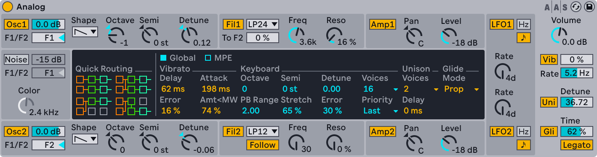
Analog is a virtual analog synthesizer, created in collaboration with Applied Acoustics Systems. With this instrument, we have not attempted to emulate a specific vintage analog synthesizer but rather to combine different features of legendary vintage synthesizers into a modern instrument. Analog generates sound by simulating the different components of the synthesizer through physical modeling. This technology uses the laws of physics to reproduce how an object or system produces sound. In the case of Analog, mathematical equations describing how analog circuits function are solved in real time. Analog uses no sampling or wavetables; the sound is simply calculated in real time by the CPU according to the values of each parameter. This sound synthesis method ensures unmatched sound quality, realism, warmth and playing dynamics.
30.1.1 Architecture and Interface
Analog’s signal flow is shown in the figure below:
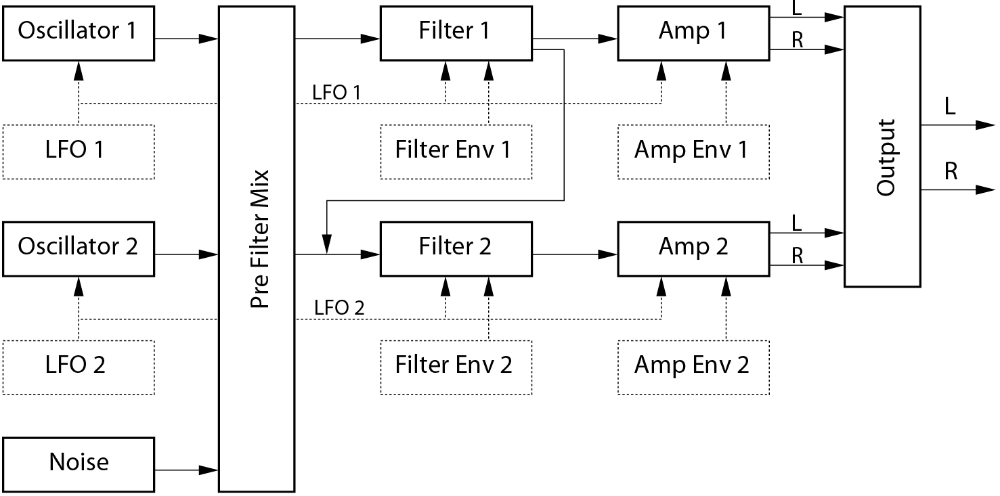
The primary sound sources of the synthesizer are two oscillators and a noise generator. These sources can be independently routed to two different multi-mode filters, which are each connected to an amplifier. Furthermore, the signal flow can be run through the filters in series or in parallel.
Analog also features two low-frequency oscillators (LFOs) which can modulate the oscillators, filters and amplifiers. Additionally, each filter and amplifier has its own envelope generator.
The Analog interface consists of two parts: the display surrounded on all sides by the shell. The shell contains the most important controls for a given section while the display updates to show parameter visualizations and additional controls for the section selected in the shell. In addition to the synthesis modules, there is a Global section that contains general performance parameters such as instrument volume, vibrato and polyphony, as well as an MPE section that includes controls for three MPE sources: pressure, slide and per-note pitch bend, which make it possible to shape Analog’s sound using an MPE-enabled controller.
30.1.2 Oscillators
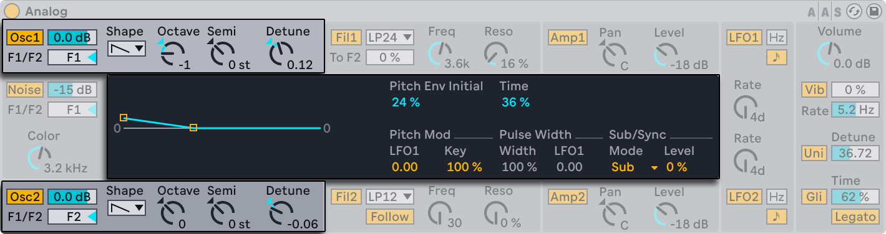
Analog’s two oscillators use physical modelling to capture the character of vintage hardware oscillators. Because they use modelling instead of wavetables, they avoid aliasing.
Each oscillator can be turned on or off independently via the switch labelled Osc 1 or Osc 2 in the shell, and the oscillator’s output level is adjusted by the slider to the right of this activator.
The F1/F2 slider controls the balance of the oscillator’s output to each of the two filters. When the slider is at the center position, equal amounts of signal will be sent to both filters. When set all the way to the top or bottom, signal will only be sent to Filter 1 or Filter 2 respectively.
The Shape chooser selects the oscillator’s waveform. The choices are sine, sawtooth, rectangular and white noise. When rectangular is selected, the Pulse Width parameter is enabled in the display, which allows you to change the pulse width of the waveform. Low Width values result in a very narrow waveform, which tends to sound tinny or “pinched.“ At 100%, the waveform is a perfect square, resulting in only odd harmonics. The pulse width can also be modulated by an LFO, via the slider next to Width. Note that this parameter is only enabled when the corresponding LFO is enabled.
The Octave, Semi and Detune knobs in the shell function as coarse and fine tuners. Octave transposes the oscillator by octaves, while Semi transposes up or down in semitone increments. The Detune knob adjusts in increments of one cent (up to a maximum of three semitones (300 cents) up or down).
Oscillator pitch can be modulated according to the settings of the Pitch Mod and Pitch Env parameters in the display. The LFO slider sets the amount that the LFO modulates pitch. Again, this parameter is only enabled if the LFO is on. The Key slider controls how much the oscillator tuning is adjusted by changes in MIDI note pitch. The default value of 100% means that the oscillator will conform to a conventional equal tempered scale. Higher or lower values change the amount of space between the notes on the keyboard. At 0%, the oscillator is not modulated by note pitch at all. To get a sense of how this works, try leaving one of the oscillators at 100% and setting the other’s Key scaling to something just slightly different. Then play scales near middle C. Since C3 will always trigger the same frequency regardless of the Key value, the oscillators will get farther out of tune with each other the farther away from C3 you play.
The Pitch Env settings apply a ramp that modulates the oscillator’s pitch over time. Initial sets the starting pitch of the oscillator while Time adjusts how long it will take for the pitch to glide to its final value. You can adjust both parameters via the sliders or by adjusting the breakpoints in the envelope display.
The Sub/Sync parameters in the display allow you to apply either a sub-oscillator or a hard synchronization mode. When the Mode chooser is set to Sub, the Level slider sets the output level of an additional oscillator, tuned an octave below the main oscillator. The sub-oscillator produces a square wave when the main oscillator’s Shape control is set to rectangle or sawtooth and a sine wave when the main oscillator is set to sine. Note that the sub-oscillator is disabled when the main oscillator’s Shape is set to white noise.
When the Mode chooser is set to Sync, the oscillator’s waveform is restarted by an internal oscillator whose frequency is set by the Ratio slider. At 0%, the frequency of the internal oscillator and the audible oscillator match, so sync has no effect. As you increase the Ratio, the internal oscillator’s rate increases, which changes the harmonic content of the audible oscillator. For maximum analog nastiness, try mapping a modulation wheel or other MIDI controller to the Sync ratio.
30.1.3 Noise Generator
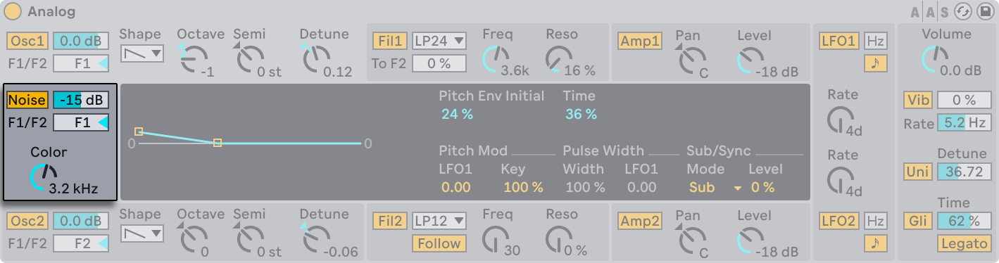
The Noise generator produces white noise and includes its own -6db/octave low-pass filter. The generator can be turned on or off via the Noise switch in the shell. Its output level is adjusted by the slider to the right of this activator.
The F1/F2 slider controls the balance of the noise generator’s output to each of the two filters. When the slider is at the center position, equal amounts of signal will be sent to both filters. When set all the way to the top or bottom, signal will only be sent to Filter 1 or Filter 2 respectively.
The Color knob sets the frequency of the internal low-pass filter. Higher values result in more high-frequency content.
Note that Noise has only shell parameters, so adjusting them does not change what is shown in the display.
30.1.4 Filters
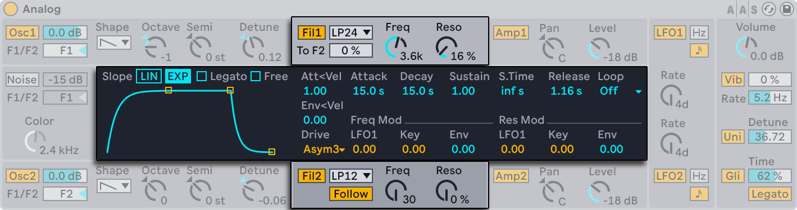
Analog’s two multi-mode filters come equipped with a flexible routing architecture, multiple saturation options and a variety of modulation possibilities. As with the oscillators, all parameters can be set independently for each filter.
The Fil 1 and Fil 2 switches in the shell toggle the respective filter on and off. The chooser next to the filter activator selects the filter type from a selection of 2nd and 4th order low-pass, band-pass, notch, high-pass and formant filters.
The resonance frequency of the filter is adjusted with the Freq knob in the shell, while the amount of resonance is adjusted with the Reso control. When a formant filter is chosen in the chooser, the Reso control cycles between vowel sounds.
Below each mode chooser is an additional control which differs between the two filters. In Filter 1, the To F2 slider allows you to adjust the amount of Filter 1’s output that will be sent to Filter 2. The Follow switch below Filter 2’s mode chooser causes this filter’s cutoff frequency to follow the cutoff of Filter 1. If this is enabled, Filter 2’s cutoff knob controls the amount of offset between the two cutoff amounts. If any of Analog’s modulation sources are controlling Filter 1’s cutoff, Filter 2 will also be affected by them when Follow is enabled.
In addition to the envelope controls, the displays for the filters contain various modulation parameters and the Drive chooser. Cutoff frequency and resonance can be independently modulated by LFO, note pitch and filter envelope via the sliders in the Freq Mod and Res Mod sections respectively. Positive modulation values will increase the cutoff or resonance amounts, while negative values will lower them.
The Drive chooser in the display selects the type of saturation applied to the filter output. The three Sym options apply symmetrical distortion, which means that the saturation behavior is the same for positive and negative values. The Asym modes result in asymmetrical saturation. For both mode types, higher numbers result in more distortion. Drive can be switched off entirely by selecting Off in the chooser. Experiment with the various options to get a sense of how they affect incoming signals.
30.1.5 Amplifiers
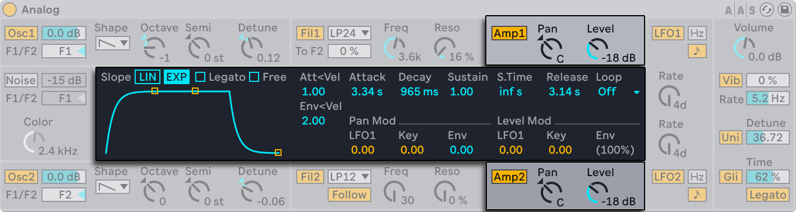
After the filters, the signal is routed to an amplifier which further shapes the sound with an amplitude envelope and panning. All parameters can be set independently for each amplifier.
The Amp 1 and Amp 2 switches in the shell toggle the respective amplifier on and off, while the output level is controlled by the Level knob. The Pan knob sets the position of the amplifier’s output in the stereo field.
In addition to the envelope controls, the displays for the amplifiers contain various modulation parameters. The Pan and Level amounts can be independently modulated by LFO, note pitch and amp envelope via the sliders in the Pan Mod and Level Mod sections respectively. Note that, when using note pitch as the modulation source for Level, middle C will always sound the same regardless of the modulation amount. Positive values will cause the level to increase for higher notes.
30.1.6 Envelopes
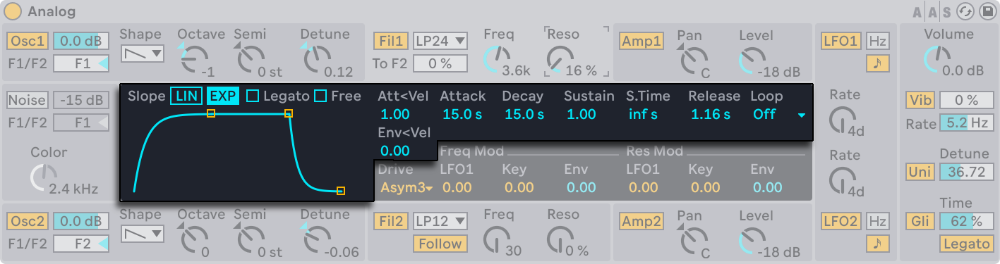
In addition to the pitch envelopes in the oscillator sections, Analog is equipped with independent envelopes for each filter and amplifier. All four of these envelopes have identical controls, which are housed entirely within the display. Each envelope is a standard ADSR (attack, decay, sustain, release) design and features velocity modulation and looping capabilities.
The attack time is set with the Attack slider. This time can also be modulated by velocity via the Att < Vel slider. As you increase the Att < Vel value, the attack time will become increasingly shorter at higher velocities.
The time it takes for the envelope to reach the sustain level after the attack phase is set by the Decay slider.
The Sustain slider sets the level at which the envelope will remain from the end of the decay phase to the release of the key. When this knob is turned all the way to the left, there is no sustain phase. With it turned all the way to the right, there is no decay phase.
The overall envelope level can be additionally modulated by velocity via the Env < Vel slider.
The S.Time slider can cause the Sustain level to decrease even if a key remains depressed. Lower values cause the Sustain level to decrease more quickly.
Finally, the release time is set with the Release knob. This is the time it takes for the envelope to reach zero after the key is released.
The Slope switches toggle the shape of the envelope segments between linear and exponential. This change is also represented in the envelope visualization.
Normally, each new note triggers its own envelope from the beginning of the attack phase. With Legato enabled, a new note that is played while another note is already depressed will use the first note’s envelope, at its current position.
Enabling the Free switch causes the envelope to bypass its sustain phase and move directly from the decay phase to the release phase. This behavior is sometimes called “trigger“ mode because it produces notes of equal duration, regardless of how long the key is depressed. Free mode is ideal for percussive sounds.
The Loop chooser offers several options for repeating certain segments of the envelope while a key is depressed. When Off is selected, the envelope plays once through all of its segments without looping.
With AD-R selected, the envelope begins with the attack and decay phases as usual, but rather than maintaining the sustain level, the attack and decay phases will repeat until the note is released, at which point the release phase occurs. ADR-R mode is similar, but also includes the release phase in the loop for as long as the key is held.
Note that in both AD-R and ADR-R modes, enabling Free will cause notes to behave as if they’re permanently depressed.
ADS-R mode plays the envelope without looping, but plays the attack and release phases once more when the key is released. With short attack and release times, this mode can simulate instruments with audible dampers.
30.1.7 LFOs
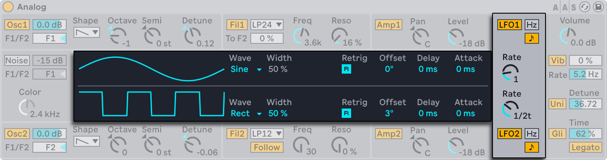
Analog’s two LFOs can be used as modulation sources for the oscillators, filters and amplifiers. As with the other sections, each LFO has independent parameters.
The LFO 1 and LFO 2 switches in the shell toggle the respective LFO on and off, while the Rate knob sets the LFO’s speed. The switch next to this knob toggles the Rate between frequency in Hertz and tempo-synced beat divisions.
The Wave chooser in the display selects the waveform for the LFO. The choices are sine, triangle, rectangle and two types of noise. The first noise type steps between random values while the second uses smooth ramps. With Tri or Rect selected, the Width slider allows you to adjust the pulse width of the waveform. With Tri selected, low Width values shift the waveform towards an upwards sawtooth, while higher values result in a downward saw. At 50%, the waveform is a perfect triangle. The behavior is similar with the Rect setting. At 50%, the waveform is a perfect square wave, while lower and higher values result in negative or positive pulses, respectively. Note that Width is disabled when the LFO’s waveform is set to sine or the noise modes.
The Delay slider sets how long it will take for the LFO to start after the note begins, while Attack sets how long it takes the LFO to reach its full amplitude.
With Retrig enabled, the LFO restarts at the same position in its phase each time a note is triggered. The Offset slider adjusts the phase of the LFO’s waveform.
30.1.8 Global Parameters
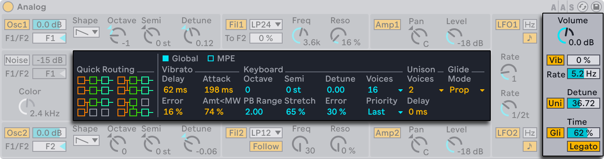
The Global shell and display parameters allow you to adjust Analog’s response to MIDI data and controls for performance parameters such as vibrato and glide.
The Volume control in the shell adjusts the overall output of the instrument. This is the instrument’s overall level, and can boost or attenuate the output of the amplifier sections.
The Vib switch turns the vibrato effect on or off, while the percentage slider next to it adjusts the amplitude of the vibrato. Analog’s vibrato effect is essentially an additional LFO, but is hardwired to the pitch of both oscillators. The Rate slider sets the speed of the vibrato.
Turning on the vibrato effect activates the four additional Vibrato parameters in the display. The Delay slider sets how long it will take for the vibrato to start after the note begins, while Attack sets how long it takes for the vibrato to reach full intensity. The Error slider adds a certain amount of random deviation to the Rate, Amount, Delay and Attack parameters for the vibrato applied to each polyphonic voice. The Amt < MW slider adjusts how much the modulation wheel will affect the vibrato intensity. This control is relative to the value set in the vibrato amount percentage slider in the shell.
The Uni switch in the shell turns on the unison effect, which stacks multiple voices for each note played. The Detune slider next to this switch adjusts the amount of tuning variation applied to each stacked voice.
Turning on the unison effect activates the two additional Unison parameters in the display. The Voices chooser selects between two or four stacked voices, while the Delay slider increases the lag time before each stacked voice is activated.
The Gli switch turns the glide effect on or off. This is used to make the pitch slide between notes rather than changing immediately. With Legato enabled, the sliding will only occur if the second note is played before the first note is released. The Time slider sets the overall speed of the slide.
Turning on the glide effect activates an additional Glide Mode chooser in the display. Selecting Const causes the glide time to be constant regardless of interval. Choosing Prop (proportional) causes the glide time to be proportional to the interval between the notes. Large intervals will glide slower than small intervals.
The four Quick Routing buttons on the left side of the display provide an easy way to quickly set up common parameter routings. The upper left option configures a parallel routing structure, with each oscillator feeding its own filter and amplifier exclusively. The upper right button is similar, but the oscillators each split their output evenly between the two filters. The bottom left option feeds both oscillators into Filter 1 and Amp 1, bypassing Filter 2 and Amp 2 entirely. Finally, the bottom right option configures a serial routing structure, with both oscillators feeding Filter 1, which is then fed exclusively to Filter 2 and Amp 2.
Note that the Quick Routing options do not affect any changes you may have made to the oscillator level, tuning or waveform parameters — they only adjust the routing of the oscillators to the filters and subsequent amplifiers.
The Keyboard section in the display contains all of Analog’s tuning and polyphony parameters. The Octave, Semi and Detune controls function as coarse and fine tuners. Octave transposes the entire instrument by octaves, while Semi transposes up or down in semitone increments. The Detune slider adjusts tuning in increments of one cent (up to a maximum of 50 cents up or down).
PB Range sets the range of pitch bend modulation in semitones.
Stretch simulates a technique known as stretch tuning, which is a common tuning modification made to electric and acoustic pianos. At 0%, Analog will play in equal temperament, which means that two notes are an octave apart when the upper note’s fundamental pitch is exactly twice the lower note’s. Increasing the Stretch amount raises the pitch of upper notes while lowering the pitch of lower ones. The result is a more brilliant sound. Negative values simulate “negative“ stretch tuning; upper notes become flatter while lower notes become sharper.
The Error slider increases the amount of random tuning error applied to each note.
The Voices chooser sets the available polyphony, while Priority determines which notes will be cut off when the maximum polyphony is exceeded. When Priority is set to High, new notes that are higher than currently sustained notes will have priority, and notes will be cut off starting from the lowest pitch. Low is the opposite. A Priority setting of Last gives priority to the most recently played notes, cutting off the oldest notes as necessary.
30.1.9 MPE Sources
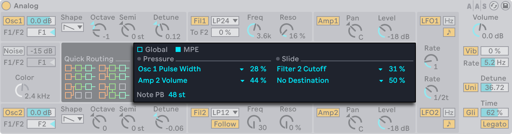
Toggling the MPE switch in the Global section of the display reveals three MPE sources: Pressure, Slide, and NotePB (per-note pitch bend), which can be used to further transform Analog’s sound.
You can specify up to two different destinations where MPE pressure data will be routed using the two Pressure Destination choosers. You can set how much the MPE pressure data will modulate the selected destinations using the MPE Pressure Amount sliders to the right.
Slide also includes two Destination choosers, each with its own MPE Slide Amount slider to control how much the MPE slide data affects the target.
The Pressure and Slide Activity LEDs light up when Analog receives MPE pressure and slide data respectively.
The Note PB slider sets the range of per-note pitch bend in semitones.
30.2 Collision
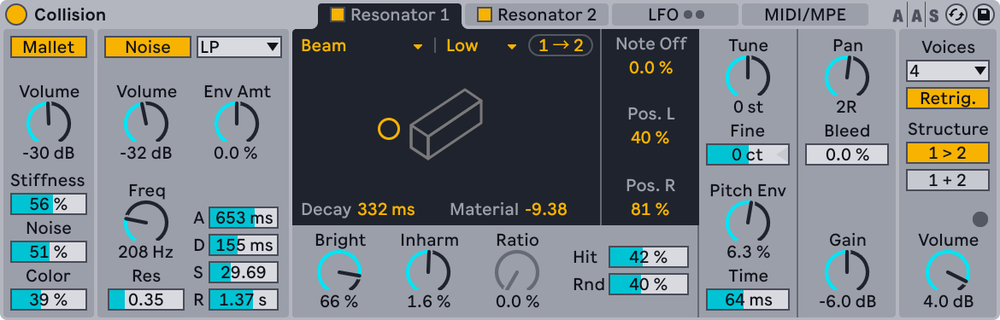
Collision is a synthesizer that simulates the characteristics of mallet percussion instruments. Created in collaboration with Applied Acoustics Systems, Collision uses physical modeling technology to model the various sound generating and resonant components of real (or imagined) objects.
30.2.1 Architecture and Interface
Collision’s sound is produced by a pair of oscillators called Mallet and Noise, which feed a pair of independent (or linked) stereo resonators. While the oscillators produce the initial component of the sound, it is the resonator parameters that have the greatest impact on the sound’s character.
Note that if both the Mallet and Noise sections are turned off, Collision will not produce any sound.
Collision’s interface is divided into sections and tabs. The Mallet and Noise sections contain controls for the corresponding Mallet and Noise oscillators. The Resonator 1 and Resonator 2 tabs contain parameters for both individual resonators.
The LFO tab contains two independent low-frequency oscillators (LFOs), which can each modulate multiple parameters. Similarly, the MIDI/MPE tab allows for MIDI pitch bend, modulation wheel and aftertouch messages and their MPE (MIDI Polyphonic Expression) equivalents to be routed to multiple destinations.
To the right of the MIDI/MPE tab is a section of global parameters, including voice polyphony, note retrigger, resonator structure, and overall output volume.
Note: Deactivating unused sections and tabs can help to save CPU resources.
30.2.2 Mallet Section
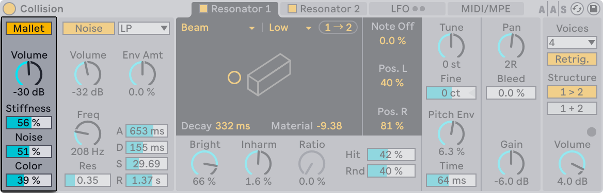
The Mallet section simulates the impact of a mallet against a surface. The parameters adjust the physical properties of the mallet itself.
You can toggle the Mallet button to switch the section on or off.
Volume controls the overall output level of the mallet. The Volume parameter can be modulated using pitch and velocity by adjusting the Key and Vel sliders in the MIDI tab.
Stiffness adjusts the hardness of the mallet. At low levels, the mallet is soft, which results in fewer high frequencies and a longer, less distinct impact. As you increase the stiffness, the impact time decreases and high frequencies increase. This parameter can also be modulated by pitch and velocity via the Key and Vel sliders in the MIDI tab.
Noise sets the amount of impact noise that is included in each mallet strike. This is useful for simulating the “chiff“ sound of a felt-wrapped mallet head. The Noise parameter can be modulated using pitch and velocity by adjusting the Key and Vel sliders in the MIDI tab.
Color sets the frequency of the noise component. At higher values, there are less low frequencies in the noise. This parameter has no effect if Noise is set to 0.
30.2.3 Noise Section
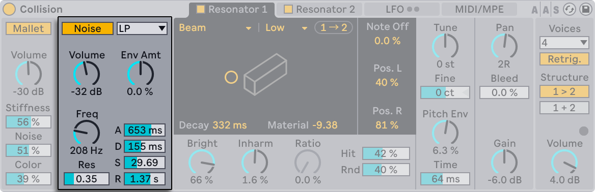
Like the Mallet, the Noise section produces Collision’s initial impulse sound. The Noise oscillator produces white noise, which is then fed into a multimode filter with a dedicated envelope generator. This section can be used instead of, or in addition to, the Mallet section.
You can toggle the Noise button to switch the section on or off.
Next to the Noise button is a drop-down menu for the available noise filter types. You can choose between LP, HP, BP, and LP+HP. Filter cutoff and resonance can be adjusted by using the Freq knob and Res slider.
In BP mode, the Res slider adjusts resonance, while in LP+HP mode, it adjusts bandwidth. The filter frequency can also be modulated by note pitch, velocity, or the envelope generator, via the Key and Vel sliders in the MIDI tab or the Env Amt knob control.
Volume sets the overall output level of the Noise section, and can be modulated by pitch and velocity by adjusting the Key and Vel sliders in the MIDI tab.
The Env Amt knob controls an envelope generator with standard ADSR (attack, decay, sustain, release) options.
The attack time — how quickly Noise reaches full volume — is set with the A (Attack) slider, while the time it takes for the envelope to reach the sustain level after the attack phase is set by the D (Decay) slider.
The S (Sustain) slider sets the level at which the envelope will remain from the end of the decay phase to the release of the key. When this slider is set to 0, there is no sustain phase. With it set to 100, there is no decay phase.
Finally, the release time is set with the R (Release) slider. This is the time it takes for the envelope to reach zero after the key is released.
The Freq knob defines the center or cut-off frequency of the filter. The Res slider sets the resonance of the filter frequency in LP, HP, and BP filters, and the width of the LP+HP filter.
30.2.4 Resonator Tabs
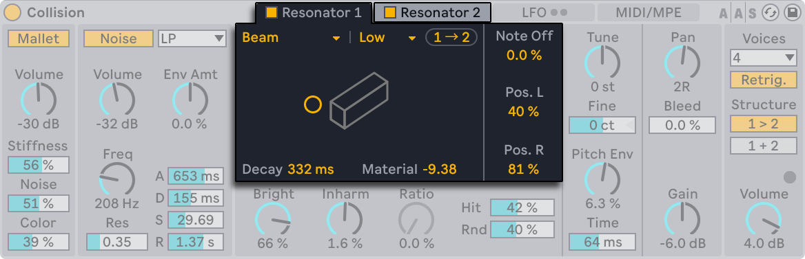
The majority of Collision’s character is determined by the parameters in the two Resonator tabs. Each resonator can be toggled on or off via the switch in its tab. Keep in mind that if both resonators are turned off, no sound will be produced.
At the top of the Resonator tab, you will see a Resonance Type drop-down menu of resonant objects:
- Beam simulates the resonance properties of beams of different materials and sizes.
- Marimba, a specialized variant of the Beam model, reproduces the characteristic tuning of marimba bar overtones which are produced as a result of the deep arch-cut of the bars.
- String simulates the sound produced by strings of different materials and sizes.
- Membrane is a model of a rectangular membrane (such as a drum head) with a variable size and construction.
- Plate simulates sound production by a rectangular plate (a flat surface) of different materials and sizes.
- Pipe simulates a cylindrical tube that is fully open at one end and has a variable opening at the other (adjusted with the Opening parameter.)
- Tube simulates a cylindrical tube that is closed at both ends.
Selecting an object adds a visualization of it to the X-Y Controller display.
Next to the Resonance Type drop-down is a Quality menu with options ranging from Eco to High. Quality controls the trade-off between the sound quality of the resonators and CPU performance by reducing the number of overtones that are calculated. Eco uses minimal CPU resources, while High creates more sophisticated resonances. Note that the Pipe or Tube resonators do not offer a Quality menu.
Each resonator contains a copy button (1 → 2 in Resonator 1 and 2 → 1 in Resonator 2) that you can use to copy all the settings from one resonator to the other.
Using the X-Y Controller, you can click and drag the mouse horizontally to change the resonant object’s decay time, or vertically to change the value of the Material/Radius parameter.
The decay time adjusts the amount of the internal damping in the resonator and can also be adjusted using the Decay slider.
The Material slider adjusts the variation of damping at different frequencies. At lower values, low frequency components decay slower than high frequency components (which simulates objects made of wood, rubber, or nylon). At higher values, high frequency components decay slower (which simulates objects made of glass or metal).
In the Pipe and Tube resonators, a Radius parameter is available in place of the Material parameter. This slider adjusts the radius of the pipe or tube. As the radius increases, the decay time and high frequency sustain both increase. At very large sizes, the fundamental pitch of the resonator also changes.
The Decay and Material/Radius parameters can be modulated by note pitch and velocity via the Key and Vel sliders in the MIDI tab.
An additional Ratio parameter is available for the Membrane and Plate resonators, which adjusts the ratio of the object’s size along its x and y axes.
The Brightness control adjusts the amplitude of various frequency components. At higher values, higher frequencies are louder. This parameter is not used with the Pipe or Tube resonators.
The Inharm knob adjusts the pitch of the resonator’s harmonics. At negative values, frequencies are compressed, increasing the number of lower partials. At positive values, frequencies are stretched, increasing the number of upper partials. Inharm can also be modulated by velocity via the slider in the MIDI tab. Note that this parameter is not used with the Pipe or Tube resonators.
Opening, which is only available for the Pipe resonator, scales between an open and closed pipe. At 0%, the pipe is fully closed on one side, while at 100% the pipe is open at both ends. This parameter can also be modulated by velocity in the MIDI tab.
The Hit slider adjusts the location on the resonator at which the object is struck or otherwise activated. At 0%, the object is hit at its center. Higher values move the activation point closer to the edge. The Hit position can also be randomized by increasing the value of the Rnd slider. Note that this parameter is not used with the Pipe or Tube resonators.
Note Off determines the extent to which MIDI Note Off messages mute the resonance. At 0%, Note Offs are ignored, and the decay time is based only on the value of the Decay parameter. This is similar to how real-world mallet instruments behave, such as marimbas and glockenspiels. At 100%, the resonance is muted immediately at Note Off, regardless of the Decay time.
The Pos. L and Pos. R sliders adjust the location on the left and right resonator where the vibrations are measured. At 0%, the resonance is monitored at the object’s center. Higher values move the listening point closer to the edge. These parameters are not used with the Pipe or Tube resonators, which are always measured in the middle of their permanently open end.
30.2.4.1 Tuning Section
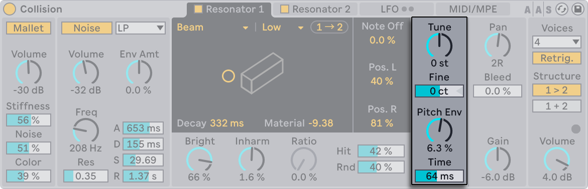
The Tune knob and Fine slider function as coarse and fine tuning controls. Tune moves up or down in semitone increments, while Fine adjusts in increments of one cent (up to a maximum of one quarter tone (50 cents) up or down).
The Tune knob can also be modulated via the Key slider in the MIDI tab. The Key slider sets how much the resonator’s tuning is adjusted by changes in MIDI note pitch. The default value of 100% means that the resonator will conform to a conventional equal tempered scale. At 200%, each half step on the keyboard will result in a whole step change in tuning. At negative values, the resonator will drop in pitch as you play higher on the keyboard.
The Pitch Envelope parameters (Pitch Env and Time) apply a ramp that modulates the resonator’s pitch over time. Pitch Env sets the starting pitch while Time adjusts how long it will take the pitch to glide to its final value. The starting pitch can be modulated by velocity via the corresponding Vel slider in the MIDI tab.
30.2.4.2 Mixer Section
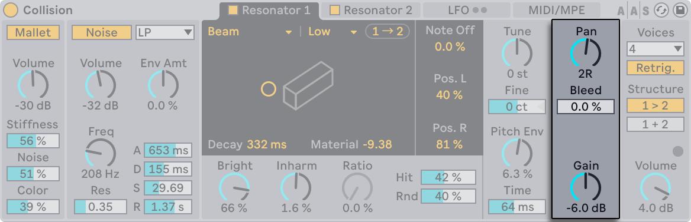
Each resonator has its own Gain and Pan controls. Pan can also be modulated by note pitch via the Key slider in the MIDI tab.
The Bleed control mixes a portion of the original oscillator signal with the resonated signal. At higher values, more of the original signal is applied. This is useful for restoring high frequencies, which can often be damped when the tuning or quality are set to low values.
Gain adjusts the output level of the selected resonator.
30.2.5 LFO Tab
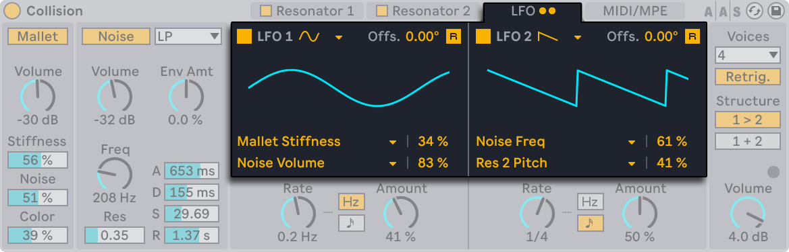
Collision’s two independent LFOs can be used as modulation sources for a variety of mallet, noise, and resonator parameters, which are selectable in the Destination choosers. Additionally, they can modulate each other.
The LFO 1 and LFO 2 switches toggle the respective LFO on and off, while the waveform chooser determines the wave shape. The choices are sine, square, triangle, sawtooth up, sawtooth down and two types of noise. The first noise type steps between random values while the second uses smooth ramps.
The Offs. slider sets the phase offset of the LFO. When Retrigger is enabled, triggering a note restarts the LFO with the waveform phase set by the Offset parameter.
Each LFO can modulate two targets, which are set via the Destination choosers. The intensity of the modulations is adjusted with the LFO Destination Amount sliders. Note that these modulation amounts are relative to the LFO’s Amount value.
Rate adjusts the speed of the LFO and can be set in Hertz or tempo-synced beat divisions. The Amount knob determines the overall intensity of the LFO. Rate can be modulated by note pitch and Amount by velocity in the MIDI tab.
30.2.6 MIDI/MPE Tab
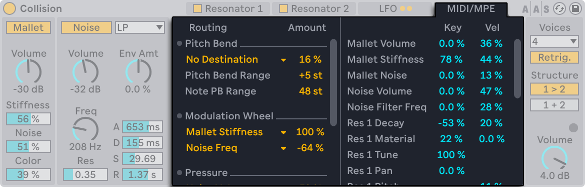
The MIDI/MPE tab allows for a wide variety of internal MIDI mappings, both for standard and MPE-enabled MIDI controllers. A MIDI controller’s pitch bend (including per-note pitch bend), modulation wheel, pressure and slide signals can be mapped to two destinations each, with independent modulation intensities set via the Amount sliders.
Additional mallet, noise, resonator, and LFO parameters can be modulated using pitch or velocity using the Key and Vel sliders.
30.2.6.1 The Global Section
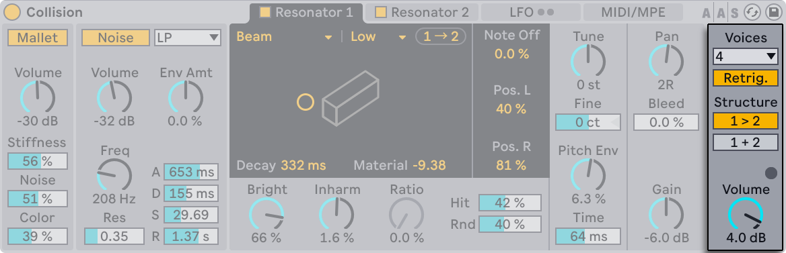
The global section contains the parameters that relate to the overall behavior and performance of Collision.
The Voices drop-down menu lets you set the maximum number of notes that can sound simultaneously.
When Retrig. is on, notes which are already playing will be retriggered, rather than generating an additional voice. This can help to save CPU resources.
Structure determines the signal flow through the resonators.
In serial mode 1 > 2 both resonators output to Resonator 1. Resonator 1 is then mixed down to mono and routed to Resonator 2, as well as its own mixer (in stereo).
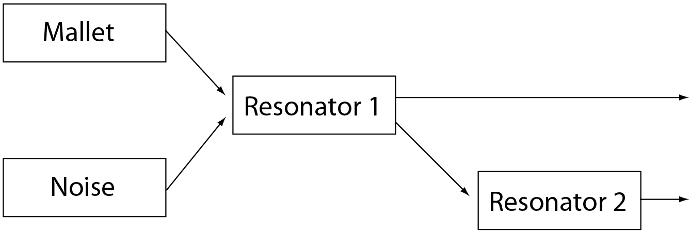
In parallel mode 1 + 2 the output from the Mallet and Noise sections is mixed and then sent directly to both resonators.
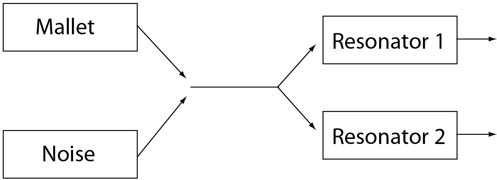
Volume sets the overall volume output.
30.2.7 Sound Design Tips
Although Collision has been designed to model the behavior of objects that exist in the physical world, it is important to remember that these models allow for much more flexibility than their physical counterparts. While Collision can produce extremely realistic simulations of conventional mallet instruments such as marimbas, vibraphones and glockenspiels, it is also very easy to “misuse“ the instrument’s parameters to produce sounds which could never be made by an acoustic instrument.
To program realistic instrument simulations, it helps to think about the chain of events that produces a sound on a mallet instrument (a marimba, for example), and then visualize those events as sections within Collision:
- A beater (Mallet) strikes a tuned bar (Resonator 1).
- The tuned bar’s resonance is amplified by means of a resonating tube (Resonator 2).
Thus the conventional model consists of the Mallet Exciter and the two resonators in a serial (1 > 2) configuration.
Of course, to program unrealistic sounds, anything goes:
- Try using the Noise Exciter, particularly with long envelope times, to create washy, quasi-granular textures. These parameters can also be used to simulate special acoustic effects such as bowed vibraphones or crystal glasses.
- Experiment with the resonators in parallel (1 + 2) configuration.
- Use the LFOs and MIDI controllers (including MPE-enabled ones) to modulate Collision’s parameters.
A word of caution: in many ways, Collision’s models are idealized versions of real-world objects. Consequently, it is very easy to program resonances that are much more sensitive to input than any physical resonator could be. Certain combinations of parameters can cause dramatic changes in volume. Make sure to keep output levels low when experimenting with new sounds.
30.3 Drift
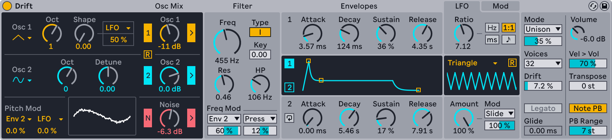
Drift is a versatile synthesizer with intuitive controls and a simple interface that is fully MPE-capable. Based on subtractive synthesis, Drift has been carefully built for quick and easy sound design while using minimal CPU resources.
Drift’s interface is divided into six main sections: an oscillator section, a dynamic filter section, an envelopes section, two modulation sections (LFO and Mod), and a section of global controls.
30.3.1 Subtractive Synthesis
Subtractive synthesis is a technique that generally starts with a waveform that is then shaped using filters to sculpt the original timbres into new forms. In addition to this process, Drift offers many modulation options for tweaking and customizing the sound even more, allowing you to easily create a wide variety of sounds. The signature Drift control lets you add pitch and frequency variation to each voice, resulting in a slightly detuned, fluctuating pulse throughout the tone.
30.3.2 Oscillator Section
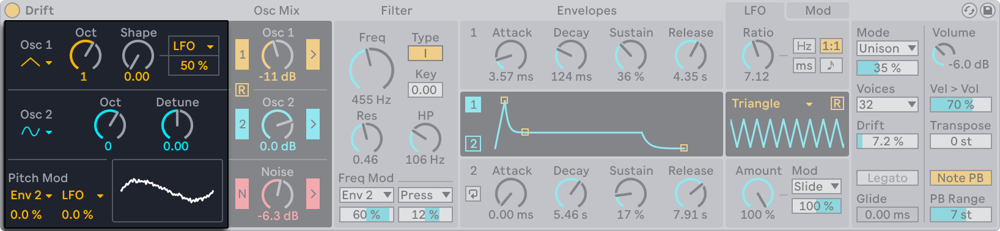
Drift’s Oscillator section features two separate oscillators, pitch modulation controls, a waveform display, an oscillator mixer, and a noise generator.
30.3.2.1 Oscillator 1
You can select from several curated waveforms using the Osc 1 drop-down menu: Sine, Triangle, Shark Tooth, Saturated, Saw, Pulse, and Rectangle. The Shark Tooth and Saturated waveforms are unique to Drift; Shark Tooth is based on a classic Moog analog shape with the same name, while Saturated works well for bass sounds.
The Oct knob transposes Oscillator 1 in octaves. You can use the Shape knob to change the harmonic content of the waveform into something slightly different, resulting in an effect similar to pulse-width modulation. As the timbre varies between each waveform, they all respond differently to the Shape control. When you make adjustments to the control, you can view the result in the Waveform Display located at the bottom of the Oscillator section. You’ll notice how the waveform changes as you tweak the Shape value.
To the right of the Shape knob, the Oscillator 1 Shape Mod Source drop-down lets you select a modulation source that will affect the Shape control, allowing you to further morph the waveform:
- Env 1
- Env 2/Cyc - Envelope 2 or the Cycling Envelope can be used for modulation, depending on which is activated.
- LFO
- Key - When the Shape Mod Amount is set to a positive value, higher note pitches will produce more modulation and lower pitches less, and vice versa when the amount is set to a negative value.
- Velocity - Incoming velocity data will be used for modulation; higher note velocities will produce more modulation and lower note velocities less.
- Modwheel
- Pressure
- Slide
You can set the amount of modulation anywhere between -100% to 100% using the Oscillator 1 Shape Mod Amount slider. Note that Shape Mod can also introduce modulation to the waveform when set between values of 1% - 100%, even if the Shape control value itself is set to 0%.
30.3.2.2 Oscillator 2
Using the Osc 2 drop-down menu, you can select a waveform for the second oscillator: Sine, Triangle, Saturated, Saw, and Rectangle.
The Oct knob transposes Oscillator 2 in octaves, while the Detune control offers transposition in semitones.
30.3.2.3 Pitch Mod
The Pitch Mod section contains two modulation source options, which will affect the pitch of both oscillators. You can choose Env 1, Env 2 / Cyc, LFO, Key, Velocity, Modwheel, Pressure, or Slide as a modulation source using the Oscillator Pitch Mod Source drop-down menus. The Oscillator Mod Amount sliders determine how much each source modulates the pitch within a range from -100% to 100%.
When applying pitch modulation using an LFO that uses the Ratio time mode, it is possible to generate FM tones.
30.3.2.4 Waveform Display
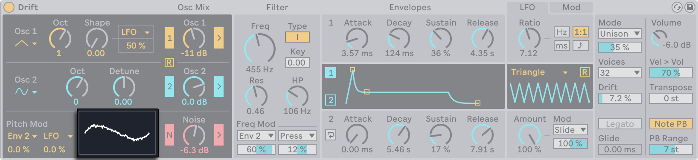
The waveform display shows the result of the combined output of Osc 1, Osc 2 and the noise generator, if enabled. As you make adjustments to the oscillators, you will see how the waveform changes in the display.
30.3.2.5 Oscillator Mixer
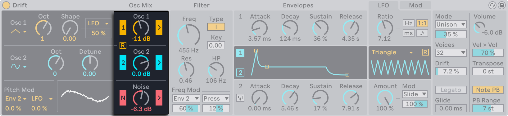
In Drift’s Oscillator Mixer, you can enable Oscillator 1 and 2, as well as a noise generator that adds white noise to the overall waveform shape, by using the respective switches.
You can also set the gain for each oscillator and the noise generator with the Osc 1, Osc 2, and Noise controls. When filter processing is on, high oscillator gain values can reach the maximum “headroom” of the filters, at which point they stop functioning linearly, resulting in a complex distortion similarly found in analog hardware.
There are two saturation points in the filter circuits that cause this distortion, one before the filter and one after. As the oscillator gain values are increased from the default -6.0 dB, the first saturation point will become activated, and the second will be triggered when gain values are above 0.0 dB.
Enabling the arrow toggles to the right of the gain controls switches on filter processing for the oscillators and noise generator. If filter processing is switched off, the oscillator and noise generator output bypasses the filter completely.
The R toggle switches Retrigger for the oscillators on or off. If Retrigger is on, the phase of both oscillators is reset to the same position each time a note is played; if switched off, the oscillators are free-running.
30.3.3 Filter Section
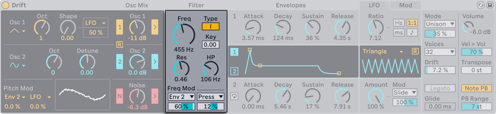
Filtering plays an important role in shaping the timbres produced by the oscillators.
Drift’s Filter section has a low-pass filter that can be switched between two filter types, filter key tracking, a resonance control, a high-pass filter, and two frequency modulation controls.
The Freq knob sets the cutoff frequency of the low-pass filter. You can use the Type toggle to switch between two distinct low–pass filters: Type I (12 dB/octave) and Type II (24 dB/octave).
Type I uses a DFM-1 filter which feeds back more of its distortion internally, resulting in a broad range of tones from subtle filter sweeps to warm drive.
Type II has the Cytomic MS2 filter which uses a Sallen-Key design and soft clipping to limit resonance.
The Key slider determines how the pitch of incoming MIDI notes influences the low-pass filter’s frequency. If set to 0.00, MIDI notes have no effect on filter frequency. If set to 1.00, the filter frequency will be lower for low notes and higher for high notes.
The Res knob adjusts the resonance of the low-pass filter, while the HP knob sets the cutoff frequency for the high-pass filter.
You can also click anywhere in the Filter section to access and adjust the envelope using the display in the Envelopes section with an X-Y controller. You can drag the left filter dot horizontally to set the high-pass frequency. The right filter dot adjusts the low-pass frequency when dragged horizontally or the resonance amount when dragged vertically.
You can select up to two modulation sources for the low-pass filter cutoff frequency using the Low-pass Modulation Source drop-down menus in the Freq Mod section. The Low-pass Modulation Amount sliders let you determine how much each source modulates the frequency within a range from -100% to 100%.
30.3.4 Envelopes Section
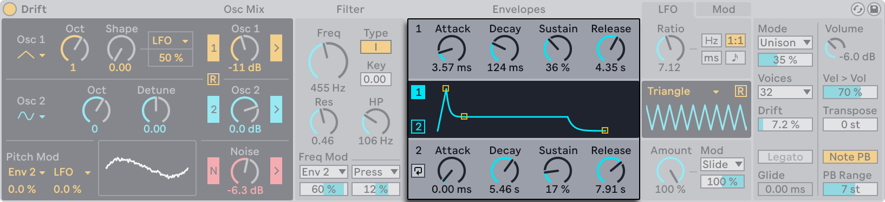
Envelopes generally determine how the amplitude of the sound changes from the moment a note is played to when it is released.
Drift’s Envelopes section contains two separate envelopes: one which controls how the amplitude changes and another that can be used specifically for modulation.
30.3.4.1 Envelope 1
Envelope 1 determines how the amplitude of the Oscillator section’s output (including both oscillators, as well as the Noise generator if enabled) begins and changes when a note is played and then released.
You can set the Attack, Decay, Sustain, and Release controls using the respective knobs or by adjusting the envelope itself in the display.
Attack sets the time needed to travel from the initial value to the peak value.
Decay sets the time needed to travel from the peak value to the Sustain level.
Sustain sets the level reached at the end of the Decay stage; the envelope will remain at this level until the note ends.
Release sets the time needed to travel back to zero after the note is released.
You can toggle between Envelope 1 and Envelope 2 by clicking the respective section in the UI, or by using the 1 and 2 toggles in the display. The selected envelope will be shown in the display for editing.
30.3.4.2 Envelope 2
Envelope 2 also has Attack, Decay, Sustain and Release controls however, unlike Envelope 1, Envelope 2 is not mapped to amplitude by default, and can be used as a source for all modulation source options within Drift.
Envelope 2 can be changed from an ADSR envelope to a Cycling Envelope by toggling the switch to the left of the Attack control.
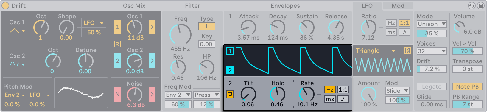
The Cycling Envelope functions similarly to an LFO modulation that restarts with each incoming MIDI note.
The Tilt knob moves the midpoint of the envelope, at very low or high amounts this can also affect the envelope’s slopes. The Hold control defines how long the envelope stays at its maximum level.
By default, the Cycling Envelope displays the Rate control, which is one of four possible time modes, also including Ratio, Time, or Sync. You can select the other modes by clicking the switches to the right of the control. Depending on the time mode, the repetition rate can be set in Hz, ratio, milliseconds, or tempo-synced beat divisions.
30.3.5 LFO Section
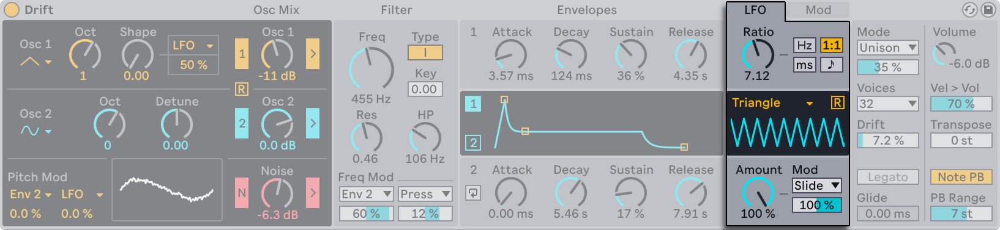
Like the Cycling Envelope, Drift’s LFO can be set in one of four different time modes: Rate, Ratio, Time, or Sync. The time mode determines the repetition rate of the LFO in Hz, ratio, milliseconds, or tempo-synced beat divisions.
In the LFO display, you can select from nine different waveforms using the drop-down menu:
- Sine
- Triangle
- Saw Up
- Saw Down
- Square
- Sample & Hold
- Wander is a sample and hold with an S-shape which interpolates between two values at the rate of the LFO.
- Linear Envelope is a one-shot decay envelope with a linear decay.
- Exponential Envelope is a one-shot decay envelope with an exponential decay.
You can use the R switch to turn Retrigger on or off. If on, the LFO resets to the same position in its phase each time a note is triggered. If off, the LFO is free-running.
The LFO Amount knob sets the overall intensity of the LFO. The LFO Modulation Source drop-down menu lets you select a modulation source for the LFO, while the LFO Modulation Amount slider determines how much that modulation is applied to the LFO.
30.3.6 Mod Section
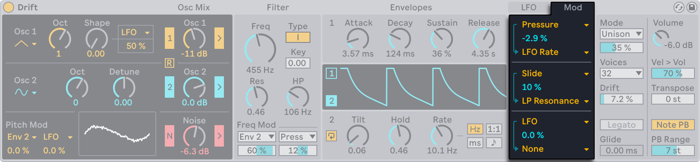
Most of Drift’s parameters can be modulated; you can select up to three modulation sources and destinations in the Mod section.
You can choose from the following sources using the Modulation Source choosers: Env 1, Env 2 / Cyc, LFO, Key, Velocity, Modwheel, Pressure, or Slide.
The following destinations are available in the Modulation Destination choosers: Osc 1 Gain, Osc 1 Shape, Osc 2 Gain, Osc 2 Detune, Noise Gain, LP Frequency, LP Resonance, HP Frequency, LFO Rate, Cyc Env Rate, and Main Volume.
You can use the Modulation Amount sliders to set how much the modulation destination is affected by the modulation source within a range of -100% to 100%.
30.3.7 Global Section
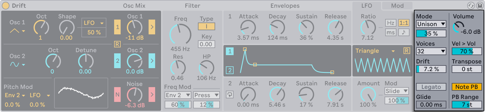
Drift’s global controls affect the overall behavior and performance of the instrument.
The Mode chooser lets you select from Drift’s four different Voice Modes:
Poly uses one voice per note and offers up to 32 voices of polyphony.
Mono plays one note at a time, but the note is rendered using four voices to produce a unison effect depending on the Mono Thickness value. The Mono Thickness slider lets you adjust the relative volume of the four voices associated with each note. When Thickness is set to 0, only one voice will be played for a note. As Mono Thickness is set to higher values, the volume of the other three voices increases so that they become audible with each note. A new note will choke the previously played note, if it is still being held.
Stereo uses two voices per note and pans them to the left and right. The Stereo Spread slider sets how much panning variation is applied across the individual voices. At higher amounts, the voices are further apart, producing a widening effect.
Unison slightly detunes the four voices for each note independently from one another. The Unison Strength slider determines how much pitch variation is applied across individual voices. When set to higher values, more variation is added to each voice.
You can select the maximum number of voices that can play simultaneously using the Voices drop-down menu. Certain Voice Modes can utilize more voices than notes played, meaning that depending on which Voice Mode is selected, the polyphony will be different. For example, when the Voices amount is set to 32 voices:
- Poly mode uses 1 voice per note and has a maximum of 32-note polyphony.
- Stereo mode uses 2 voices per note and has a maximum of 16-note polyphony.
- Unison mode uses 4 voices per note and has a maximum of 8-note polyphony.
The Drift slider adds slight variation to each voice, affecting different aspects of the voice’s sound, such as pitch and filter cutoff. Every voice in Drift has a different randomization for the oscillators and filter frequency; adjusting the Drift control increases or decreases this unique randomization. At higher amounts, the gaps between the oscillators and the filter widens, making the sound more out of tune.
When the Voice Mode is set to Mono, you can enable the Legato switch so that triggering a new voice will change its pitch without resetting its envelopes. The Glide slider lets you adjust the time overlapping notes take to slide their pitch to the next incoming pitch when notes are played legato.
The Volume knob sets the overall volume for the instrument, while the Vel > Vol slider determines how much the volume will be modulated by incoming MIDI note velocity.
The Transpose slider lets you adjust the global pitch in semitones within a range of -48 to 48 st. You can switch on the Note PB toggle to enable per-note pitch bend. Switching Note PB off lets you use an MPE controller without having the pitch change based on finger position. The PB Range slider sets the global pitch bend range in semitones.
30.4 Drum Sampler
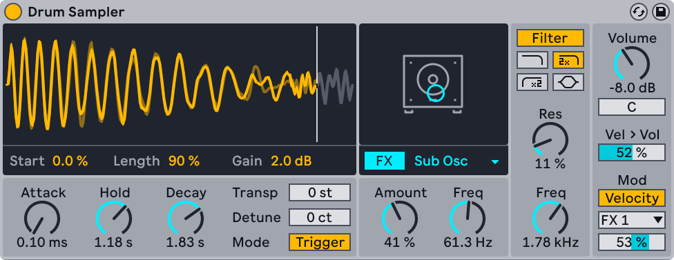
Drum Sampler is an instrument designed for playing back one-shot samples in Drum Racks. It offers key sampler features such as start and length controls, an AHD amplitude envelope, and pitch controls. Drum Sampler also includes a filter section, modulation options, and a set of dedicated playback effects for manipulating samples in various ways.
30.4.1 Sample Controls Section
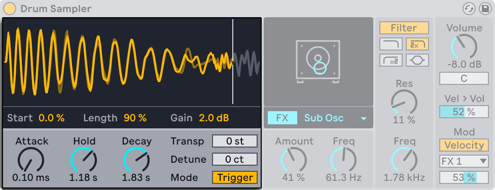
In the Sample Controls section, you can modify the sample’s envelope, pitch, and volume, as well as swap out a loaded sample.
To load a sample into Drum Sampler, double-click a file in the browser or drag and drop it onto the waveform display.
The Sample Start slider sets the point where sample playback begins, calculated as a percentage of the sample’s length. Hold Shift while dragging the slider to adjust the start point in fine increments. This also causes the display to zoom in on the waveform.
The Sample Length slider sets the length of the region that is played, calculated as a percentage of the sample’s total length.
You can use the Sample Gain slider to adjust the volume of the sample, from -70 to 24 dB.
Adjusting the Sample Start, Sample Length, and Sample Gain controls also updates the waveform in the display.
You can use the Attack, Hold, and Decay controls to adjust the sample’s envelope.
Attack sets the time needed to travel from the envelope’s initial level to its peak level.
Hold sets the time the envelope’s amplitude level remains at the peak level after reaching the attack time in Trigger mode. You can set the Hold time to inf (i.e., infinite) to play the sample for its entire length. Note that this parameter is disabled when the device’s Envelope Mode is set to Gate.
Decay sets the time needed to travel from the peak level back to zero after the Hold time is reached in Trigger mode, or once the note is released in Gate mode.
The Transpose slider sets the global transposition amount, from -48 to 48 semitones, while the Detune slider sets the global detune amount, from -50 to 50 cents.
Drum Sampler offers two envelope modes: Trigger and Gate. In Trigger mode, the sample continues to play for the duration of the set Hold time after a note is released. In Gate mode, the sample fades out according to the set Decay time once a note is released.
Hovering over the waveform display reveals additional controls for managing the loaded sample.
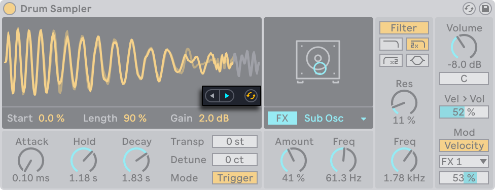
Use the Swap to Next Similar Sample button to cycle through samples that sound similar to the original file. To go back through the options, click the Swap to Previous Similar Sample button. You can also right-click the display and select Show Similar Files to access a list of similar samples in the browser.
When cycling through samples, you can return to the initially loaded file by right-clicking the waveform display and selecting Return to Reference. To set the currently loaded file as a new reference for swapping, use the Save as Similarity Reference option.
The hot-swap button opens the Hot-Swap Browser, where you can replace the loaded sample with a different one. To replace Drum Sampler with another instrument, use the hot-swap button in the device’s title bar.
30.4.2 Playback Effects Section
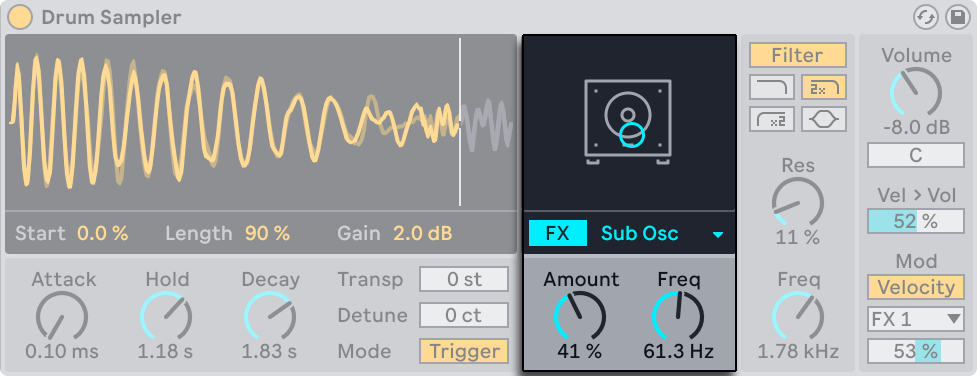
You can apply one of nine playback effects to further sculpt a sample’s sound: Stretch, Loop, Pitch Env, Punch, 8-Bit, FM, Ring Mod, Sub Osc, and Noise.
Each playback effect has two parameters, which can be adjusted via dedicated knobs or by using the X/Y pad. Drag vertically on the X/Y pad to adjust the first parameter, and drag horizontally to adjust the second.
Use the Playback Effect On toggle to turn this section on or off. When enabled, you can select an effect from the Playback Effect Type drop-down menu.
Stretch changes the sample’s length without altering its pitch. This produces granular artifacts, which add lo-fi texture to the sound. The Factor control sets the amount of time-stretching as a multiple of the original playback speed. The Grain Size control sets the size of the grain used to time-stretch the sample in milliseconds.
Loop repeats a portion of the sample. The Loop Offset control sets the loop start point relative to the sample start. The Loop Length control sets the loop’s duration in milliseconds.
Pitch Env uses an envelope to modulate the pitch of the sample over time. The Pitch Envelope Amount control sets the amount of pitch modulation applied, from -100 to 100%. Positive values result in a higher pitch, while negative values result in a lower pitch. The Pitch Envelope Decay control sets the time it takes for the pitch to return to the base value as defined by the device’s global pitch controls.
Punch applies ducking with a fixed attack and an envelope shaped to emphasize the sample’s transient. The Punch Amount control sets the amount of ducking applied. The Punch Release control determines how long it takes for the gain reduction to return to zero after the initial trigger.
8-Bit applies a combination of filtering, bit reduction, and sample rate reduction to recreate the sound of 8-bit CPU chips. The 8-Bit Sample Rate control sets the sample rate at which the sample is played back. The 8-Bit Decay Time control sets the decay time of the effect’s built-in low-pass filter.
FM uses a sine wave to modulate the sample’s pitch. The Amount control sets the intensity of the frequency modulation, while the FM Frequency control sets the frequency used to modulate the sample’s pitch.
Ring Mod applies ring modulation to the sample. The Amount control sets how much modulation is applied. The Ring Mod Frequency control sets the frequency used to modulate the sample’s amplitude. Low values produce a tremolo effect, while high values produce artifacts that are typical of ring modulation.
Sub Osc layers a sub oscillator with the sample. The Sub Oscillator Amount knob sets the oscillator’s level. The oscillator envelope uses the device’s attack and decay settings. The Sub Oscillator Frequency sets the oscillator’s frequency, from 30 to 120 Hz.
Noise Osc layers a noise oscillator with the sample. The Noise Amount knob sets the oscillator’s level. The oscillator envelope uses the device’s attack and decay settings. The Noise Color control sets the frequency used to filter the oscillator.
Note that time-based and frequency-related controls in the Stretch, Loop, FM, Ring Mod, Sub Osc, and Noise Osc effects are influenced by the device’s global pitch controls and the MIDI note played. This ensures that each effect’s pitch follows the pitch of the sample as different notes are played or when the sample is transposed.
Additionally, the modulation decay of the FM and Ring Mod effects is affected by the global decay time. For example, with short decay times, modulation is applied only to the sample’s transient.
30.4.3 Filter Section
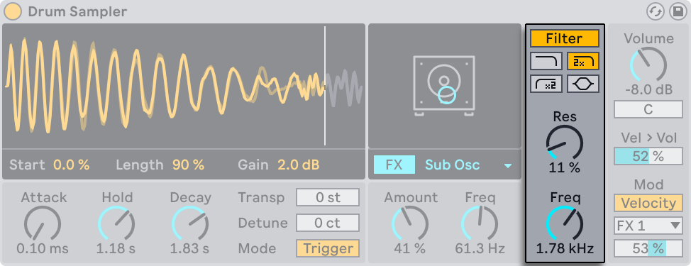
Use the Filter On toggle to turn the filter on or off.
There are four filter types to choose from: a 12 dB low-pass filter, a 24 dB low-pass filter, a 24 dB high-pass filter, and a peak filter.
The low and high-pass filters include dedicated Resonance and Filter Frequency controls. When the peak filter is selected, you can use the Peak Filter Gain and Filter Frequency controls to boost or cut a specific frequency range.
30.4.4 Global Section
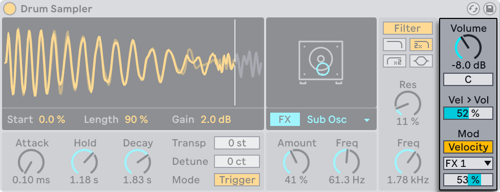
In the Global Section, you can adjust the output volume, panning, velocity-to-volume ratio, and modulation parameters.
The Volume control sets the device’s global output level, from -36 to 36 dB, while the Pan slider adjusts the stereo position.
The Velocity to Volume slider determines how much the device’s volume is modulated by incoming MIDI note velocity.
Use the Modulation Source toggle to switch between two modulation sources: Velocity or Slide (MPE). Then select a modulation target from the Modulation Destination drop-down menu.
The Filter target modulates the filter cutoff frequency.
You can modulate any of the individual envelope stages with the Attack, Hold, and Decay targets.
Use FX1 and FX2 to modulate the two parameters of the currently selected playback effect.
The Modulation Amount slider sets the amount of modulation that is applied to the target.
30.4.5 Context Menu Options for Drum Sampler
In addition to the usual device context menu entries, there are also a couple of options unique to Drum Sampler.
Enable Per-Note Pitch Bend — This option allows Drum Sampler to receive per-note pitch bend messages and is enabled by default.
Envelope Follows Pitch — This scales the amplitude envelope relative to the sample’s pitch. When enabled, the envelope will always affect the same portion of the sample even when the pitch is transposed.
Drum Sampler > Simpler — This replaces Drum Sampler with Simpler, retaining the sample’s start and length positions.
When using Drum Racks, you can select the Save as Default Pad option from a pad’s context menu to use Drum Sampler as the default for new samples.
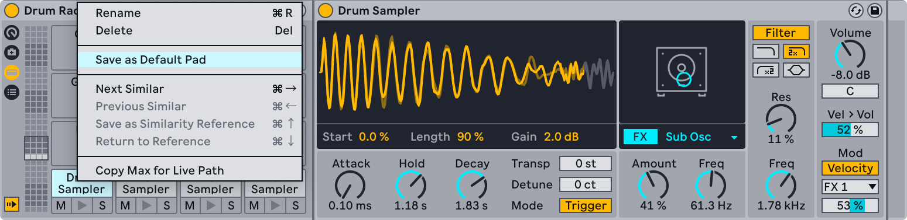
This means that each time a sample is added to an empty drum pad, an instance of Drum Sampler is automatically loaded.
30.5 Electric
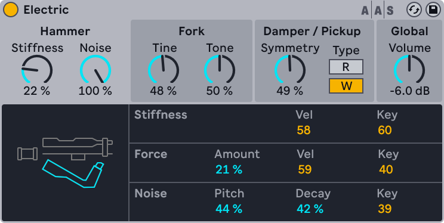
Electric is a software electric piano developed in collaboration with Applied Acoustics Systems. It is based on the classic instruments of the seventies; each component has been modeled using cutting edge physical modeling technology to provide realistic and lively sounds.
Physical modeling uses the laws of physics to reproduce the behavior of an object. In other words, Electric solves, in real time, mathematical equations describing how its different components function. No sampling or wavetables are used in Electric; the sound is calculated in real time by the CPU according to the values of each parameter. Electric is more than a simple recreation of vintage instruments; its parameters can be tweaked to values not possible with the real instruments to get some truly amazing new sounds that still retain a warm acoustic quality.
30.5.1 Architecture and Interface
The mechanism of the electric piano is actually quite simple. A note played on the keyboard activates a hammer that hits a fork. The sound of that fork is then amplified by a magnetic coil pickup and sent to the output, very much like an electric guitar. The fork is made of two parts, called the tine bar and tone bar. The tine bar is where the hammer hits the fork while the tone bar is a tuned metal resonator, sized appropriately to produce the correct pitch. Once the fork is activated, it will continue to resonate on its own for a long time. But releasing the key applies a damper to the fork, which mutes it more quickly.
The Electric interface is divided into four main sections: Hammer, Fork, Damper/Pickup, which contain parameters pertaining to the instrument’s tone and sound; and the Global section which contains parameters that affect overall behavior and performance, such as pitch bend and polyphony.
You can click on the individual sections to reveal all of their associated parameters, or you can click on the Hammer, Fork, or Damper/Pickup icons to toggle between those respective sections.
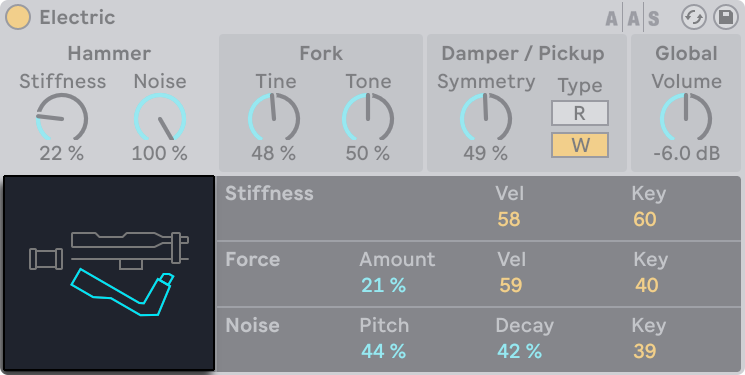
30.5.2 Hammer Section
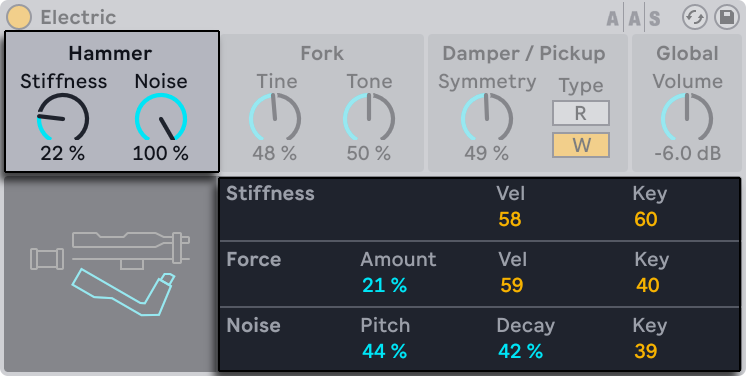
The Hammer section contains the parameters related to the physical properties of the hammer itself, as well as how it’s affected by your playing.
The Stiffness knob adjusts the hardness of the hammer’s striking area. Higher values simulate a harder surface, which results in a brighter sound. Lower values mean a softer surface and a more mellow sound. Stiffness can also be modified by velocity and note pitch via the Vel and Key sliders in the bottom half of the display.
The Noise knob adjusts the amount of impact noise caused by the hammer striking the fork. In the Noise section in the bottom half of the display, the Pitch slider sets the center frequency of the noise pitch, while the Decay slider adjusts how long it takes for the noise to fade to silence. The Key slider controls how much the noise volume is determined by note pitch.
The Force section adjusts the intensity of the hammer’s impact on the fork. Low Amount values simulate a soft impact while high values result in a hard impact. Force can also be modified by velocity and note pitch, via the Vel and Key sliders.
30.5.3 Fork Section
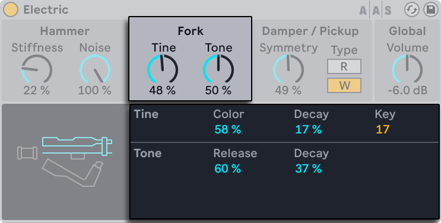
The Fork section contains knobs for both Tine and Tone parameters, which are the heart of Electric’s sound generating mechanism.
Tine controls the portion of the fork that is directly struck by the hammer.
The Color slider controls the relative amplitude of high and low partials in the tine’s spectrum. Low values result in lower harmonics, while higher values result in higher harmonics.
The Decay knob adjusts how long it takes the tine’s sound to fade out while a note is held. The volume level of the tine can be modulated by note pitch via the Key slider.
Tone controls the secondary resonance of the fork.
The Release slider applies to both Tine and Tone, and controls the decay time of the fork’s sound after a key is released. The Decay parameter works in the same way as in the Tine subsection.
30.5.4 Damper/Pickup Section
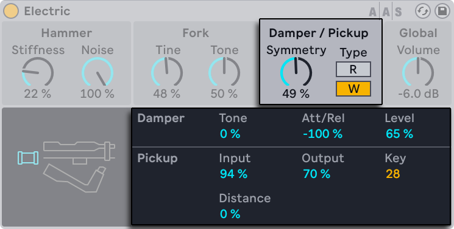
30.5.4.1 Pickup Parameters
In Electric, the Pickup simulates the behavior of the magnetic coil pickup that amplifies the sound of the resonating fork.
The Symmetry knob and Distance slider adjust the physical location of the pickup in relation to the tine. Symmetry simulates the vertical position of the pickup. At 50%, the pickup is directly in front of the tine, which results in a brighter sound. Lower amounts move the pickup below the tine, while higher amounts move it above the tine. Distance controls how far the pickup is from the tine. Higher amounts increase the distance, while lower amounts move the pickup closer. Note that the sound becomes more overdriven as the pickup approaches the tine.
The Type R and W buttons switch between two different types of pickups. In the R position, Electric simulates electro-dynamic pickups, while W is based on an electro-static model.
The Input slider is used to adjust the amount of the fork’s signal that is fed to the pickup, which in turn affects the amount of distortion applied to the overall signal. The Output slider controls the amount of signal output by the pickup section. Different combinations of these two parameters can yield very different results. For example, a low amount of input with a high amount of output will produce a cleaner sound than a high input with a low output. The output level can be further modulated by note pitch via the Key slider.
30.5.4.2 Damper Parameters
The metal forks in an electric piano are designed to sustain for a long time when a key is held. The mechanism that regulates this sustain is called the damper. When a key is pressed, that note’s damper is moved away from its fork. When the key is released, the damper is applied to the fork again to stop it from vibrating. But the dampers themselves make a small amount of sound, both when they are applied and when they are released. The Damper parameters simulate this characteristic noise.
The Tone slider adjusts the stiffness of the dampers. Lower values simulate soft dampers, which produces a mellower sound. Higher values increase the hardness of the dampers, producing a brighter sound. The overall amount of damper noise is adjusted with the Level slider.
The Att/Rel slider adjusts whether or not damper noise is present when the dampers are applied to the fork or when they are released. At -100, damper noise will only be heard during the note’s attack phase. At 100, the noise is present only during the release phase. In the center, an equal amount of noise will be present during both attack and release.
30.5.5 Global Section
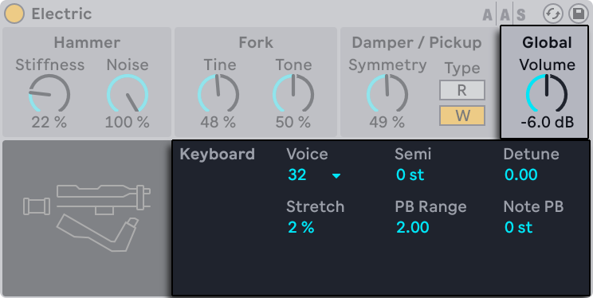
The Global section contains the parameters that relate to the overall behavior and performance of Electric.
The Volume knob sets Electric’s overall output level.
The Voices chooser sets the available polyphony. Since each voice that’s used requires additional CPU, you may need to experiment with this setting to find a good balance between playability and performance.
The Semi and Detune sliders function as coarse and fine tuners. Semi transposes the entire instrument up or down in semitone increments, while the Detune slider adjusts in increments of one cent (up to a maximum of 50 cents up or down).
Stretch simulates a technique known as stretch tuning, which is a common modification made to both electric and acoustic pianos and is an intrinsic part of their characteristic sound. At 0%, Electric will play in equal temperament, which means that two notes are an octave apart when the upper note’s fundamental pitch is exactly twice the lower note’s. But because the actual resonance behavior of a vibrating tine or string differs from the theoretical model, equal temperament tends to sound “wrong“ on pianos. Stretch tuning attempts to correct this by sharpening the pitch of upper notes while flattening the pitch of lower ones. The result is a more brilliant sound. Negative values simulate “negative“ stretch tuning; upper notes become flatter while lower notes become sharper.
Pitch Bend sets the range in semitones of global pitch bend modulation, while Note PB sets the MPE per-note pitch bend range in semitones.
30.6 External Instrument
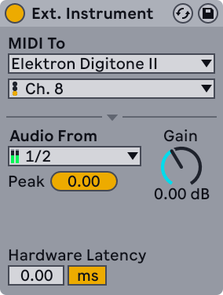
The External Instrument device is not an instrument itself, but rather a routing utility that allows you to easily integrate external (hardware) synthesizers and multitimbral plug-ins into your projects. It sends MIDI out and returns audio.
The two MIDI To choosers select the output to which the device will send MIDI data. The top chooser selects either a physical MIDI port, or a multitimbral plug-in. If you select a MIDI port (for use with an external synthesizer), the second chooser’s options will be MIDI channel numbers.
If another track in your Set contains a multitimbral plug-in, you can select this track in the top chooser. In this case, the second chooser allows you to select a specific MIDI channel in the plug-in.
The Audio From chooser provides options for returning the audio from the hardware synth or plug-in device. If you’re routing to a hardware synth, use this chooser to select the ports on your audio interface that are connected to the output of your synth. The available choices you’ll have will depend on the settings in the Audio Settings.
If you’re routing to a multitimbral plug-in on another track in your Live Set, the Audio From chooser will list the auxiliary outputs in the plug-in. Note that the main outputs will be heard on the track that contains the instrument.
The Gain knob adjusts the audio level coming back from the sound source. This level should be set carefully to avoid clipping.
Since external devices can introduce latency that Live cannot automatically detect, you can manually compensate for any delays by adjusting the Hardware Latency slider. The button next to this slider allows you to set your latency compensation amount in either milliseconds or samples. If your external device connects to Live via a digital connection, you will want to adjust your latency settings in samples, which ensures that the number of samples you specify will be retained even when changing the sample rate. If your external device connects to Live via an analog connection, you will want to adjust your latency settings in milliseconds, which ensures that the amount of time you specify will be retained when changing the sample rate. Note that adjusting in samples gives you finer control, so even in cases when you’re working with analog devices, you may want to “fine tune“ your latency in samples in order to achieve the lowest possible latency. In this case, be sure to switch back to milliseconds before changing your sample rate. Any latency introduced by devices within Live will be compensated for automatically, so the slider will be disabled when using the External Instrument Device to route internally.
Note: If the Delay Compensation option is unchecked in the Options menu, the Hardware Latency slider is disabled.
For more detailed information about routing scenarios with the External Instrument device, please see the Routing and I/O chapter.
30.7 Impulse
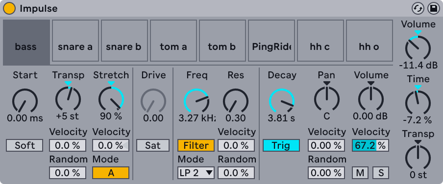
Impulse is a drum sampler with complex modulation capabilities. The eight drum samples loaded into Impulse’s sample slots can be time-stretched, filtered and processed by envelope, saturation, pan and volume components, nearly all of which are subject to random and velocity-based modulation.
30.7.1 Sample Slots
Drag and drop samples into any of Impulse’s sample slots from the browser or the Session and Arrangement Views. Alternatively, each sample slot features a Hot-Swap button for hot-swapping samples. Loaded samples can be deleted using the Backspace (Win) or Delete (Mac) key.
Imported samples are automatically mapped onto your MIDI keyboard, providing that it is plugged in and acknowledged by Live. C3 on the keyboard will trigger the leftmost sample, and the other samples will follow suit in the octave from C3 to C4. Impulse’s eight slots will appear labeled in the MIDI Editor’s key tracks when the Fold button is active, even if the given key track is void of MIDI notes. Mapping can be transposed from the default by applying a Pitch device, or it can be rearranged by applying a Scale device.
Each of the eight samples has a proprietary set of parameters, located in the area below the sample slots and visible when the sample is clicked. Adjustments to sample settings are only captured once you hit a new note — they do not affect currently playing notes. Note that this behavior also defines how Impulse reacts to parameter changes from clip envelopes or automation, which are applied once a new note starts. If you want to achieve continuous changes as a note plays, you may want to use the Simpler instrument.
Slot 8’s parameters also include a Link button, located in the lower left corner, which links slot 8 with slot 7. Linking the two slots allows slot 7’s activation to stop slot 8’s playback, and vice versa. This was designed with a specific situation in mind (but can, of course, be used for other purposes): Replicating the way that closed hi-hats will silence open hi-hats.
Each slot can be played, soloed, muted or hot-swapped using controls that appear when the mouse hovers over it.
30.7.2 Start, Transpose and Stretch
The Start control defines where Impulse begins playing a sample, and can be set up to 100 ms later than the actual sample beginning. The Transp (Transpose) control adjusts the transposition of the sample by +/- 48 semitones, and can be modulated by incoming note velocity or a random value, as set in the appropriate fields.
The Stretch control has values from -100 to 100 percent. Negative values will shorten the sample, and positive values will stretch it. Two different stretching algorithms are available: Mode A is ideal for low sounds, such as toms or bass, while Mode B is better for high sounds, such as cymbals. The Stretch value can also be modulated by MIDI note velocity.
30.7.3 Filter
The Filter section offers a broad range of filter types, each of which can impart different sonic characteristics onto the sample by removing certain frequencies. The Frequency control defines where in the harmonic spectrum the filter is applied; the Resonance control boosts frequencies near that point. Filter Frequency can be modulated by either a random value or by MIDI note velocity.
30.7.4 Saturator and Envelope
The Saturator gives the sample a fatter, rounder, more analog sound, and can be switched on and off as desired. The Drive control boosts the signal and adds distortion. Coincidentally, this makes most signals much louder, and should usually be compensated for by lowering the sample’s volume control. Extreme Drive settings on low-pitched sounds will produce the typical, overdriven analog synth drum sounds.
The envelope can be adjusted using the Decay control, which can be set to a maximum of 10.0 seconds. Impulse has two decay modes: Trigger Mode allows the sample to decay with the note; Gate Mode forces the envelope to wait for a Note Off message before beginning the decay. This mode is useful in situations where you need variable decay lengths, as is the case with hi-hat cymbal sounds.
30.7.5 Pan and Volume
Each sample has Volume and Pan controls that adjust amplitude and stereo positioning, respectively. Both controls can be modulated: Pan by velocity and a random value, and Volume by velocity only.
30.7.6 Global Controls
The parameters located to the right of the sample slots are global controls that apply to all samples within Impulse’s domain. Volume adjusts the overall level of the instrument, and Transp adjusts the transposition of all samples. The Time control governs the time-stretching and decay of all samples, allowing you to morph between short and stretched drum sounds.
30.7.7 Individual Outputs
When a new instance of Impulse is dragged into a track, its signal will be mixed with those of the other instruments and effects feeding the audio chain of the track. It can oftentimes make more sense to isolate the instrument or one of its individual drum samples, and send this signal to a separate track. Please see the Routing and I/O chapter to learn how to accomplish this for Impulse’s overall signal or for Impulse’s individual sample slots.
30.8 Meld
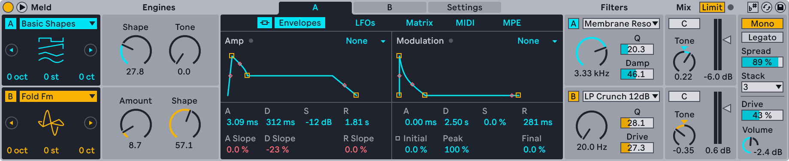
Meld is a versatile synthesizer that combines two independent macro oscillator engines into one device. While it can quickly dial in classic analog-style patches, Meld’s character shines through in the array of synthesis and filtering techniques it lets you layer and experiment with. Each of the device’s engines has a dedicated filter, envelopes, LFOs, and a MIDI and MPE-enabled Modulation Matrix, as well as two oscillator-dependent macro knobs that control parameters ranging from simple overtone modulation to more unusual features like noise loop fragmentation, chiptone pulsewidth, and raindrop generation density. Meld is designed to produce expressive, unfamiliar sounds guided by musical intention rather than technical detail.
30.8.1 General Overview
Meld’s dual-layer architecture can use up to two polyphonic synth engines at once. Its interface is divided into four main sections: the engines, the modulation section, the filters, and the global mix controls. This modular-inspired configuration makes it easy to add texture and movement to your sounds, but also to produce and capture musical surprises. To get familiar with some of Meld’s possibilities, try combining different waveform types and playing with each engine’s modulation macros. For more control, try mapping an engine’s parameters to its Modulation Matrix, or automating the device’s macro knobs using an LFO device. The more you experiment with the interaction between Meld’s two layers, the more you’ll make the device your own.
Meld can be expanded using the Toggle Expanded View button in the device header. When in expanded view, all possible modulation targets and sources will be shown. The A and B toggles can be used to switch between each engine. Parameter modulation values can be copied from one engine to another using the Copy to A and Copy to B buttons. Clicking the X button will erase all active modulation values.
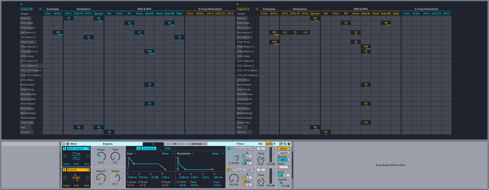
30.8.2 Oscillators
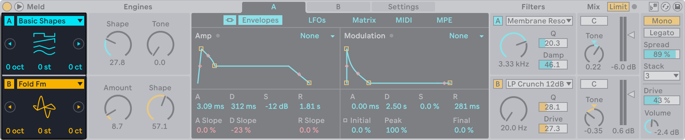
Meld’s two engines can be turned on or off independently via switches in the Engines section. Deactivating one of Meld’s engines will deactivate its associated filter in the device’s Filters section. A filter can be turned on or off without affecting the activation of the engine it’s linked to.
Each of Meld’s engines has three pitch controls (Octaves, Semitones, and Cents). When the Use Current Scale toggle is activated, the semitone indicator (st) switches to scale degrees (sd). You can use these pitch controls to add harmonic depth to your sound, for example by transposing an engine up an octave or a fifth, or by subtly detuning it in cents.
Engines A and B each have a selection of twenty-four oscillator types to choose from, including six scale aware oscillators marked with a (♭♯). These range from simple sine wave generation oscillators to layered wave swarms, complex frequency modulation, noise looping, and ambient sound generation algorithms. Oscillator Types can be selected from an engine’s drop-down menu or cycled through using the arrows in the Oscillator Types displays.
30.8.3 Oscillator Macros
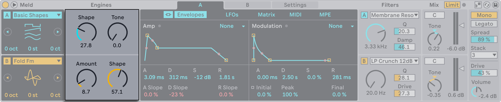
Engines A and B each have two dedicated macro knobs, which change along with the oscillator type selected. All four of the oscillator macro knobs can be assigned to a MIDI controller for live performance or to the LFO device for automated modulation. They can also be modulated internally, using the Modulation Matrix.
The Basic Shapes oscillator has two macro knobs, Shape and Tone. Shape morphs the oscillator’s waveform between a sine, triangle, saw, and square wave. Tone changes the pulse width of the source wave.
The Dual Basic Shapes oscillator has two macro knobs, Shape and Detune. Shape morphs the oscillator’s waveform through sine, triangle, saw, and square wave shapes. Detune adds a copy of this initial wave and detunes it.
The Noisy Shapes oscillator has two macro knobs, Shape and Rough. Shape morphs the oscillator’s waveform through sine, triangle, saw, and square wave shapes. Rough adds noise distortion to this source wave.
The Square Sync oscillator has two macro knobs, Freq 1 and Freq 2. These two controls change the frequencies of the oscillator’s two synced square waves.
The Square 5th oscillator has two macro knobs, 5th Amt and P Width. 5th Amt morphs the oscillator’s initial square wave to a second square wave that is a perfect fifth above it. P Width changes the pulse width of the square wave being generated.
The Sub oscillator has two macro knobs, Tone and Aux. Tone morphs the oscillator’s initial sine wave into a square wave. Aux adds a lower subharmonic sine wave to the initial sine wave being generated.
The Swarm Sine, Swarm Triangle, Swarm Saw, and Swarm Square oscillators have two macro knobs, Motion and Spacing. Motion adds modulation to the wave swarm being produced. Spacing fades between increasingly complex chords as the amount applied is increased.
The Harmonic Fm oscillator has two macro knobs, Amount and Ratio, which change the modulation amount and ratio in the frequency modulation algorithm.
The Fold Fm oscillator has two macro knobs, Amount and Shape. Amount changes the modulation amount in the frequency modulation algorithm and Shape changes the shape of its carrier wave.
The Squelch oscillator has two macro knobs, Amount and Feedback. Amount changes the modulation depth of the frequency modulation algorithm, and Feedback changes the amount of signal being fed back into the device.
The Simple Fm oscillator has two macro knobs, Amount and Ratio, which change the modulation amount and the depth in the frequency modulation algorithm, respectively.
The Chip oscillator has two macro knobs, Tone and Rate. Tone changes the oscillator’s pitch and pulse width. Rate changes the speed of the chip interval being used.
The Shepard’s Pi oscillator has two macro knobs, Rate and Width. Rate changes the speed and direction of the oscillator. Values 0.0 through 49.9 produce falling movements, and values 50.1 through 100.0 produce ascending movements. At 50.0, no movement is produced. Width changes the number of octaves being used by the oscillator.
The Tarp oscillator has two macro knobs, Decay and Tone, which change the algorithm’s decay amount and tonality.
The Extratone oscillator has two macro knobs, Pitch and Env Amount, which change the oscillator’s pitch and envelope behavior.
The Noise Loop oscillator has two macro knobs, Rate and Fade. Rate sets the rate at which fragments of different noise loops occur. At higher values, the oscillator produces noise. Fade dials in the grain or roughness of the noise.
The Filtered Noise oscillator has two macro knobs, Freq and Width, which change the oscillator’s filter frequency and width.
The Bitgrunge oscillator has two macro knobs, Freq and Mult. Freq adjusts the frequency of the square wave being produced. Mult adjusts the number of sub-octaves being generated in relation to this initial square wave. At its maximum setting, no sub-octaves are generated. At its minimum, a large number of sub-octaves is generated.
The Crackle oscillator has two macro knobs, Density and Intensity. Density sets the average rate of crackles being produced. Intensity adjusts the distribution of loudness and brightness within the crackles.
The Rain oscillator has two macro knobs, Tone and Rate. Tone sets the resonance of the raindrop and wind sounds being generated. This makes the oscillator tonal and dependent on the notes you play. Rate sets the density of raindrop sounds being generated.
The Bubble oscillator has two macro knobs, Density and Spread. Density sets the rate of bubble generation and Spread sets the randomness of the size of the bubbles being produced.
The Chord oscillator layers four sawtooth oscillators to create a variety of chords. It has two macro knobs, Shape and Inversion. Shape defines the intervals between the notes in the chord, while Inversion rearranges the order of the notes. When the Use Current Scale toggle is enabled in the device title bar, generated chords use the notes of the set scale. If no scale is set, a major scale is used with the incoming MIDI note as the root.
30.8.4 Envelopes Tab
Each of Meld’s envelopes has Attack, Decay, Sustain, and Release controls. These can be adjusted by sliding the numerical values at the bottom of the Envelope section up or down, entering a value using your computer keyboard, or clicking and dragging the breakpoints on the envelope’s graphical display.
Attack, Decay, and Release Slope controls are marked in red, and can be adjusted by sliding the numerical values at the bottom of the section, entering a value using your computer keyboard, or clicking and dragging the diamonds between the breakpoints in the Envelope section’s graphical displays.
Amplitude and Modulation envelopes have three Envelope Loop Modes. In Trigger mode, all segments of the envelope play once a note is received, while the selected Sustain level is ignored. In Loop mode, the entire envelope is looped without holding the selected Sustain level. In AD Loop mode, only the Attack and Decay portions of the envelope are looped.
The Modulation envelope has one additional set of parameters: the Initial, Peak, and Final levels. These parameters set the position of the envelope when it is triggered and released, which offers more flexibility for modulation.
Activating the Link Envelopes button links each engine’s Amplitude and Modulation envelopes. This is useful for having Meld’s two engines function as a single instrument.
30.8.5 LFOs Tab
Each of Meld’s engines has two dedicated LFOs. The rates of LFO 1 and LFO 2 can be set in Hertz or tempo-synced, and a Phase Offset slider offsets each LFO’s phase. When Retrigger is enabled, the LFO restarts at the position set by the Phase Offset slider.
LFO 1’s waveform can be selected from the LFO 1 Type drop-down menu, which provides six waveform types to choose from: Basic Shapes, Ramp, Wander, Alternate, Euclid, and Pulsate. These waveforms can be further shaped using the LFO’s Rate knob and the two macro knobs adjacent to it, which change depending on the waveform type selected.
LFO 1 can also be modulated in the LFO 1 FX panel. The FX1 and FX2 drop-down menus each have eighteen effect types that can be serially applied to LFO 1. The degree of the effect applied can be changed via its corresponding macro knob. Note that LFO 1 and LFO1 FX can be used as independent modulation sources in Meld’s Modulation Matrix.
LFO 2 provides six classic waveform types to choose from: Sine, Tri, Saw Up, Saw Down, Rectangle, Random S&H. LFO 2 can be used as a third independent modulation source in Meld’s Modulation Matrix.
30.8.6 Matrix Tab
Meld’s Modulation Matrix lets you assign modulation sources to modulation targets within the device. For example, Engine A’s LFO 1 could be used to modulate its Volume, or Engine B’s Modulation Envelope could be used to modulate its Filter Frequency.
Modulation sources are listed horizontally and modulation targets are listed vertically. Click and drag a cell up or down to apply modulation between parameters. Negative values will make envelopes and LFOs faster and positive values will make them slower. Note that some parameters have additive modulation applied to them, while others have multiplicative modulation applied to them.
Click on a parameter to add it to the Modulation Matrix. Parameters are added to the Modulation Matrix of the engine currently selected with the Display Selector Tab. If a parameter isn’t being modulated, it will disappear from the Modulation Matrix when another parameter is clicked.
30.8.7 MIDI and MPE Tabs
Meld’s MIDI and MPE tabs let you use MIDI and MPE functionality as modulation sources, which can transform Meld into a dynamic performance tool.
When Velocity is set as a modulation source, Meld will use an incoming MIDI note’s velocity value to modulate its modulation target for the duration of that note.
When Pitch is set as a modulation source, Meld will use an incoming MIDI note’s pitch value to modulate its modulation target for the duration of that note.
When Random is set as a modulation source, Meld will modulate its modulation target by a random value, which is calculated each time a note is triggered.
Pitch Bend, Press, and Modulation Wheel are hardware controls found on many MIDI controller devices. Note Pitch Bend, Slide, and Press are hardware controls found on many MPE controller devices. If you don’t have a MIDI or MPE controller, you can still modulate these parameters using clip envelopes.
30.8.8 Settings Tab
Meld’s Settings tab has three global settings that can be applied per engine: Osc Key Tracking, Scale Awareness, and Glide.
The Osc Key Tracking switch activates or deactivates oscillator key tracking. When activated, an oscillator will play the pitch of whatever incoming MIDI note it receives. When deactivated, an oscillator will play a constant pitch of C3 for all incoming MIDI notes, or the root of a scale in the C3 octave if Scale Mode has been activated. This is useful for performing drones or percussive sounds, for example.
Enabling the Phase Reset switch resets the phase of the oscillator to a consistent value with each new note. The Phase Spread switch also becomes accessible when Phase Reset is enabled. When Phase Spread is activated, the oscillator’s start phase is spread based on the Spread modulation source in the Modulation Matrix. When Phase Spread is deactivated, the start phase is set to zero.
Two switches can be activated in the Scale Awareness section: Oscillator Scale Awareness and Filter Scale Awareness.
When Oscillator Scale Awareness is activated, pitches controlled by scale-aware oscillator types will also be in scale. The following oscillator types, marked with a (♭♯), are scale aware: Dual Basic Shapes, Swarm Sine, Swarm Triangle, Swarm Saw, Swarm Square, and Chip.
When Filter Scale Awareness is enabled, the resonating frequencies of scale-aware filter types will also be in scale. The following filter types, marked with a (♭♯), are scale aware: Plate Resonator and Membrane Resonator.
The Glide section has two glide modes, Portamento (Porta) and Glissando (Gliss), as well as a Glide Time control.
The Glide Time control sets the time that overlapping notes take to slide into the next incoming pitch. Glide is active in both Mono and Poly modes.
When Portamento is activated and a note is played while another is held down, the first note’s pitch will slide progressively into the second note’s pitch. When Glissando is activated and a note is played while another is held down, the first note’s pitch will ascend or descend into the second note’s pitch in discrete steps. Glissando produces these steps in scale degrees if scale awareness is enabled. Note that portamento and glissando effects are only audible when Glide Time is set to a value above zero.
30.8.9 Filters
Meld’s two engines each have a dedicated filter, A and B, which can be turned on or off independently via switches in the Filters section.
The Filter Frequency knob sets the center of the filter’s cutoff frequency.
The Filter Type drop-down menu lets you choose from seventeen different filter types. Each filter has two macro knobs, which change with the filter type selected.
The most common filter macro knobs in Meld are Q and Drive. Q adjusts the emphasis of the frequencies around a filter’s cutoff frequency. Drive applies saturation to the input signal before it passes through the filter, which is useful for producing distortion.
The SVF 12dB and 24dB filters are state variable filters. The L-B-H-N macro control morphs through this filter type’s four possible configurations: low-pass, band-pass, high-pass, and notch.
The MS2 filters are modeled on a Sallen-Key design from a famous semi-modular Japanese monosynth, which applies soft clipping to limit resonance. They are available in low-pass and high-pass configurations in Meld.
The OSR filter is modeled on a state variable filter from a rare British monosynth whose resonance is limited by a unique hard-clipping diode. It is available in a band-pass configuration in Meld.
LP Crunch 12dB is a dual-mode low-pass filter that feeds the distortion it produces back into itself.
The LP Switched Res filter is modeled on low-pass filters whose resistors are replaced with fast switches to produce downsampling artifacts. The Lofi macro knob changes the frequency of the filter’s resistors. If set to a high value, the filter produces a more crushed sound. If set to a low value, it produces a smoother sound.
Filther is modeled on a low-pass filter that applies distortion to a signal’s input and output. It uses a hard diode clipper on the input signal and soft saturation on the output signal.
The Eq Peak and Eq Notch filters are peak and notch filters that apply gain and width to an input signal. The Eq Peak filter’s Boost macro knob boosts frequencies around the filter’s cutoff point. The Eq Notch filter’s Cut macro knob cuts frequencies around the filter’s cutoff point.
The Phaser filter is a six-stage delayless inverted feedback phaser with variable feedback and notch spacing. The Phaser filter’s Feedback macro knob sets the amount of output being fed back into the filter’s input. The Spread macro knob adjusts the spacing between the filter’s notches in the frequency spectrum.
The Redux filter is a resampler and bitcrusher with a variable sample rate, quantization, and knob over the amount of resampling artifacts it produces. The Crush macro knob sets the bit depth of the filter’s output. The Lofi macro knob adjusts the mix between a filtered, sample rate-reduced version of the signal and the unfiltered, downsampled artifacts Redux has produced.
The Vowel filter is a formant filter that mimics the characteristics of vowels being pronounced, with various configurations that can be morphed through using the filter’s Morph macro knob.
The Comb + and Comb - filters are feedforward and feedback filters. The Feedback macro knob adjusts the amount of feedforward or feedback being sent from the filter’s delayed output back into its input. The Damp knob applies a low-pass filter to the filter’s output, to damp high frequencies.
The Plate Resonator filter applies a set of modal resonators tuned to the first 32 modes of a rectangular plate to the input signal. The plate’s size, resonance, and dimension ratio can be modified using its macro knobs. When Filter Scale Awareness is enabled, this filter’s resonating frequencies will be in scale.
The Membrane Resonator filter applies a set of modal resonators tuned to the first 32 modes of a circular membrane to the input signal. The membrane’s size, resonance, and high frequency damping can be modified using its macro knobs. When Filter Scale Awareness is enabled, this filter’s resonating frequencies will be in scale.
30.8.10 Mix Section
Each of Meld’s engines has Volume and Pan controls, as well as a dedicated Tone Filter that can be found in Meld’s Mix section. The Volume control adjusts the overall output of an engine, and the Pan control adjusts its position in the stereo field.
Meld’s Tone Filter control functions like a combined high and low-pass filter. When set to positive values, it reduces an engine’s low frequencies. When set to negative values, it reduces an engine’s high frequencies.
Meld’s built-in limiter can be activated by clicking the Limit button. When activated, the limiter is applied per voice, after both engines have been mixed and the global Drive setting has been applied. This is helpful for controlling Meld’s overall output level when both engines are in use.
30.8.11 Global Controls
Meld’s global controls affect the overall sound and behavior of the instrument.
Meld’s Mono/Poly switch toggles between a monophonic and polyphonic output.
When Mono is activated, the Legato switch can be toggled on or off. When Legato is activated, if a new note is played while another is held, the new note will use the original note’s envelope from its current position. When Legato is deactivated, each new note played will trigger its own envelope from the beginning.
When Poly is activated, a drop-down menu lets you set the number of voices usable by Meld, from 2 to 12.
The Spread control adjusts the range of the Spread modulation source in Meld’s Modulation Matrix. When a voice number is set in the Stacked Voices control, Spread produces an offset between each stacked voice. When Stacked Voices is set to Off, Spread produces a range of different values for each note in a held chord. Note that Spread will have no effect if not applied to a modulation target in the Modulation Matrix.
The Stacked Voices drop-down menu adjusts the number of stacked voices for a single note. Stacked voices duplicate both engines for each note (including filters, modulation, and mixer settings), and can create a heavy CPU load.
The Mixer Drive control sets the amount of saturation applied to Meld’s output. Drive is applied per voice, after mixer settings, and before the limiter.
The Volume control adjusts Meld’s output volume.
The Use Current Scale button makes Meld follow Live’s Scale Mode. When activated, Meld’s oscillators follow Live’s current scale, with all transpositions (including the Pitch Quant modulation target in the Modulation Matrix) occurring in scale degrees rather than semitones.
30.9 Operator
Operator is an advanced and flexible synthesizer that combines the concept of “frequency modulation“ (FM) with classic subtractive and additive synthesis. It uses four multi-waveform oscillators that can modulate each other’s frequencies, creating very complex timbres from a limited number of objects. Operator includes a filter section, an LFO and global controls, as well as individual envelopes for the oscillators, filter, LFO and pitch.
30.9.1 General Overview
The interface of Operator consists of two parts: the display surrounded on either side by the shell. The shell offers the most important parameters in a single view and is divided into eight sections. On the left side, you will find four oscillator sections, and on the right side from top to bottom, the LFO, the filter section, the pitch section and the global parameters. If you change one of the shell parameters, the display in the center will automatically show the details of the relevant section. When creating your own sounds, for example, you can conveniently access the level and frequency of all oscillators at once via the shell, and then adjust each individual oscillator’s envelope, waveform and other parameters in its display.
Operator can be folded with the triangular button at its upper left. This is convenient if you do not need to access the display details.
Each of Operator’s oscillators can either output its signal directly or use its signal to modulate another oscillator. Operator offers eleven predefined algorithms that determine how the oscillators are connected. An algorithm is chosen by clicking on one of the structure icons in the global display, which will appear if the bottom right (global) section of the shell is selected. Signals will flow from top to bottom between the oscillators shown in an algorithm icon. The algorithm selector can be mapped to a MIDI controller, automated, or modulated in real time, just like any other parameter.
Typically, FM synthesis makes use of pure sine waves, creating more complex waveforms via modulation. However, in order to simplify sound design and to create a wider range of possible sounds, we designed Operator to produce a variety of other waveforms, including two types of noise. You can also draw your own waveforms via a partial editor. The instrument is made complete with an LFO, a pitch envelope and a filter section. Note that lots of “classic“ FM synthesizers create fantastic sounds without using filters at all, so we suggest exploring the possibilities of FM without the filter at first, and adding it later if necessary.
Operator will keep you busy if you want to dive deep into sound design! If you want to break the universe apart completely and reassemble it, you should also try modulating Operator’s controls with clip envelopes or track automation.
30.9.2 Oscillator Section
30.9.2.1 Built-in Waveforms
The oscillators come with a built-in collection of basic waveform types — sine, sawtooth, square, triangle and noise — which are selected from the Wave chooser in the individual oscillator displays. The first of these waveforms is a pure, mathematical sine wave, which is usually the first choice for many FM timbres. We also added “Sine 4 Bit“ and “Sine 8 Bit“ to provide the retro sound adored by C64 fans, and “Saw D“ and “Square D“ digital waveforms, which are especially good for digital bass sounds. The square, triangle and sawtooth waveforms are resynthesized approximations of the ideal shape. The numbers included in the displayed name (e.g., “Square 6“) define how many harmonics are used for the resynthesis. Lower numbers sound mellower and are less likely to create aliasing when used on high pitches. There are also two built-in noise waveforms. The first, “Noise Looped,“ is a looping sample of noise. For truly random noise, choose “Noise White.“
30.9.2.2 User Waveforms
The “User“ entry in the Wave chooser allows you to create your own waveforms by drawing the amplitudes of the oscillator’s harmonics. You can also select one of the built-in waveforms and then edit it in the same way. The small display next to the Wave chooser gives a real-time overview of your waveform.
When your mouse is over the Oscillator display area, the cursor will change to a pencil. Drawing in the display area then raises or lowers the amplitudes of the harmonics. As you adjust the amplitudes, the Status Bar will show the number of the harmonic you’re adjusting as well as its amplitude. Holding Shift and dragging will constrain horizontal mouse movement, allowing you to adjust the amplitude of only one harmonic at a time.
You can switch between editing the first 16, 32 or 64 harmonics via the switches to the right of the display. Higher harmonics can be generated by repeating the drawn partials with a gradual fadeout, based on the settings in the Repeat chooser. Low Repeat values result in a brighter sound, while higher values result in more high-end roll-off and a more prominent fundamental. With Repeat off, partials above the 16th, 32nd or 64th harmonic are truncated.
The context menu in the harmonics display offers options for editing only the even or odd harmonics. This is set to “All“ by default. The context menu also offers an option to toggle Normalize on or off. When enabled, the oscillator’s overall output level is maintained as you draw additional harmonics. When disabled, additional harmonics add additional level. Note that the volume can become extremely loud if Normalize is off.
You can export your waveform in .ams format to the Samples/Waveforms folder in your User Library via an option in the context menu. Ams files can be imported back into Operator by dragging them from the browser onto one of the oscillator’s display areas. Ams files can also be loaded into Simpler or Sampler.
Both the built-in and user waveforms can be copied and pasted from one oscillator to another using the Osc Preview’s context menu.
30.9.2.3 More Oscillator Parameters
The frequency of an oscillator can be adjusted in the shell with its Coarse and Fine controls. An oscillator’s frequency usually follows that of played notes, but for some sounds it might be useful to set one or more oscillators to fixed frequencies. This can be done for each individual oscillator by activating the Fixed option. This allows the creation of sounds in which only the timbre will vary when different notes are played, but the tuning will stay the same. Fixed Mode would be useful, for example, in creating live drum sounds. Fixed Mode also allows producing very low frequencies down to 0.1 Hz. Note that when Fixed Mode is active, the frequency of the oscillator is controlled in the shell with the Frequency (Freq) and Multiplier (Multi) controls.
Operator includes a special Osc < Vel control for each oscillator that allows altering frequency as a function of velocity. This feature can be very useful when working with sequenced sounds in which the velocity of each note can be adjusted carefully. Part of this functionality is the adjacent Q (Quantize) button. If this control is activated, the frequency will only move in whole numbers, just as if the Coarse control were being manually adjusted. If quantize is not activated, the frequency will be shifted in an unquantized manner, leading to detuned or inharmonic sounds (which very well could be exactly what you want…).
The amplitude of an oscillator depends on the Level setting of the oscillator in the shell and on its envelope, which is shown and edited when the Envelope display is visible. The envelopes can also be modified by note velocity and note pitch with the Vel and Key parameters available in the Envelope section of each oscillator’s display.
The phase of each oscillator can be adjusted using the Phase control in its display. With the R (Retrigger) button enabled, the waveform restarts at the same position in its phase each time a note is triggered. With R disabled, the oscillator is free-running.
As explained earlier oscillators can modulate each other when set up to do so with the global display’s algorithms. When an oscillator is modulating another oscillator, two main properties define the result: the amplitude of the modulating oscillator and the frequency ratio between both oscillators. Any oscillator that is not modulated by another oscillator can modulate itself, via the Feedback parameter in its display.
30.9.2.4 Aliasing
Aliasing distortion is a common side effect of all digital synthesis and is the result of the finite sample rate and precision of digital systems. It mostly occurs at high frequencies. FM synthesis is especially likely to produce this kind of effect, since one can easily create sounds with lots of high harmonics. This also means that more complex oscillator waveforms, such as “Saw 32,“ tend to be more sensitive to aliasing than pure sine waves. Aliasing is a two-fold beast: A bit of it can be exactly what is needed to create a cool sound, yet a bit too much can make the timbre unplayable, as the perception of pitch is lost when high notes suddenly fold back into arbitrary pitches. Operator minimizes aliasing by working in a high-quality Antialias mode. This is on by default for new patches, but can be turned off in the global section. The Tone parameter in the global section also allows for controlling aliasing. Its effect is sometimes similar to a low-pass filter, but this depends on the nature of the sound itself and cannot generally be predicted. If you want to familiarize yourself with the sound of aliasing, turn Tone up fully and play a few very high notes. You will most likely notice that some notes sound completely different from other notes. Now, turn Tone down and the effect will be reduced, but the sound will be less bright.
30.9.3 LFO Section
The LFO in Operator can practically be thought of as a fifth oscillator. It runs at audio rates, and it modulates the frequency of the other oscillators. It is possible to switch LFO modulation on or off for each individual oscillator (and the filter) using the Dest. A buttons in the LFO’s display. The intensity of the LFO’s modulation of these targets can be adjusted by the Dest. A slider. The LFO can also be turned off entirely if it is unused.
The Dest. B chooser allows the LFO to modulate an additional parameter. The intensity of this modulation is determined by the Dest. B slider.
The LFO offers a choice of classic LFO waveforms, sample and hold (S&H), and noise. Sample and hold uses random numbers chosen at the rate of the LFO, creating the random steps useful for typical retro-futuristic sci-fi sounds. The noise waveform is simply band-pass filtered noise.
Tip: FM synthesis can be used to create fantastic percussion sounds, and using the LFO with the noise waveform is the key to great hi-hats and snares.
The frequency of the LFO is determined by the LFO Rate control in the shell, as well as the low/high/sync setting of the adjacent LFO Range chooser. The frequency of the LFO can follow note pitch, be fixed or be set to something in between. This is defined by the Rate < Key parameter in the LFO’s display. With the R (Retrigger) button enabled, the LFO restarts at the same position in its phase each time a note is triggered. With R disabled, the LFO is free-running.
The overall intensity of the LFO is set by the LFO Amount control in the shell. This parameter scales both the Dest. A and B amounts and can be modulated by note velocity via the display’s Amt < Vel control. The LFO’s intensity is also affected by its envelope.
30.9.4 Envelopes
Operator has seven envelopes: one for each oscillator, a filter envelope, a pitch envelope and an envelope for the LFO. All envelopes feature some special looping modes. Additionally, the filter and pitch envelopes have adjustable slopes.
Each oscillator’s volume envelope is defined by six parameters: three rates and three levels. A rate is the time it takes to go from one level to the next. For instance, a typical pad sound starts with the initial level “-inf dB“ (which is silence), moves with an attack rate to its peak level, moves from there to the sustain level with a decay rate, and then finally, after Note Off occurs, back to “-inf dB“ at the release rate. Operator’s display provides a good overview of the actual shape of any particular envelope and lets you directly adjust the curve by clicking on a breakpoint and dragging. The breakpoints retain their selection after clicking, allowing them to be adjusted with the keyboard’s cursor keys, if desired.
Envelope shapes can be copied and pasted from one oscillator to another in Operator using the Envelope Display’s context menu.
As mentioned above, the filter and pitch envelopes also have adjustable slopes. Clicking on the diamonds between the breakpoints allows you to adjust the slope of the envelope segments. Positive slope values cause the envelope to move quickly at the beginning, then slower. Negative slope values cause the envelope to remain flat for longer, then move faster at the end. A slope of zero is linear; the envelope will move at the same rate throughout the segment.
With FM synthesis, it is possible to create spectacular, endless, permuting sounds; the key to doing this is looping envelopes. Loop Mode can be activated in the lower left corner of the display. If an envelope in Operator is in Loop Mode and reaches sustain level while the note is still being held, it will be retriggered. The rate for this movement is defined by the Loop Time parameter. Note that envelopes in Loop Mode can loop very quickly and can therefore be used to achieve effects that one would not normally expect from an envelope generator.
While Loop Mode is good for textures and experimental sounds, Operator also includes Beat and Sync Modes, which provide a simple way of creating rhythmical sounds. If set to Beat Mode, an envelope will restart after the beat time selected from the Repeat chooser. In Beat Mode, the repeat time is defined in fractions of song time, but notes are not quantized. If you play a note a bit out of sync, it will repeat perfectly but stay out of sync. In Sync Mode however, the first repetition is quantized to the nearest 16th note and, as a result, all following repetitions are synced to the song tempo. Note that Sync Mode only works if the song is playing, and otherwise it will behave like Beat Mode.
To avoid the audible clicks caused by restarting from its initial level, a looped envelope will restart from its actual level and move with the set attack rate to peak level.
There is also a mode called Trigger that is ideal for working with percussive sounds. In this mode, Note Off is ignored. This means that the length of time a key is held has no effect on the length of the sound.
The rates of all the envelopes in Operator can be scaled in unison by the Time control in the global section of the shell. Note that beat-time values in Beat and Sync Modes are not influenced by the global Time parameter. Envelope rates can be further modified by note pitch, as dictated by the Time < Key parameter in the global section’s display. The rate of an individual envelope can also be modified by velocity using the Time < Vel parameter. These modulations in conjunction with the loop feature can be used to create very, very complex things…
The pitch envelope can be turned on or off for each individual oscillator and for the LFO using the Destination A-D and LFO buttons in its display. The intensity of this envelope’s modulation of these targets can be adjusted by the Dest. A slider and the envelope can be turned off altogether via the switch in the pitch section of the shell.
Like the LFO, the pitch envelope can modulate an additional parameter as chosen by the Dest. B chooser. The intensity of this modulation is determined by the Amt. B slider and the main Pitch Env value.
The pitch and filter envelopes each have an additional parameter called End, which determines the level the envelope will move to after the key is released. The rate of this envelope segment is determined by the release time.
Tip: If the pitch envelope is only applied to the LFO and is looping, it can serve as another LFO, modulating the rate of the first. And, since the envelope of the LFO itself can loop, it can serve as a third LFO modulating the intensity of the first!
30.9.5 Filter Section
Operator’s filters can be very useful for modifying the sonically rich timbres created by the oscillators. And, since the oscillators also provide you with the classic waveforms of analog synthesizers, you can very easily build a subtractive synthesizer with them.
Operator offers a variety of filter types including low-pass, high-pass, band-pass, notch, and a special Morph filter. Each filter can be switched between 12 and 24 dB slopes as well as a selection of analog-modeled circuit behaviors developed in conjunction with Cytomic that emulate hardware filters found on some classic analog synthesizers.
The Clean circuit option is a high-quality, CPU-efficient design that is the same as the filters used in EQ Eight. This is available for all of the filter types.
The OSR circuit option is a state-variable type with resonance limited by a unique hard-clipping diode. This is modeled on the filters used in a somewhat rare British monosynth, and is available for all filter types.
The MS2 circuit option uses a Sallen-Key design and soft clipping to limit resonance. It is modeled on the filters used in a famous semi-modular Japanese monosynth and is available for the low-pass and high-pass filters.
The SMP circuit is a custom design not based on any particular hardware. It shares characteristics of both the MS2 and PRD circuits and is available for the low-pass and high-pass filters.
The PRD circuit uses a ladder design and has no explicit resonance limiting. It is modeled on the filters used in a legacy dual-oscillator monosynth from the United States and is available for the low-pass and high-pass filters.
The most important filter parameters are the typical synth controls Frequency and Resonance. Frequency determines where in the harmonic spectrum the filter is applied; Resonance boosts frequencies near that point.
When using the low-pass, high-pass, or band-pass filter with any circuit type besides Clean, there is an additional Drive control that can be used to add gain or distortion to the signal before it enters the filter.
The Morph filter has an additional Morph control which sweeps the filter type continuously from low-pass to band-pass to high-pass to notch and back to low-pass.
You can quickly snap the Morph control to a low-pass, band-pass, high-pass, or notch setting via dedicated options in the context menu of the Morph slider.
The Envelope and Filter buttons in the filter section’s display area toggle between showing the filter envelope and its frequency response. Filter cutoff frequency and resonance can be adjusted in the shell or by dragging the filter response curve in the display area. Filter frequency can also be modulated by the following:
- Note velocity, via the Freq < Vel control in the filter’s display.
- Note pitch, via the Freq < Key control in the filter’s display.
- Filter envelope, via the Envelope control in the filter’s display.
- LFO, done either by enabling the Dest. A “FIL“ switch in the LFO’s display, or by setting Dest. B to Filter Freq.
The context menu for the Frequency knob contains an entry called “Play by Key.“ This automatically configures the filter for optimal key tracking by setting Freq < Key to 100% and setting the cutoff to 466 Hz.
The filter’s signal can be routed through a waveshaper, whose curve type can be selected via the Shaper chooser. The Shaper Drive (Shp. Drive) slider boosts or attenuates the signal level being sent to the waveshaper, while the overall balance between the dry and processed signals can be adjusted with the Dry/Wet control. With this set to 0%, the shaper and shaper drive parameters are bypassed.
30.9.6 Global Controls
The global section contains parameters that affect Operator’s overall behavior. Additionally, the global display area provides a comprehensive set of modulation routing controls.
The maximum number of Operator voices (notes) playing simultaneously can be adjusted with the Voices parameter in the global display. Ideally, one would want to leave this setting high enough so that no voices would be turned off while playing, however a setting between 6 and 12 is usually more realistic when considering CPU power. Operator supports up to 32 voices of polyphony.
Tip: Some sounds should play monophonically by nature, which means that they should only use a single voice. A flute is a good example. In these cases, you can set Voices to 1. If Voices is set to 1, another effect occurs: Overlapping voices will be played legato, which means that the envelopes will not be retriggered from voice to voice, and only pitch will change.
A global Volume control for the instrument can be found in the global section of the shell, and a Pan control is located in the global section’s display. Pan can be modulated by note pitch or a random factor, using the adjacent Pan < Key and Pan < Rnd controls, respectively.
The center of the global display allows for a wide variety of internal MIDI mappings. The MIDI controllers Velocity, Key, Aftertouch, Pitch Bend and Mod Wheel can be mapped to two destinations each, with independent modulation intensities set via the Amount sliders. Note that Time < Key and pitch bend range have fixed assignments, although both modulation sources can still be routed to an additional target. For more information about the available modulation options, see the complete parameter list.
30.9.7 Glide and Spread
Operator includes a polyphonic glide function. When this function is activated, new notes will start with the pitch of the last note played and then slide gradually to their own played pitch. Glide can be turned on or off and adjusted with the Glide Time control in the pitch display.
Operator also offers a special Spread parameter that creates a rich stereo chorus by using two voices per note and panning one to the left and one to the right. The two voices are detuned, and the amount of detuning can be adjusted with the Spread control in the pitch section of the shell.
Whether or not spread is applied to a particular note depends upon the setting of the Spread parameter during the Note On event. To achieve special effects, you could, for instance, create a sequence where Spread is 0 most of the time and turned on only for some notes. These notes will then play in stereo, while the others will play mono. Note that Spread is a CPU-intensive parameter.
The pitch section also contains a global Transpose knob.
30.9.8 Strategies for Saving CPU Power
If you want to save CPU power, turn off features that you do not need or reduce the number of voices. Specifically, turning off the filter or the LFO if they do not contribute to the sound will save CPU power.
For the sake of saving CPU resources, you will also usually want to reduce the number of voices to something between 6 and 12, and carefully use the Spread feature. The Interpolation and Antialias modes in the global display can also be turned off to conserve CPU resources.
Note that turning off the oscillators will not save CPU power.
30.9.9 Finally…
Operator is the result of an intense preoccupation with FM synthesis and a love and dedication to the old hardware FM synthesizers, such as the Yamaha SY77, the Yamaha TX81Z and the NED Synclavier II. FM synthesis was first explored musically by the composer and computer music pioneer John Chowning in the mid-1960s. In 1973, he and Stanford University began a relationship with Yamaha that lead to one of the most successful commercial musical instruments ever, the DX7.
John Chowning realized some very amazing and beautiful musical pieces based on a synthesis concept that you can now explore yourself simply by playing with Operator in Live.
We wish you loads of fun with it!
30.9.10 The Complete Parameter List
The function of each Operator parameter is explained in the forthcoming sections. Remember that you can also access explanations of controls in Live (including those belonging to Operator) directly from the software by placing the mouse over the control and reading the text that appears in the Info View. Parameters in this list are grouped into sections based on where they appear in Operator.
30.9.10.1 Global Shell and Display
Time — This is a global control for all envelope rates.
Tone — Operator is capable of producing timbres with very high frequencies, which can sometimes lead to aliasing artifacts. The Tone setting controls the high frequency content of sounds. Higher settings are typically brighter but also more likely to produce aliasing.
Volume — This sets the overall volume of the instrument.
Algorithm — An oscillator can modulate other oscillators, be modulated by other oscillators, or both. The algorithm defines the connections between the oscillators and therefore has a significant impact on the sound that is created.
Voices — This sets the maximum number of notes that can sound simultaneously. If more notes than available voices are requested, the oldest notes will be cut off.
Retrigger (R) — When enabled, notes that are enabled will be retriggered, rather than generating an additional voice.
Interpolation — This toggles the interpolation algorithm of the oscillators and the LFO. If turned off, some timbres will sound more rough, especially the noise waveform. Turning this off will also save some CPU power.
Antialias — This toggles Operator’s high-quality antialias mode, which helps to minimize high-frequency distortion. Disabling this modes reduces the CPU load.
Time < Key — The rates of all envelopes can be controlled by note pitch. If the global Time < Key parameter is set to higher values, the envelopes run faster when higher notes are played.
Pitch Bend Range (PB Range) — This defines the effect of MIDI pitch bend messages.
Pan — Use this to adjust the panorama of each note. This is especially useful when modulated with clip envelopes.
Pan < Key (Key) — If Pan < Key is set to higher values, low notes will pan relatively more to the left channel, and higher notes to the right. Typically this is used for piano-like sounds.
Pan < Random (Rnd) — This defines the extent to which notes are randomly distributed between the left and right channels.
30.9.10.2 Modulation Targets
These modulation targets are available as MIDI routing destinations in the global display, and also as modulation targets for the LFO and pitch envelope.
Off — Disabled this controller’s modulation routing.
OSC Volume A-D — Modulates the volume of the selected oscillator.
OSC Crossfade A/C — Crossfades the volumes of the A and C oscillators based on the value of the modulation source.
OSC Crossfade B/D — Crossfades the volumes of the B and D oscillators based on the value of the modulation source.
OSC Feedback — Modulates the amount of feedback for all oscillators. Note that feedback is only applied to oscillators that are not modulated by other oscillators.
OSC Fixed Frequency — Modulates the pitch of all oscillators that are in Fixed Frequency mode.
FM Drive — Modulates the volume of all oscillators which are modulating other oscillators, thus changing the timbre.
Filter Frequency — Modulates the cutoff frequency of the filter.
Filter Q (Legacy) — Modulates the resonance of the filter when using the legacy filter types.
Filter Res — Modulates the resonance of the filter when using the updated filter types.
Filter Morph — Modulates the position in the filter’s morph cycle (only has an effect for the Morph filter type.)
Filter Drive — Modulates the amount of the Drive (not available when the Morph filter is selected.)
Filter Envelope Amount — Modulates the filter’s envelope intensity.
Shaper Drive — Modulates the amount of gain applied to the filter’s waveshaper.
LFO Rate — Modulates the rate of the LFO.
LFO Amount — Modulates the intensity of the LFO.
Pitch Envelope Amount — Modulates the intensity of the pitch envelope.
Volume — Modulates Operator’s global output volume.
Panorama — Modulates the position of Operator’s output in the stereo field.
Tone — Modulates the global Tone parameter.
Time — Modulates the global control for all envelope rates.
30.9.10.3 Pitch Shell and Display
Pitch Envelope On — This turns the pitch envelope on and off. Turning it off if it is unused saves some CPU power.
Pitch Envelope Amount (Pitch Env) — This sets the overall intensity of the pitch envelope. A value of 100% means that the pitch change is exactly defined by the pitch envelope’s levels. A value of -100% inverts the sign of the pitch envelope levels.
Spread — If Spread is turned up, the synthesizer uses two detuned voices per note, one each on the left and right stereo channels, to create chorusing sounds. Spread is a very CPU-intensive effect.
Transpose — This is the global transposition setting for the instrument. Changing this parameter will affect notes that are already playing.
Pitch Envelope Rates < Velocity (Time < Vel) — This parameter exists for filter, pitch, LFO and volume envelopes. It is therefore listed in the section on envelopes.
Glide (G) — With Glide on, notes will slide from the pitch of the last played note to their played pitch. Note that all envelopes are not retriggered in this case if notes are being played legato.
Glide Time (Time) — This is the time it takes for a note to slide from the pitch of the last played note to its final pitch when Glide is activated. This setting has no effect if Glide is not activated.
Pitch Envelope to Osc (Destination A-D) — The pitch envelope affects the frequency of the respective oscillator if this is turned on.
Pitch Envelope to LFO (Destination LFO) — The pitch envelope affects the frequency of the LFO if this is turned on.
Pitch Envelope Amount A — This sets the intensity of the pitch envelope’s modulation of the oscillators and LFO.
Pitch Envelope Destination B — This sets the second modulation destination for the pitch envelope.
Pitch Envelope Amount B — This sets the intensity of the pitch envelope’s modulation of the secondary target.
30.9.10.4 Filter Shell and Display
Filter On — This turns the filter on and off. Turning it off when it is unused saves CPU power.
Filter Type — This chooser selects from low-pass, high-pass, band-pass, notch, and Morph filters.
Circuit Type — This chooser selects from a variety of circuit types that emulate the character of classic analog synthesizers.
Filter Frequency (Freq) — This defines the center or cutoff frequency of the filter. Note that the resulting frequency may also be modulated by note velocity and by the filter envelope.
Filter Resonance (Res) — This defines the resonance around the filter frequency of the low-pass and high-pass filters, and the width of the band-pass and notch filters.
Envelope / Filter Switches — These switches toggle the display between the filter’s envelope and its frequency response.
Filter Frequency < Velocity (Freq < Vel) — Filter frequency is modulated by note velocity according to this setting.
Filter Frequency < Key (Freq < Key) — Filter frequency is modulated by note pitch according to this setting. A value of 100% means that the frequency doubles per octave. The center point for this function is C3.
Filter Envelope Rates < Velocity (Time < Vel) — This parameter exists for filter, pitch, LFO and volume envelopes. It is therefore listed in the section on envelopes.
Filter Frequency < Envelope (Envelope) — Filter frequency is modulated by the filter envelope according to this setting. A value of 100% means that the envelope can create a maximum frequency shift of approximately 9 octaves.
Filter Drive (Flt. Drive) — Applies additional input gain to the signal before it enters the filter.
Morph — Controls the position of the Morph filter in its morph cycle.
Shaper — This chooser selects the curve for the filter’s waveshaper.
Shaper Drive (Shp. Drive) — This boosts or attenuates the signal level being sent to the waveshaper.
Dry/Wet — This adjusts the balance between the dry signal and the signal processed by the waveshaper.
30.9.10.5 LFO Shell and Display
LFO On — This turns the LFO (low-frequency oscillator) on and off. Turning it off when it is unused saves some CPU power.
LFO Waveform — Select from among several typical LFO waveforms. Sample and Hold (S&H) creates random steps, and Noise supplies band-pass filtered noise. All waveforms are band-limited to avoid unwanted clicks.
LFO Range — The LFO covers an extreme frequency range. Choose Low for a range from 50 seconds to 30 Hz, or Hi for 8 Hz to 12 kHz. Sync causes the LFO’s rate to be synced to your Set’s tempo. Due to the possible high frequencies, the LFO can also function as a fifth oscillator.
Retrigger (R) — When enabled, the LFO restarts at the same position in its phase each time a note is triggered. With R disabled, the LFO is free-running.
LFO Rate (Rate) — This sets the rate of the LFO. The actual frequency also depends on the setting of the LFO Range and the LFO Rate < Key controls.
LFO Amount (Amount) — This sets the overall intensity of the LFO. Note that the actual effect also depends on the LFO envelope.
LFO to Osc (Destination A-D) — The LFO modulates the frequency of the respective oscillator if this is turned on.
LFO to Filter Cutoff Frequency (Destination FIL) — The LFO modulates the cutoff frequency of the filter if this is turned on.
LFO Amount A — This sets the intensity of the LFO’s modulation of the oscillators and filter.
LFO Destination B — This sets the second modulation destination for the LFO.
LFO Amount B — This sets the intensity of the LFO’s modulation of the secondary target.
LFO Envelope Rates < Velocity (Time < Vel) — This parameter exists for filter, pitch, LFO and volume envelopes. It is therefore listed in the section on envelopes.
LFO Rate < Key (Rate < Key) — The LFO’s frequency can be a function of note pitch. If this is set to 100%, the LFO will double its frequency per octave, functioning like a normal oscillator.
LFO Amount < Velocity (Amt < Vel) — This setting adjusts modulation of the LFO intensity by note velocity.
30.9.10.6 Oscillators A-D Shell and Display
Osc On — This turns the oscillator on and off.
Osc Coarse Frequency (Coarse) — The relationship between oscillator frequency and note pitch is defined by the Coarse and Fine parameters. Coarse sets the ratio in whole numbers, creating a harmonic relationship.
Osc Fine Frequency (Fine) — The relationship between oscillator frequency and note pitch is defined by the Coarse and Fine parameters. Fine sets the ratio in fractions of whole numbers, creating an inharmonic relationship.
Osc Fixed Frequency On (Fixed) — In Fixed Mode, oscillators do not respond to note pitch but instead play a fixed frequency.
Osc Fixed Frequency (Freq) — This is the frequency of the oscillator in Hertz. This frequency is constant, regardless of note pitch.
Osc Fixed Multiplier (Multi) — This is used to adjust the range of the fixed frequency. Multiply this value with the value of the oscillator’s Freq knob to get actual frequency in Hz.
Osc Output Level (Level) — This sets the output level of the oscillator. If this oscillator is modulating another, its level has significant influence on the resulting timbre. Higher levels usually create bright and/or noisy sounds.
Envelope / Oscillator Switches — These switches toggle the display between the oscillator’s envelope and its harmonics editor.
16/32/64 — These switches set the number of partials that are available for user editing.
Osc Waveform (Wave) — Choose from a collection of carefully selected waveforms. You can then edit them via the harmonics editor.
Osc Feedback (Feedback) — An oscillator can modulate itself if it is not modulated by another oscillator. The modulation is dependent not only on the setting of the feedback control but also on the oscillator level and the envelope. Higher feedback creates a more complex resulting waveform.
Osc Phase (Phase) — This sets the initial phase of the oscillator. The range represents one whole cycle.
Retrigger (R) — When enabled, the oscillator restarts at the same position in its phase each time a note is triggered. With R disabled, the oscillator is free-running.
Repeat — Higher harmonics can be generated by repeating the drawn partials with a gradual fadeout, based on the settings in the Repeat chooser. Low Repeat values result in a brighter sound, while higher values result in more high-end roll-off and a more prominent fundamental. With Repeat off, partials above the 16th, 32nd or 64th harmonic are truncated.
Osc Frequency < Velocity (Osc < Vel) — The frequency of an oscillator can be modulated by note velocity. Positive values raise the oscillator’s pitch with greater velocities, and negative values lower it.
Osc Freq < Vel Quantized (Q) — This allows quantizing the effect of the Frequency < Velocity parameter. If activated, the sonic result is the same as manually changing the Coarse parameter for each note.
Volume Envelope Rates < Velocity (Time < Vel) — This parameter exists for filter, pitch, LFO and volume envelopes. It is therefore listed in the section on envelopes.
Osc Output Level < Velocity (Vel) — This defines how much the oscillator’s level depends upon note velocity. Applying this to modulating oscillators creates velocity-dependent timbres.
Osc Output Level < Key (Key) — This defines how much the oscillator’s level depends upon note pitch. The center point for this function is C3.
30.9.10.7 Envelope Display
Envelope Attack Time (Attack) — This sets the time it takes for a note to reach the peak level, starting from the initial level. For the oscillator envelopes, the shape of this segment of the envelope is linear. For the filter and pitch envelopes, the shape of the segment can be adjusted.
Envelope Decay Time (Decay) — This sets the time it takes for a note to reach the sustain level from the peak level. For the oscillator envelopes, the shape of this segment of the envelope is exponential. For the filter and pitch envelopes, the shape of the segment can be adjusted.
Envelope Release Time (Release) — This is the time it takes for a note to reach the end level after a Note Off message is received. For the oscillator envelopes, this level is always -inf dB and the shape of the segment is exponential. For the filter and pitch envelopes, the end level is determined by the End Level parameter and the shape of the segment can be adjusted. This envelope segment will begin at the value of the envelope at the moment the Note Off message occurs, regardless of which segment is currently active.
Envelope Initial Level (Initial) — This sets the initial value of the envelope.
Envelope Peak Level (Peak) — This is the peak level at the end of the note attack.
Envelope Sustain Level (Sustain) — This is the sustain level at the end of the note decay. The envelope will stay at this level until note release unless it is in Loop, Sync or Beat Mode.
Envelope End Level (End) — (LFO, Filter and pitch envelopes only) This is the level reached at the end of the Release stage.
Envelope Loop Mode (Loop) — If this is set to Loop, the envelope will start again after the end of the decay segment. If set to Beat or Sync, it will start again after a given beat-time. In Sync Mode, this behavior will be quantized to song time. In Trigger mode, the envelope ignores Note Off.
Envelope Beat/Sync Rate (Repeat) — The envelope will be retriggered after this amount of beat-time, as long as it is still on. When retriggered, the envelope will move at the given attack rate from the current level to the peak level.
Envelope Loop Time (Time) — If a note is still on after the end of the decay/sustain segment, the envelope will start again from its initial value. The time it takes to move from the sustain level to the initial value is defined by this parameter.
Envelope Rates < Velocity (Time < Vel) — Envelope segments will be modulated by note velocity as defined by this setting. This is especially interesting if the envelopes are looping. Note that this modulation does not influence the beat-time in Beat or Sync Modes, but the envelope segments themselves.
The filter and pitch envelopes also provide parameters that adjust the slope of their envelope segments. Positive slope values cause the envelope to move quickly at the beginning, then slower. Negative slope values cause the envelope to remain flat for longer, then move faster at the end. A slope of zero is linear; the envelope will move at the same rate throughout the segment.
Attack Slope (A.Slope) — Adjusts the shape of the Attack envelope segment.
Decay Slope (D.Slope) — Adjusts the shape of the Decay envelope segment.
Release Slope (R.Slope) — Adjusts the shape of the Release envelope segment.
30.9.10.8 Context Menu Options for Operator
Certain operations and parameters in Operator are only available via the context menu. These include:
Copy commands for Oscillators — The context menu of the oscillator’s shell and envelope display provide options for copying parameters between oscillators.
Envelope commands — The context menu for all envelope displays provide options to quickly set all envelope levels to maximum, minimum, or middle values.
Harmonics editor commands — The context menu for the harmonics editor can restrict partial drawing to even or odd harmonics and toggle normalization of an oscillator’s output level. There is also a command to export the waveform as an .ams file.
Play By Key — This command, in the context menu for the filter’s Freq control, optimizes the filter for key tracking by setting the cutoff to 466 Hz and setting the Freq < Key to 100%.
Enable Per-Note Pitch Bend — This option is enabled by default so that Operator responds to per-note pitch bend changes. If needed, you can deactivate this behavior by deselecting the option in the device title bar’s context menu.
30.10 Sampler
Sampler is a sleek yet formidable multisampling instrument that takes full advantage of Live‘s agile audio engine. It has been designed from the start to handle multi-gigabyte instrument libraries with ease, and it imports most common library formats. But with Sampler, playback is only the beginning; its extensive internal modulation system, which addresses nearly every aspect of its sound, makes it the natural extension of Live‘s sound-shaping techniques.
30.10.1 Getting Started with Sampler
Getting started with Sampler is as easy as choosing a preset from the browser. Like all of Live‘s devices, Sampler’s presets are located in folders listed beneath its name. Presets imported from third-party sample libraries are listed here, too, in the Imports folder.
Once you have loaded a Sampler preset into a track, remember to arm the track for recording (which also enables you to hear any MIDI notes you might want to play), and then start playing!
30.10.2 Multisampling
Before going on, let’s introduce the concept of multisampling. This technique is used to accurately capture the complexity of instruments that produce dynamic timbral changes. Rather than rely on the simple transposition of a single recorded sample, multisampling captures an instrument at multiple points within its critical sonic range. This typically means capturing the instrument at different pitches as well as different levels of emphasis (played softly, moderately, loudly, etc.). The resulting multisample is a collection of all the individually recorded sample files.
The acoustic piano, for example, is a commonly multisampled instrument. Because the piano’s pitch and dynamic ranges are very wide and timbrally complex, transposing one sample across many octaves would not reproduce the nuances of the instrument. Since multisampling relies on different sound sources, three or more samples per piano key could be made (soft, medium, loud, very loud, and so on), maximizing the sampler’s expressive possibilities.
Sampler is designed to let you approach multisampling on whatever level you like: you can load and play multisample presets, import multisamples from third-party vendors, or create your own multisamples from scratch. Lastly, you do not have use multisamples at all — drop a single sample into Sampler and take advantage of its internal modulation system however you like.
30.10.3 Title Bar Options
Before delving into Sampler’s deep modulation features, let’s look at Sampler’s title bar context menu options.
Although Cut, Copy, Rename, Edit Info Text, and Delete should already be familiar, the other entries deserve some explanation:
Group — Selecting this will load Sampler into a new Instrument Rack.
Fold — Folds Sampler so that only the device title bar is visible. Unfold quickly by double-clicking the device title bar.
Show Preset Name — By default, Sampler takes the top-most sample in the sample layer list as its title. Unchecking Show Preset Name will replace the current title with “Sampler.”
Lock to Control Surface — Locks Sampler to a natively supported control surface defined in the Link, Tempo & MIDI Settings, guaranteeing hands-on access no matter where the current focus is in your Live Set. By default, Sampler will automatically be locked to the control surface when the track is armed for recording. A hand icon in the title bar of locked devices serves as a reminder of their statuses.
Save as Default Preset — Saves the current state of Sampler as the default preset.
Use Constant Power Fade for Loops — By default, Sampler uses constant-power fades at loop boundaries. Uncheck this to enable linear crossfades at looping points.
Sampler -> Simpler — Converts Sampler presets to Simpler presets. This lets you easily share Sets with other musicians even if they don’t use a Live edition that includes Sampler.
30.10.4 Sampler’s Tabs
Sampler’s features are organized categorically into tabs (Zone, Sample, Pitch/Osc, Filter/Global, Modulation and MIDI), accessed from Sampler‘s title bar. Clicking a tab will, with the exception of the Zone tab, reveal its properties below. In addition to serving as an organizational aid, each tab has one or more LEDs that indicate if there is modulation information in the corresponding area. We will get to know Sampler by examining each of these tabs.
30.10.5 The Zone Tab
Clicking on the Zone tab toggles the display of Sampler‘s Zone Editor, which offers a hands-on interface for mapping any number of samples across three types of ranges — the Key Zone, the Velocity Zone and Sample Select Editors, respectively.
The Zone Editor opens in its own dedicated view, directly above the Device View. When used in conjunction with Sampler’s other tabs, this layout greatly accelerates the creation and editing of multisamples.
On the left side of the Zone Editor is the sample layer list, where multisamples are organized. All of the individual samples belonging to a multisample are shown in this list, where they are referred to as layers. For complex multisamples, this list can be quite long.
Above the sample layer list are various buttons for configuring the sample layers and toggling the different editors:
Auto Select (Auto) — As MIDI notes arrive at Sampler, they are filtered by each sample layer’s key, velocity and sample select zones. With Auto Select enabled, all sample layers that are able to play an incoming note will become selected in the sample layer list for the duration of that note.
Zone Fade Mode (Lin/Pow) — This button toggles the fade mode of all zones between linear and constant-power (exponential) slopes.
Round Robin (RR) — This button toggles Round Robin sample playback on or off.
Zone Editor View (Key/Vel/Sel) — These buttons toggle the display of the Key Zone, Velocity Zone and Sample Select Editors.
The rest of the view is occupied by one of three editors that correspond to the sample layers: the Key Zone Editor, the Velocity Zone Editor and the Sample Select Editor. These editors can be horizontally zoomed by right-clicking within them to bring up a context menu, and selecting Small, Medium or Large.
30.10.5.1 Round Robin Sample Playback
Round Robin is a playback method that triggers a different sample each time a note is played. This lets you cycle through a set of samples in a defined order over time.
You can, for example, use Round Robin to cycle through samples of the same sound or note with different articulations to add subtle nuances to repetitive drum or note patterns. You can also use it with radically different-sounding samples to create unexpected rhythmic or tonal changes throughout a pattern.
To use Round Robin, enable the RR toggle in the Zone Editor.
Once enabled, any samples in the sample layer list that share the same key zone can be triggered when a note within that range is played.
You can select an option in the Round Robin Mode chooser to determine how the samples are triggered:
Forward — Cycles through samples in order starting from the top of the sample layer list to the bottom. Once the last sample is played, the cycle begins again from the topmost sample.
Backward — Cycles through samples in order starting from the bottom of the sample layer list to the top. The cycle is repeated once the topmost sample is played.
Other — Cycles through samples randomly; the same sample will never be triggered twice in a row.
Random — Cycles through samples randomly; multiple retriggers of the same sample are possible.
You can set a specific interval at which the cycle restarts via the Reset Interval chooser. This is useful for triggering samples predictably and consistently. For example, if the Round Robin Mode is set to Forward with a reset interval of 1 bar, the topmost sample triggers on the first note of each bar. In Backward mode, the cycle restarts from the bottommost sample. In Other or Random mode, the cycle restarts from the sample that was first played.
30.10.5.2 The Sample Layer List
All samples contained in the currently loaded multisample are listed here, with each sample given its own layer. For very large multisamples, this list might be hundreds of layers long! Fortunately, layers can be descriptively named (according to their root key, for example). Mousing over a layer in the list or a zone in the zone editors will display relevant information about the corresponding sample in the Status Bar (bottom of screen). Selecting any layer will load its sample into the Sample tab for examination.
Right-clicking within the sample layer list opens a context menu that offers options for sorting and displaying the layers, distributing them across the keyboard and various other sample management and “housekeeping“ options.
Delete — Deletes the currently selected sample(s).
Duplicate — Duplicates the currently selected sample(s).
Rename — Renames the selected sample.
Distribute Ranges Equally — Distributes samples evenly across the editor’s full MIDI note range (C-2 to G8).
Distribute Ranges Around Root Key — For layers that have different root keys, this option will distribute their ranges as evenly as possible around their root keys, but without overlapping. For layers that share a root key, the ranges will be distributed evenly.
Small/Medium/Large — Adjusts the zoom level of the Zone Editor.
Show in Browser — Navigates to the selected sample in the browser and selects it.
Manage Sample — Opens the File Manager and selects the chosen sample.
Normalize Volume — Adjusts Sampler’s Volume control so that the highest peak of each selected sample uses the maximum available headroom.
Normalize Pan — Adjusts Sampler’s Pan control so that each selected sample has equal volume across the stereo spectrum. Note that this does not necessarily return panned stereo samples to the center position; rather, Live intelligently calculates a pan position for an even stereo spread.
Select All With Same Range — Selects all layers whose zone range matches the currently selected layer. The results will change depending on which Zone Editor (Key, Velocity or Sample Select) is active.
Sort Alphabetically (Ascending and Descending) — Arranges samples alphabetically according to their names.
Sort by Key (Ascending and Descending) — Sorts key zones in an ascending or descending pattern.
Sort by Velocity (Ascending and Descending) — Sorts velocity zones in an ascending or descending pattern.
Sort by Selector (Ascending and Descending) — Sorts sample select zones in an ascending or descending pattern.
30.10.5.3 Key Zones
Key zones define the range of MIDI notes over which each sample will play. Samples are only triggered when incoming MIDI notes lie within their key zone. Every sample has its own key zone, which can span anywhere from a single key up to the full 127.
A typical multisampled instrument contains many individual samples, distributed into many key zones. Samples are captured at a particular key of an instrument’s voice range (known as their root key), but may continue to sound accurate when transposed a few semitones up or down. This range usually corresponds to the sample’s key zone; ranges beyond this zone are represented by additional samples, as needed.
By default, the key zones of newly imported samples cover the full MIDI note range. Zones can be moved and resized like clips in the Arrangement View, by dragging their right or left edges to resize them, then dragging them into position.
Zones can also be faded over a number of semitones at either end by dragging their top right or left corners. This makes it easy to smoothly crossfade between adjacent samples as the length of the keyboard is traversed. The Lin and Pow boxes above the sample layer list indicate whether the zones will fade in a linear or exponential manner.
30.10.5.4 Velocity Zones
Velocity zones determine the range of MIDI Note On velocities (1-127) that each sample will respond to. The timbre of most musical instruments changes greatly with playing intensity. Therefore, the best multisamples capture not only individual notes, but also each of those notes at different velocities.
The Velocity Zone Editor, when toggled, appears alongside the sample layer list. Velocity is measured on a scale of 1-127, and this number range appears across the top of the editor. The functionality of the Velocity Zone Editor is otherwise identical to that of the Key Zone Editor.
30.10.5.5 Sample Select Zones
Each sample also has a Sample Select zone, which is a data filter that is not tied to any particular kind of MIDI input. Sample Select zones are very similar to the Chain Select Zones found in Racks, in that only samples with sample select values that overlap the current value of the sample selector will be triggered.
The Sample Select Editor, when toggled, appears alongside the sample layer list. The editor has a scale of 0-127, similar to the Velocity Zone Editor. Above the value scale is the draggable indicator known as the sample selector.
The position of the sample selector only determines which samples are available for triggering. Once a sample has been triggered, changing the position of the sample selector will not switch to a different sample during playback.
30.10.6 The Sample Tab
The playback behavior of individual samples is set within the Sample tab. Most of this tab is dedicated to displaying the waveform of the currently selected sample. Hovering your mouse over the waveform will display relevant information about the sample in the Status Bar (bottom of screen). It is important to keep in mind that most of the values in this tab reflect the state of the currently selected sample only. The Sample chooser always displays the current sample layer’s name, and is another way to switch between layers when editing.
To zoom in the current sample, scroll with the mousewheel or trackpad while holding the Ctrl (Win) / Cmd (Mac) modifier.
Reverse — This is a global, modulatable control that reverses playback of the entire multisample. Unlike the Reverse function in the Clip View, a new sample file is not generated. Instead, sample playback begins from the Sample End point, proceeds backwards through the Sustain Loop (if active), and arrives at the Sample Start point.
Snap — Snaps all start and end points to the waveform zero-crossings (points where the amplitude is zero) to avoid clicks. You can quickly see this by using Snap on square wave samples. As with Simpler, this snap is based on the left channel of stereo samples, so a small Crossfade value may be necessary in some cases to completely eliminate clicks. You can snap individual loop regions by right-clicking on a loop brace and selecting “Snap Marker.”
Sample — Displays the name of the current sample layer, and can be used to quickly select different layers of the loaded multisample.
Root Key (RootKey) — Defines the root key of the current sample.
Detune — Sample tuning can be adjusted here by +/- 50 cents.
Volume — A wide-range volume control, variable from full attenuation to a gain of +24 dB.
Pan — Samples can be individually panned anywhere in the stereo panorama.
30.10.6.1 Sample Playback
All of the following parameters work in conjunction with the global volume envelope (in the Filter/Global tab) to create the basic voicing of Sampler. These envelopes use standard ADSR (Attack, Decay, Sustain, Release) parameters, among others:
Envelope Attack Time (Attack) — This sets the time it takes for an envelope to reach the peak level, starting from the initial level. The shape of the attack can be adjusted via the Attack Slope (A. Slope) parameter.
Envelope Decay Time (Decay) — This sets the time it takes for an envelope to reach the sustain level from the peak level. The shape of the decay can be adjusted via the Decay Slope (D. Slope) parameter.
Envelope Sustain Level (Sustain) — This is the sustain level at the end of the envelope decay. The envelope will stay at this level until note release unless it is in Loop, Sync or Beat Mode.
Envelope Release Time (Release) — This is the time it takes for an envelope to reach the end level after a Note Off message is received. The shape of this stage of the envelope is determined by the Release Slope (R. Slope) value.
Envelope Initial Level (Initial) — This sets the initial value of the envelope.
Envelope Peak Level (Peak) — This is the peak level at the end of the envelope attack, and the beginning of the Decay stage.
Envelope End Level (End) — (LFO, Filter and pitch envelopes only) This is the level reached at the end of the Release stage.
Envelope Rates < Velocity (Time < Vel) — Envelope segments will be modulated by note velocity as defined by this setting. This is especially interesting if the envelopes are looping. Note that this modulation does not influence the beat-time in Beat or Sync Modes, but the envelope segments themselves.
Envelope Loop Mode (Loop) — If this is set to Loop, the envelope will start again after the end of the decay segment. If set to Beat or Sync, it will start again after a given beat-time. In Sync Mode, this behavior will be quantized to song time. In Trigger mode, the envelope ignores Note Off.
Envelope Beat/Sync Rate (Repeat) — The envelope will be retriggered after this amount of beat-time, as long as it is still on. When retriggered, the envelope will move at the given attack rate from the current level to the peak level.
Envelope Loop Time (Time) — If a note is still on after the end of the decay/sustain segment, the envelope will start again from its initial value. The time it takes to move from the sustain level to the initial value is defined by this parameter.
As mentioned above, Sampler’s envelopes also provide parameters that adjust the slope of their envelope segments. Positive slope values cause the envelope to move quickly at the beginning, then slower. Negative slope values cause the envelope to remain flat for longer, then move faster at the end. A slope of zero is linear; the envelope will move at the same rate throughout the segment.
All time-based values in this tab are displayed in either samples or minutes:seconds:milliseconds, which can be toggled using the context menu on any of their parameter boxes. Samples, in this context, refer to the smallest measurable unit in digital audio, and not to the audio files themselves, which we more commonly refer to as “samples.“
Sample Start — The time value where playback will begin. If the volume envelope’s Attack parameter is set to a high value (slow attack), the audible result may begin some time later than the value shown here.
Sample End — The time value where playback will end (unless a loop is enabled), even if the volume envelope has not ended.
Sustain Mode — The optional Sustain Loop defines a region of the sample where playback will be repeated while the note is in the sustain stage of its envelope. Activating the Sustain Loop also allows the Release Loop to be enabled. This creates several playback options:
No Sustain Loop — Playback proceeds linearly until either the Sample End is reached or the volume envelope completes its release stage.
Sustain Loop Enabled — Playback proceeds linearly until Loop End is reached, when it jumps immediately to Loop Start and continues looping. If Release Mode is OFF, looping will continue inside the Sustain Loop until the volume envelope has completed its release stage.
Back-and-Forth Sustain Loop Enabled — Playback proceeds to Loop End, then reverses until it reaches Loop Start, then proceeds again towards Loop End. If Release Mode is OFF, this pattern continues until the volume envelope has completed its release stage.
Link — Enabling the Link switch sets Sample Start equal to Loop Start. Note that the Sample Start parameter box doesn’t lose its original value — it simply becomes disabled so that it can be recalled with a single click.
Loop Start — The Sustain Loop’s start point, measured in samples.
Loop End — The Sustain Loop’s end point, measured in samples.
Release Mode — Whenever the Sustain Loop is active, Release Mode can also be enabled.
— The volume envelope’s release stage is active, but will occur within the Sustain Loop, with playback never proceeding beyond Loop End.
Release Enabled — When the volume envelope reaches its release stage, playback will proceed linearly towards Sample End.
Release Loop Enabled — When the volume envelope reaches its release stage, playback will proceed linearly until reaching Sample End, where it jumps immediately to Release Loop and continues looping until the volume envelope has completed its release stage.
Back-and-Forth Release Loop Enabled — When the volume envelope reaches its release stage, playback will proceed linearly until reaching Sample End, then reverses until it reaches Release Loop, then proceeds again towards Sample End. This pattern continues until the volume envelope has completed its release stage.
Release Loop — sets the start position of the Release Loop. The end of the Release Loop is the Sample End.
Sustain- and Release-Loop Crossfade (Crossfade) — Loop crossfades help remove clicks from loop transitions. By default, Sampler uses constant-power fades at loop boundaries. But by turning off “Use Constant Power Fade for Loops“ in the context menu, you can enable linear crossfades.
Sustain- and Release-Loop Detune (Detune) — Since loops are nothing more than oscillations, the pitch of samples may shift within a loop, relative to the loop’s duration. Tip: this is especially noticeable with very short loops. With Detune, the pitch of these regions can be matched to the rest of the sample.
Interpolation (Interpol) — This is a global setting that determines the accuracy of transposed samples. Be aware that raising the quality level above “Normal“ to “Good” or “Best” will place significant demands on your CPU.
RAM Mode (RAM) — This is also a global control that loads the entire multisample into RAM. This mode can give better performance when modulating start and end points, but loading large multisamples into RAM will quickly leave your computer short of RAM for other tasks. In any case, it is always recommended to have as much RAM in your computer as possible, as this can provide significant performance gains.
Hovering the mouse over the waveform and right-clicking to access the context menu provides a number of editing and viewing options. As with the context menu in the Sample Layer List, Show in Browser, Manage Samples, Normalize Volumes and Normalize Pan are available. Additionally, you can zoom in or out of playing or looping regions, depending on which Sustain and Loop Modes are selected.
Finally, a few options remain on the far-right side of the Sample tab:
Vertical Zoom (slider) — Magnifies the waveform height in the sample display. This is for visual clarity only, and does not affect the audio in any way.
B, M, L and R Buttons — These buttons stand for Both, Mono, Left and Right, and allow you to choose which channels of the sample should be displayed.
30.10.7 The Pitch/Osc Tab
30.10.7.1 The Modulation Oscillator (Osc)
Sampler features one dedicated modulation oscillator per voice, which can perform frequency or amplitude modulation (FM or AM) on the multisample. The oscillator is fully featured, with 21 waveforms (available in the Type chooser), plus its own loopable amplitude envelope for dynamic waveshaping. Note that this oscillator performs modulation only — its output is never heard directly. What you hear is the effect of its output upon the multisample.
FM — In this mode, the modulation oscillator will modulate the frequency of samples, resulting in more complex and different-sounding waveforms.
AM — In this mode, the modulation oscillator will modulate the amplitude of samples. Subsonic modulator frequencies result in slow or rapid variation in the volume level; audible modulator frequencies result in composite waveforms.
The modulation oscillator is controlled via Initial, Peak, Sustain, End, Loop, Attack and Time < Velocities parameters. For detailed information on how these work, see the Sample Playback section. Additionally, the right side of the modulation oscillator section features the following controls:
Type — Choose the modulation oscillator’s waveform here.
Volume — This determines the intensity of the modulation oscillator’s sample modulation.
Vol < Vel — The modulation oscillator’s Volume parameter can be modified by the velocity of incoming MIDI notes. This determines the depth of the modulation.
Fixed — When enabled, the modulation oscillator’s frequency will remain fixed at the rate determined by the Freq and Multi parameters, and will not change in response to incoming MIDI notes.
Freq — With Fixed set to On, this rate is multiplied by the Multi parameter to determine the modulation oscillator’s fixed frequency.
Multi — With Fixed set to On, the Freq parameter is multiplied by this amount to determine the modulation oscillator’s fixed frequency.
Coarse — Coarse tuning of the modulation oscillator’s frequency (0.125-48). This is only available when Fixed is set to Off.
Fine — Fine tuning of the modulation oscillator’s frequency (0-1000). This is only available when Fixed is set to Off.
30.10.7.2 The Pitch Envelope
The pitch envelope modulates the pitch of the sample over time, as well as of the Modulation Oscillator, if it is enabled. This is a multi-stage envelope with ADSR, Initial, Peak, and End levels, as described in the Sample Playback section. The values of the envelope parameters can be adjusted via the sliders, or by dragging the breakpoints in the envelope’s display.
On the lower-left of the Pitch Envelope section is the Amount slider. This defines the limits of the pitch envelope’s influence, in semitones. The actual range depends upon the dynamics of the envelope itself.
The right-hand side of this section contains five sliders and one chooser that are unrelated to the Pitch Envelope, but can globally effect Sampler’s output:
Spread — When Spread is used, two detuned voices are generated per note. This also doubles the processing requirements.
Transpose (Transp) — Global transpose amount, indicated in semitones.
Detune — Global detune amount, indicated in cents.
Key Zone Shift (Zn Shft) — This transposes MIDI notes in the Key Zone Editor only, so that different samples may be selected for playback, even though they will adhere to the played pitch. Good for getting interesting artifacts from multisamples.
Glide — The global Glide mode, used in conjunction with the Time parameter to smoothly transition between pitches. ’Glide’ is a standard monophonic glide, while ’Portamento’ works polyphonically.
Time — Enabling a Glide mode produces a smooth transition between the pitch of played notes. This parameter determines the length of the transition.
30.10.8 The Filter/Global Tab
30.10.8.1 The Filter
Sampler features a polyphonic filter with an optional integrated waveshaper. The filter section offers a variety of filter types including low-pass, high-pass, band-pass, notch, and a special Morph filter. Each filter can be switched between 12 and 24 dB slopes as well as a selection of analog-modeled circuit behaviors developed in conjunction with Cytomic that emulate hardware filters found on some classic analog synthesizers.
The Clean circuit option is a high-quality, CPU-efficient design that is the same as the filters used in EQ Eight. This is available for all of the filter types.
The OSR circuit option is a state-variable type with resonance limited by a unique hard-clipping diode. This is modeled on the filters used in a somewhat rare British monosynth, and is available for all filter types.
The MS2 circuit option uses a Sallen-Key design and soft clipping to limit resonance. It is modeled on the filters used in a famous semi-modular Japanese monosynth and is available for the low-pass and high-pass filters.
The SMP circuit is a custom design not based on any particular hardware. It shares characteristics of both the MS2 and PRD circuits and is available for the low-pass and high-pass filters.
The PRD circuit uses a ladder design and has no explicit resonance limiting. It is modeled on the filters used in a legacy dual-oscillator monosynth from the United States and is available for the low-pass and high-pass filters.
The most important filter parameters are the typical synth controls Frequency and Resonance. Frequency determines where in the harmonic spectrum the filter is applied; Resonance boosts frequencies near that point.
When using the low-pass, high-pass, or band-pass filter with any circuit type besides Clean, there is an additional Drive control that can be used to add gain or distortion to the signal before it enters the filter.
The Morph filter has an additional Morph control which sweeps the filter type continuously from low-pass to band-pass to high-pass to notch and back to low-pass.
You can quickly snap the Morph control to a low-pass, band-pass, high-pass, or notch setting via dedicated options in the context menu of the Morph slider.
To the right, the filter’s cutoff frequency can be modulated over time by a dedicated filter envelope. This envelope works similarly to the envelopes in the Pitch/Osc tab, with Initial, Peak, Sustain and End levels, ADSR, Loop mode and slope points. This area is toggled on/off with the F. Env button. The Amount slider determines how much influence the filter envelope has on the filter’s cutoff frequency, and needs to be set to a non-zero value for the envelope to have any effect.
Below the Filter is a waveshaper, which is toggled by clicking the Shaper button. Four different curves can be chosen for the waveshaper in the Type selector: Soft, Hard, Sine and 4bit. Shaper’s overall intensity can be controlled with the Amount slider. In addition, the signal flow direction can be adjusted with the button above the waveshaper area: with the triangle pointing up, the signal passes from the shaper to the filter; with the triangle pointing down, it passes from the filter to the shaper.
30.10.8.2 The Volume Envelope and Global Controls
The volume envelope is global, and defines the articulation of Sampler’s sounds with standard ADSR (attack, decay, sustain, release) parameters. Please see the Sample Playback section for details on these parameters.
This envelope can also be looped via the Loop chooser. When a Loop mode is selected, the Time/Repeat slider becomes important. For Loop and Trigger modes, if a note is still held when the Decay stage ends, the envelope will restart from its initial value. The time it takes to move from the Sustain level to the initial value is defined by the Time parameter. For Beat and Sync modes, if a note is still held after the amount set in the Repeat slider, the envelope will restart from its initial value.
The Pan slider is a global pan control (acting on all samples), while Pan < Rnd adds a degree of randomness to the global pan position. Time (Global Time Envelope) will proportionally shrink or expand the length of all envelopes in Sampler. Time < Key (Global Envelope Time < Key) will proportionally shrink or expand the length of all envelopes in Sampler relative to the pitch of incoming MIDI notes.
Finally, the Voices selector provides up to 32 simultaneous voices for each instance of Sampler. Voice retriggering can optionally be enabled by activating the Retrigger button (R) to the right of the Voices chooser. When activated, notes which are already playing will be retriggered, rather than generating an additional voice. Turning Retrigger on can save CPU power, especially if a note with a long release time is being triggered very often and very quickly.
30.10.9 The Modulation Tab
The Modulation tab offers an additional loopable envelope, plus three LFOs, all capable of modulating multiple parameters, including themselves. Each LFO can be free running, or synced to the Live Set’s tempo, and LFOs 2 and 3 can produce stereo modulation effects.
30.10.9.1 The Auxiliary Envelope
On the left, the Auxiliary (Aux) envelope functions much like the envelopes in the Pitch/Osc tab, with Initial, Peak, Sustain and End levels, ADSR, Loop mode and slope points. This envelope can be routed to 29 destinations in both the A and B choosers. How much the Auxiliary envelope will modulate destinations A and B is set in the two sliders to the right.
30.10.9.2 LFOs 1, 2 and 3
The remaining space of the Modulation tab contains three Low Frequency Oscillators (LFOs). As the name implies, Sampler’s LFOs operate by applying a low-frequency (below 30 Hz) to a parameter in order to modulate it. Engage any of these oscillators by clicking the LFO 1, LFO 2 or LFO 3 switches.
Type — Sampler’s LFOs have 6 different waveshapes available: Sine, Square, Triangle, Sawtooth Down, Sawtooth Up, and Sample and Hold.
Rate — With Hz selected, the speed of the LFO is determined by the Freq slider to the right. With the note head selected, the LFO will be synced to beat-time, adjustable in the Beats slider to the right.
Freq — The LFO’s rate in Hertz (cycles per second), adjustable from 0.01 to 30 Hz.
Beats — This sets the LFO’s rate in beat-time (64th notes to 8 bars).
LFO Attack (Attack) — This is the time needed for the LFO to reach maximum intensity. Use this, for example, to gradually introduce vibrato as a note is held.
LFO Retrigger (Retrig) — Enabling Retrigger for an LFO will cause it to reset to its starting point, or initial phase, on each new MIDI note. This can create hybrid LFO shapes if the LFO is retriggered before completing a cycle.
LFO Offset (Offset) — This changes the starting point, or initial phase of an LFO, so that it begins at a different point in its cycle. This can create hybrid LFO shapes if the LFO is retriggered before completing a cycle.
LFO Rate < Key (Key) — Also known as keyboard tracking, non-zero values cause an LFO’s rate to increase relative to the pitch of incoming MIDI notes.
LFO 1 has four sliders for quickly modulating global parameters:
Volume (Vol) — LFO 1 can modulate the global volume level. This slider determines the depth of the modulation on a 0-100 scale.
Pan (Pan) — LFO 1 can modulate the global pan position. This slider determines the depth of the modulation on a 0-100 scale.
Filter — LFO 1 can modulate the filters cutoff frequency (Freq in the Filter/Global tab). This slider determines the depth of the modulation on a 0-24 scale.
Pitch — LFO 1 can modulate the pitch of samples. This slider determines the depth of the modulation on a 0-100 scale.
LFO Stereo Mode (Stereo) — LFOs 2 and 3 can produce two types of stereo modulation: Phase or Spin. In phase mode, the right and left LFO channels run at equal speed, and the Phase parameter is used to offset the right channel from the left. In spin mode, the Spin parameter can make the right LFO channel run up to 50% faster than the left.
Like the Auxiliary envelope, LFOs 2 and 3 contain A and B choosers, where you can route LFOs to many destinations.
30.10.10 The MIDI Tab
The MIDI tab’s parameters turn Sampler into a dynamic performance instrument. The MIDI controllers Key, Velocity, Release Velocity, Aftertouch, Modulation Wheel, Foot Controller and Pitch Bend can be mapped to two destinations each, with varying degrees of influence determined in the Amount A and Amount B sliders.
For example, if we set Velocity’s Destination A to Loop Length, and its Amount A to 100, high velocities will result in long loop lengths, while low velocities will create shorter ones.
At the bottom is a Pitch Bend Range slider (0 to 24 steps). The 14-bit range of pitch wheel values can be scaled to produce up to 24 semitones of pitch bend in Sampler.
Finally, clicking in the Sampler image on the right will trigger a scrolling, movie-like credits for Sampler. These are the people you can thank!
30.10.11 Importing Third-Party Multisamples
Sampler can use the following third-party sample formats:
- REX files (supported in Live Standard and Suite only)
- ACID Loops
- Soundtrack Loops
Note that the tags in ACID Loops or Soundtrack Loops are not accessible in Live.
To import a third-party multisample, navigate to the file in Live‘s browser and drag it into a Live Set. This will import it into your User Library.
Importing will create new Sampler presets, which you can find in the browser under User Library/Sampler/Imports.
Note that some multisample files will be converted to Instrument Rack presets that contain several Sampler instances used to emulate the original more accurately.
30.11 Simpler
Simpler is an instrument that integrates the basic elements of a sampler with a set of classic synthesizer parameters. A Simpler voice plays a user-defined region of a sample, which is in turn processed by envelope, filter, LFO, volume and pitch components. But unlike a conventional sampler, Simpler includes some unique functionality inherited from Live’s clips. Specifically, Simpler can play back samples using Live’s warping. Warped samples will play back at the tempo of your Set, regardless of which note you play. Warping in Simpler works in much the same way as it does in audio clips, and bringing a warped clip into Simpler from an audio track, the browser, or your desktop preserves your manual warp settings. For more information about warping, see the Audio Clips, Tempo, and Warping chapter.
Simpler’s interface is divided into two sections: the Sample and Controls tabs. To get an even better view, you can toggle the location of the Sample controls between the device chain and Live’s main window by clicking the button in Simpler’s title bar. When using this expanded view, the parameters in the Controls tab fill Simpler in the Device View.
The Sample Tab displays the sample waveform. Samples can be dragged into Simpler either directly from the browser, or from the Session or Arrangement View in the form of clips. In the latter case, Simpler will use only the section of the sample demarcated by the clip’s start/end or loop markers. Any adjustments that have been made to a clip’s Warp Markers and other warping properties will be retained when dragging a clip into Simpler. Samples can be replaced by dragging in a new sample, or by activating the Hot-Swap button in the lower-right corner of the waveform display.
To zoom in the sample waveform, scroll with the mousewheel or trackpad while holding the Ctrl (Win) / Cmd (Mac) modifier.
30.11.1 Playback Modes
The most important parameter that determines how Simpler will treat samples is the mode switch, which is used to choose one of Simpler’s three playback modes. This switch is found on the left side of the Sample tab or along the bottom of the expanded sample view.
- Classic Playback Mode is the default mode when using Simpler, and is optimized for creating “conventional” melodic and harmonic instruments using pitched samples. It features a complete ADSR envelope and supports looping, allowing for samples to sustain as long as a note is held down. Classic Mode is polyphonic by default.
- One-Shot Playback Mode is exclusively for monophonic playback, and is optimized for use with one-shot drum hits or short sampled phrases. This mode has simplified envelope controls and does not support looping. By default, the entire sample will play back when a note is triggered, regardless of how long the note is held.
- Slicing Playback Mode non-destructively slices the sample so that the individual slices can be played back chromatically. You can create and move slices manually, or choose from a number of different options for how Simpler will automatically create slices. This mode is ideal for working with rhythmic drum breaks.
30.11.1.1 Classic Playback Mode
In Classic Playback Mode, the various sample position controls change which region of the sample you play back. These controls include the Start and Length parameters as well as the two “flags” that appear in the waveform display. The left flag sets the absolute position in the sample from which playback can start, while the End control sets where playback can end. Start and Length are then represented in percentages of the total sample length enabled by the flags. For example, a Length value of 50% will play exactly half of the region between the flags. The Loop slider determines how much of the available sample will loop. This parameter is only active if the Loop switch is enabled.
It’s possible to create sustaining loops that are so short they take on a glitchy or granular character, or even take on a pitch as a result of looping at audio rates. While this might be exactly the effect you want, it can cause very high CPU loads, particularly when working with the Complex or Complex Pro Warp Modes.
Quite often, you’ll start with a longer region of a sample and end up using only a small part of it. Simpler’s waveform display can be zoomed and panned just as in other parts of Live — drag vertically or scroll with the mousewheel or trackpad while holding the Ctrl (Win) / Cmd (Mac) modifier to zoom, and drag horizontally to pan different areas of the sample into view. Zooming works the same in all three playback modes.
Pressing the Loop On/Off button determines whether or not the sample will loop when a note is held down. It is possible for glitches or pops to occur between a looped sample’s start and end points due to the discontinuity in waveform amplitude (i.e., the sample’s loudness). The Snap switch will help mitigate these by forcing Simpler’s loop and region markers to snap to zero-crossing points in the sample (points where the amplitude is zero). Snapping is based on the left channel of stereo samples. It is therefore still possible, even with Snap activated, to encounter glitches with stereo samples.
The transition from loop end to loop start can be smoothed with the Fade control, which crossfades the two points. This method is especially useful when working with long, textural samples.
The Gain slider allows you to boost or cut the level of the sample. Note that this is a separate gain stage from Simpler’s Volume knob, which determines the final output level of the entire instrument (after processing through Simpler’s filter). This parameter is available in all three playback modes.
The Voices parameter sets the maximum number of voices that Simpler can play simultaneously. If more voices are needed than have been allocated by the Voices chooser, “voice stealing“ will take place, in which the oldest voice(s) will be dropped in favor of those that are new. For example, if your Voices parameter is set to 8, and ten voices are all vying to be played, the two oldest voices will be dropped. (Simpler does try to make voice stealing as subtle as possible.)
With Retrig enabled, a note that is already sustaining will be cut off if the same note is played again. If Retrig is disabled, multiple copies of the same note can overlap. Note that Retrig only has an audible effect if the sample has a long release time and the number of Voices is set to more than one.
The various warp parameters are the same in all three playback modes and are discussed below.
30.11.1.2 One-Shot Playback Mode
In One-Shot Playback Mode, the left and right flags set the available playback region, as they do in Classic Mode, but there are no Loop or Length controls. There is also no Voices control; One-Shot Mode is strictly monophonic.
With Trigger enabled, the sample will continue playing even after the note is released; the amount of time you hold the pad has no effect when Trigger is on.
You can shape the volume of the sample using the Fade In and Fade Out controls. Fade In determines how long it takes the sample to reach its maximum volume after a note is played, while Fade Out begins a fade out the specified amount of time before the end of the sample region.
With Gate enabled, the sample will begin fading out as soon as you release the note. The Fade Out time determines how long it will take to fade to silence after release.
Snap works similarly to its function in Classic Mode, but only affects the start and end flags (because there are no loop options.)
30.11.1.3 Slicing Playback Mode
In Slicing Playback Mode (as in One-Shot Playback Mode), the left and right flags set the available playback region.
The Slice By chooser determines the specific way in which slices will be created:
- Transient - Slices are placed on the sample’s transients automatically. The Sensitivity slider determines how sensitive Simpler is to transient levels within the sample, and thus how many slices will be automatically created. Higher numbers result in more slices, up to a maximum of 64 slices.
- Beat - Slices are placed at musical beat divisions. The Division chooser selects the beat division at which Simpler will slice the sample region.
- Region - Slices are placed at equal time divisions. The Regions chooser selects the number of evenly-spaced slices that will be created.
- Manual - Slices are created manually, by double-clicking within the sample region. When Manual is selected, no slices are placed automatically.
The Playback chooser determines how many slices can be triggered simultaneously. Mono is monophonic; only one slice can be played at a time. When set to Poly, multiple slices can be triggered together. The Voices and Retrig controls are available with Poly enabled, and work as they do in Classic Playback Mode. When set to Thru, playback is monophonic, but triggering one slice will continue playback through the rest of the sample region.
The Trigger/Gate switch works the same as it does in One-Shot Playback Mode. The Fade In and Out controls behave slightly differently, depending on the setting of the Playback chooser. With Mono or Poly selected, the Fade times are measured from the beginning to the end of each individual slice, while with Thru selected, they are measured from the triggered slice to the end of the region. This means that the fade times may sound different depending on where in the region you trigger.
Automatically created slices appear as vertical blue lines on the waveform display. Double-clicking a slice deletes it. If you’re not satisfied with Simpler’s automatic slice placement, you can click and drag a slice to move it to a new position. Double-clicking on the waveform between slices will create manual slices, which appear white. In Transients mode, holding Alt (Win) / Option (Mac) and clicking on a slice will toggle it between a manual and automatic slice. Manually created slices in Transients mode are preserved regardless of the Sensitivity amount.
30.11.2 Warp Controls
When the Warp switch is off, Simpler behaves like a “conventional” sampler; as you play back the sample at different pitches, the sample plays back at different speeds. In some cases, this is exactly the effect that you want. But when working with samples that have their own inherent rhythm, you may want to enable Warp. This will cause Simpler to play back the sample in sync with your current song tempo, regardless of which notes you play.
If you’re familiar with how warping works in audio clips, you’ll find that Simpler’s Warp Modes and settings behave in the same way. For more information, see the section called Warp Modes.
The Warp as… button adjusts the warping of the sample so that it will play back precisely within the specified number of bars or beats. Live makes its best guess about what this value should be based on the length of the sample, but if it gets it wrong, you can use the ÷2 or ×2 buttons to double or halve the playback speed, respectively.
30.11.3 Filter
Simpler’s filter section offers a variety of filter types including low-pass, high-pass, band-pass, notch, and a special Morph filter. Each filter can be switched between 12 and 24 dB slopes as well as a selection of analog-modeled circuit behaviors developed in conjunction with Cytomic that emulate hardware filters found on some classic analog synthesizers.
The Clean circuit option is a high-quality, CPU-efficient design that is the same as the filters used in EQ Eight. This is available for all of the filter types.
The OSR circuit option is a state-variable type with resonance limited by a unique hard-clipping diode. This is modeled on the filters used in a somewhat rare British monosynth, and is available for all filter types.
The MS2 circuit option uses a Sallen-Key design and soft clipping to limit resonance. It is modeled on the filters used in a famous semi-modular Japanese monosynth and is available for the low-pass and high-pass filters.
The SMP circuit is a custom design not based on any particular hardware. It shares characteristics of both the MS2 and PRD circuits and is available for the low-pass and high-pass filters.
The PRD circuit uses a ladder design and has no explicit resonance limiting. It is modeled on the filters used in a legacy dual-oscillator monosynth from the United States and is available for the low-pass and high-pass filters.
The most important filter parameters are the typical synth controls Frequency and Resonance. Frequency determines where in the harmonic spectrum the filter is applied; Resonance boosts frequencies near that point.
When using the low-pass, high-pass, or band-pass filter with any circuit type besides Clean, there is an additional Drive control that can be used to add gain or distortion to the signal before it enters the filter.
The Morph filter has an additional Morph control which sweeps the filter type continuously from low-pass to band-pass to high-pass to notch and back to low-pass.
You can quickly snap the Morph control to a low-pass, band-pass, high-pass, or notch setting via dedicated options in the context menu of the Morph knob.
The Frequency and Envelope buttons in the filter section’s display area toggle between showing the filter’s frequency response and its envelope. Filter cutoff frequency and resonance can be adjusted via the knobs or by dragging the filter response curve in the display area. Filter frequency can also be modulated by the following:
- Note velocity, via the Vel control in the filter’s display.
- Note pitch, via the Key control in the filter’s display.
- Filter envelope, via the Envelope control in the filter’s display.
- LFO, via the Filter slider in the LFO section.
30.11.4 Envelopes
Simpler contains three classic ADSR envelopes, as seen in most synthesizers, for shaping the dynamic response of the sample. Amplitude, filter frequency, and pitch modulation are all modifiable by toggling their respective buttons in the envelope section. Attack controls the time in milliseconds that it takes for the envelope to reach its peak value after a note is played. Decay controls the amount of time it takes for the envelope to drop down to the Sustain level, which is held until the note is released. Release time is the amount of time after the end of the note that it takes for the envelope to drop from the Sustain level back down to zero. These parameters can be adjusted via their dedicated controls or graphically, by dragging the handles within the envelope visualizations.
The influence of envelopes on the filter cutoff and pitch can be set using the envelope amount controls in the top right of each of these sections.
The Amplitude Envelope can be looped via the Loop Mode chooser. For Loop and Trigger modes, if a note is still held when the Decay stage ends, the envelope will restart from its initial value. The time it takes to move from the Sustain level to the initial value is defined by the Time parameter. For Beat and Sync modes, if a note is still held after the amount set in the Rate slider, the envelope will restart from its initial value.
30.11.5 LFO
The LFO (low-frequency oscillator) section offers sine, square, triangle, sawtooth down, sawtooth up and random waveforms. The LFO runs freely at frequencies between 0.01 and 30 Hz, or synced to divisions of the Set’s tempo. LFOs are applied individually to each voice, or played note, in Simpler.
The time required for the LFO to reach full intensity is determined by the Attack control. The R switch toggles Retrigger. When enabled, the LFO’s phase is reset to the Offset value for each new note. Note that Offset has no effect when Retrigger is disabled.
The Key parameter scales each LFO’s Rate in proportion to the pitch of incoming notes. A high Key setting assigns higher notes a higher LFO rate. If Key is set to zero, all voices’ LFOs have the same rate and may just differ in their phase.
The Volume, Pitch, Pan, and Filter sliders determine how much the LFO will modulate the volume, pitch, pan, and filter, respectively.
30.11.6 Global Parameters
Panorama is defined by the Pan control, but can be further swayed by randomness (via the Random > Pan slider) or modulated by the LFO.
Simpler also offers a special Spread parameter that creates a rich stereo chorus by using two voices per note and panning one to the left and one to the right. The two voices are detuned, and the amount of detuning can be adjusted with the Spread control.
Whether or not spread is applied to a particular note depends upon the setting of the Spread parameter during the Note On event. To achieve special effects, you could, for instance, create a sequence where Spread is zero most of the time and turned on only for some notes. These notes will then play in stereo, while the others will play mono.
The output volume of Simpler is controlled by the Volume control, which can also be dependent upon note velocity, as adjusted by the Velocity > Volume control. Tremolo effects can be achieved by allowing the LFO to modulate the Volume parameter.
Simpler plays back a sample at its original pitch if the incoming MIDI note is C3, however the Transpose control allows transposing this by +/- 48 semitones. Pitch can also be modulated by the LFO or pitch envelope. The pitch envelope is especially helpful in creating percussive sounds. Simpler reacts to MIDI Pitch Bend messages with a sensitivity of +/- 5 semitones. You can also modulate the Transpose parameter with clip envelopes and external controllers. For fine tuning of the pitch, use the Detune control, which can be adjusted +/- 50 cents.
Simpler includes a glide function. When this function is activated, new notes will start from the pitch of the last note played and then slide gradually to their own pitch. Two glide modes are available: Glide, which works monophonically, and Portamento, which works polyphonically. The speed of the glide is set with the Time control.
30.11.7 Context Menu Options for Simpler
A number of Simpler’s features are only accessible by opening the context menu via the sample display or Simpler’s title bar.
By default, Simpler uses constant-power fades. But by turning off “Use Constant Power Fade for Loops“ in the context menu of Simpler’s title bar, you can enable linear crossfades. Note that the Fade parameter is not available when warp is enabled.
Presets created in Simpler can be converted for use in Sampler, and vice-versa. To do this, right-click on Simpler’s title bar and choose the Simpler -> Sampler command. In this way, presets created in Simpler can be in a multisample context in Sampler. Note, however, that Simpler’s warping and slicing functionality is not available in Sampler, and presets that use any of these functions will sound and behave very differently in Sampler.
Manage Sample reveals the loaded sample in Live’s File Manager, while the Show in Browser option reveals the sample in Live’s browser. Show in Finder/Explorer reveals the sample within its folder in your computer’s operating system. Note that this command is not available when working with samples that have been loaded from official Ableton Packs.
Normalize Volumes adjusts the volume of the loaded sample so that its highest peak uses all of the available headroom.
Crop removes the portions of the sample that are outside of the Start and End points, while Reverse plays the entire sample backwards. Note that both Crop and Reverse are non-destructive; they create a copy of the sample and apply the process to the copy, so your original sample is not changed.
When working in Slicing Playback Mode, two additional context menu options are available: Slice to Drum Rack replaces the Simpler with a Drum Rack in which each of the current slices is split onto its own pad. Slice to New MIDI Track is similar, but this creates an additional track containing a Drum Rack rather than replacing the current Simpler. Additionally, when slicing to a new track, a clip is created that plays back the slices in order. For more about slicing, see the dedicated section for this topic.
30.11.8 Strategies for Saving CPU Power
Real-time synthesis needs lots of computing power. However, there are strategies for reducing CPU load. Save the CPU spent on Simpler by doing some of the following:
- When using warping, be aware that the Complex and Complex Pro modes use significantly more CPU power than the other Warp Modes.
- Turn off the Filter if it is not needed.
- A filter’s CPU cost correlates with the steepness of its slope — the 24 dB slope is more expensive than the 12 dB slope.
- Turn off the LFO for a slightly positive influence on CPU.
- Stereo samples need significantly more CPU than mono samples, as they require twice the processing.
- Decrease the number of simultaneously allowed voices with the Voices control.
- Turn Spread to 0% if it is not needed.
30.12 Tension
Tension is a synthesizer dedicated to the emulation of string instruments, and developed in collaboration with Applied Acoustics Systems. The synthesizer is entirely based on physical modeling technology and uses no sampling or wavetables. Instead, it produces sound by solving mathematical equations that model the different components in string instruments and how they interact. This elaborate synthesis engine responds dynamically to the control signals it receives while you play thereby reproducing the richness and responsiveness of real string instruments.
Tension features four types of exciters (two types of hammer, a pick and a bow), an accurate model of a string, a model of the fret/finger interaction, a damper model and different types of soundboards. The combination of these different elements allows for the reproduction of a wide range of string instruments. Tension is also equipped with filters, LFOs, envelope parameters, and MPE support, which extend the sound sculpting possibilities beyond what would be possible with “real-world“ instruments. Finally, Tension offers a wide range of performance features, including keyboard modes, portamento, vibrato, and legato functions.
30.12.1 Architecture and Interface
It is the vibration from the string which constitutes the main sound production mechanism of the instrument. The string is set into motion by the action of an exciter which can be a hammer, a pick or a bow. The frequency of the oscillation is determined by the effective length of the string, which is controlled by the finger/fret interaction or termination. A damper can be applied to the strings in order to reduce the decay time of the oscillation. This is the case on a piano, for example, when felt is applied to the strings by releasing the keys and sustain pedal. The vibration from the string is then transmitted to the body of the instrument, which can radiate sound efficiently. In some instruments, the string vibration is transmitted directly to the body through the bridge. In other instruments, such as the electric guitar, a pickup is used to transmit the string vibration to an amplifier. In addition to these main sections, a filter section has been included between the string and body sections in order to expand the sonic possibilities of the instrument.
The Tension interface is divided into two main tabs, which are further divided into sections. The String tab contains all of the fundamental sound producing components related to the string itself: Exciter, Damper, String, Vibrato, Termination, Pickup, and Body. The Filter/Global tab contains the Filter section and the MPE section, as well as controls for global performance parameters. Each section (with the exception of String and the global Keyboard section) can be enabled or disabled independently. Turning off a section reduces CPU usage.
30.12.2 String Tab
The String tab contains the parameters related to the physical properties of the string itself, as well as the way in which it’s played.
30.12.2.1 The Exciter Section
30.12.2.2 Exciter Types
The modeled string can be played using different types of exciters in order to reproduce different types of instruments and playing techniques.
The Exciter section can be toggled on or off via the switch next to its name. With it off, the string can only be activated by interaction with its damper. If both the Exciter and Damper sections are deactivated, nothing can set the string in motion — if you find that you’re not producing any sound, check to see that at least one of these sections is on.
The Exciter Type chooser offers four choices - Bow, Hammer, Hammer (bouncing) and Plectrum.
Bow — this exciter is associated with bowed instruments such as the violin, viola or cello. The bow sets the string in sustained oscillation. The motion of the bow hair across the string creates friction, causing the string to alternate between sticking to the hair and breaking free. The frequency of this alternation between sticking and slipping determines the fundamental pitch. Note that the Damping knob is unavailable when the Bow exciter is selected.
Hammer — this exciter type simulates the behavior of soft hammers or mallets. Hammer models a hammer that is located below the string and strikes it once before falling away. This type of mechanism is found in a piano, for example.
Hammer (bouncing) - this exciter type is similar to Hammer, except that it models a hammer that is located above the string and is dropped onto it, meaning that it can bounce on the string multiple times. This playing mode can be found on a hammered dulcimer, for example.
Plectrum — a plectrum or “pick“ is associated with instruments such as guitars and harpsichords. It can be thought of as an angled object placed under the string that snaps the string into motion.
30.12.2.3 Exciter Parameters
Next to the Exciter Type chooser are five parameter knobs. The first two parameters vary depending on the chosen Exciter Type, whereas the last three parameters are universal.
Bow Parameters:
- The Force knob adjusts the amount of pressure being applied to the string by the bow. The sound becomes more “scratchy“ as you increase this value.
- The Friction knob adjusts the amount of friction between the bow and the string. Higher values usually result in a faster attack.
Hammer / Hammer (bouncing) Parameters:
- The Mass knob adjusts the mass of the hammer.
- The Stiffness knob adjusts the stiffness of the hammer’s surface area.
Plectrum Parameters:
- The Protrusion knob adjusts how much of the plectrum’s surface area is placed under the string. Lower values result in a “thinner,“ smaller sound, as there is less mass setting the string into motion.
- The Stiffness knob adjusts the stiffness of the plectrum.
Universal Exciter Parameters:
- The Velocity knob adjusts the speed at which the exciter activates the string.
- The Position knob specifies the point on the string where the exciter makes contact. At 0%, the exciter contacts the string at its termination point, while at 50% it activates the string at its midpoint. When the Fix. Pos switch (described in more detail below) is enabled, however, the position is not dependent on the length of the string.
- The Damping knob adjusts how much of the exciter’s impact force is absorbed back into the exciter. Note: For the Hammer (bouncing) exciter, this is somewhat analogous to the Stiffness parameter, but instead of controlling the stiffness of the hammer’s surface it adjusts the stiffness of the virtual “spring“ that connects the hammer to the mass that powers it. As you increase the Damping amount, the interaction between the hammer and string will become shorter, generally resulting in a louder, brighter sound.
The Fix. Pos switch fixes the contact point to a single location, rather than changing as the length of the string changes. This behavior is similar to that of a guitar, where the picking position is always basically the same regardless of the notes being played. On a piano, the exciter position is relative — the hammers normally strike the string at about 1/7th of their length — and so is best modeled with Fix. Pos turned off.
Finally, the Vel and Key sliders allow you to modulate their behavior based on note velocity or pitch, respectively.
Please note that the Exciter section’s parameters work closely together to influence the overall behavior of the instrument. You may find that certain combinations of settings result in no sound at all.
30.12.2.4 The Damper Section
All string instruments employ some type of damping mechanism that mutes the resonating string. In pianos, this is a felt pad that is applied to the string when the key is released. In instruments such as guitars and violins, the player damps by stopping the string’s vibration with their fingers. Dampers regulate the decay of strings but also produce some sound of their own, which is an important characteristic of a string instrument’s timbre. The Damper section can be toggled on or off via the switch next to its name.
Although a damper functions to mute the string rather than activate it, it is somewhat analogous to a hammer, and shares some of the same parameters.
The Mass knob controls how hard the damper’s surface will press against the string. As you increase the value, the string will mute more quickly.
The stiffness of the damper’s material is adjusted with the Stiffness control. Lower values simulate soft materials such as felt, while higher values model a metal damper.
Note that very high Mass and Stiffness values can simulate dampers that connect with the string hard enough to change its effective length, thus causing a change in tuning.
The Velocity control adjusts the speed with which the damper is applied to the string when the key is released, as well as the speed with which it is lifted from the string when the key is depressed. Be careful with this parameter — very high Velocity values can cause the damper to hit the string extremely hard, which can result in a very loud sound on key release. Note that the state of the Gated switch determines whether or not the Velocity control is enabled. When the Gated switch is turned on, the damper is applied to the string when the key is released. With Gated off, the damper always remains on the string, which means that the Velocity control has no effect.
The Position knob serves an analogous function to the control in the Exciter section, but here specifies the point on the string where the damper makes contact. At 0%, the damper contacts the string at its termination point, while at 50% it damps the string at its midpoint. The behavior is a bit different if the Fix. Pos switch is enabled, however. In this case, the contact point is fixed to a single location, rather than changing as the length of the string changes.
The Mass, Stiffness and Velocity, and Position parameters can be further modulated by note pitch using the Key sliders below them.
The stiffness of the damper mechanism is adjusted with the Damping knob, which affects the overall amount of vibration absorbed by the damper. Lower values result in less damping (longer decay times). But this becomes a bit less predictable as the Damping value goes over 50%. At higher values, the mechanism becomes so stiff that it bounces against the string. This in turn reduces the overall amount of time that the damper is in contact with the string, causing an increase in decay time. The best way to get a sense of how this parameter behaves is to gradually turn up the knob as you repeatedly strike a single key.
The String Section
The vibration of the string is the main component of a stringed instrument’s sound. The effective length of the string is also responsible for the pitch of the sound we hear.
The Decay slider determines how long it takes for the resonating string to decay to silence. Higher values increase the decay time. The < Key slider next to Decay allows decay time to be modulated by note pitch.
The Ratio slider sets the ratio of the decay time of the string’s oscillation during note onset and release. At 0%, the time set by the Decay slider sets the decay time for both the onset and release of the note. As you increase the Ratio, the release time decreases but the onset decay time stays the same.
The theoretical model of a resonating string is harmonic, meaning that the string’s partials are all exact multiples of the fundamental frequency. Real-world strings, however, are all more or less inharmonic, and this increases with the width of the string. The Inharm slider models this behavior, causing upper partials to become increasingly out of tune as its value increases.
The Damping slider adjusts the amount of high frequency content in the string’s vibration. Higher values result in more upper partials (less damping). This parameter can be modulated by note pitch via the < Key slider to its right.
The Vibrato Section
The Vibrato section uses an LFO to modulate the string’s pitch. As with all of Tension’s parameters, the controls in this section can be used to enhance the realism of a stringed instrument model — or to create something never heard before.
The Vibrato section can be toggled on or off via the switch next to its name.
The Delay slider sets how long it will take for the vibrato to start after the note begins, while Attack sets how long it takes for the vibrato to reach full intensity (as set by the Amount knob).
The two most important parameters in this section are the Rate and Amount sliders. Rate adjusts the frequency of the pitch variation, while Amount adjusts the intensity (amplitude) of the effect.
The < Mod slider adjusts how much the modulation wheel will affect the vibrato intensity. This control is relative to the value set by the Amount knob.
The Error slider introduces unpredictability into the vibrato, by introducing random deviation to the Rate, Amount, Delay and Attack parameters.
30.12.2.5 The Termination Section
The Termination section models the interaction between the fret, finger and string. On a physical instrument, this interaction is used to change the effective length of the string, which in turn sets the pitch of the note played.
The Termination section can be toggled on or off via the switch next to its name.
The Finger Mass parameter can additionally be modulated by velocity or note pitch, via the Vel and Key sliders.
The physical parameters of the finger are adjusted with the Finger Mass and Finger Stiff knobs, which set the force the finger applies to the string and the finger’s stiffness, respectively. The stiffness of the fret is modeled with the Fret Stiff parameter.
30.12.2.6 The Pickup Section
The Pickup Section models the effect of an electromagnetic pickup, similar to the type found in an electric guitar or electric piano. It can be toggled on or off via the switch next to its name. The only control here is the Position slider, which functions similarly to this parameter in the Exciter and Damper sections. At 0%, the pickup is located at the string’s termination point, while at 50% it is under the midpoint of the string. Lower values generally result in a brighter, thinner sound, while higher values have more fullness and depth.
The Body Section
The role of the body or soundboard of a string instrument is to radiate the vibration energy from the strings. The body also filters these vibrations, based on its size and shape. In some instruments, such as guitars, the body also includes an air cavity which boosts low frequencies.
The Body section can be toggled on or off via the switch next to its name.
The Body Type chooser allows you to select from different body types modeled after physical instruments.
The Body Size chooser sets the relative size of the resonant body, from extra small (XS) to extra large (XL). In general, as you increase the body size, the frequency of the resonance will become lower.
The decay time of the body’s resonance can be adjusted with the Decay knob. Higher values mean a longer decay.
The Str/Body knob adjusts the ratio between the String section’s direct output and the signal filtered by the Body section. When turned all the way to the right, there is no direct output from the String section. When turned all the way to the left, the Body section is effectively bypassed.
You can further modify the body’s frequency response with the Low Cut and High Cut knobs.
The Volume knob to the right of the Body section sets the overall output of the instrument. This knob is also accessible from the Filter/Global tab.
30.12.3 Filter/Global Tab
Tension’s Filter/Global tab features a polyphonic filter with envelope, LFO, and MIDI modulation options, keyboard and portamento options, and an integrated Unison audio effect.
Tension’s Filter section features a highly configurable multi-mode filter that sits between the String and Body sections. In addition, the filter can be modulated by a dedicated envelope generator and low-frequency oscillator (LFO).
Note that the entire Filter section can be toggled on or off via the switch in the Filter subsection, while the Filter Envelope and Filter LFO sections each have their own individual toggles.
The filter’s chooser allows you to select the filter type. You can choose between 2nd and 4th order low-pass, band-pass, notch, high-pass and formant filters.
The resonance frequency of the filter is adjusted with the Freq slider, while the amount of resonance is adjusted with the Res control. When a formant filter is selected, the Res control cycles between vowel sounds. The Freq and Res controls can each be modulated by LFO, envelope or note pitch via the sliders below. Note that the LFO and Env sliders have no effect unless the Envelope and LFO subsections are enabled.
The Filter Envelope subsection can be toggled on or off via the switch next to its name. It is a standard ADSR (attack, decay, sustain, release) with a few twists:
- While the attack time is set with the Attack knob, this time can also be modulated by MIDI note velocity via the Vel slider below the knob. As you increase the Vel value, the attack time will become increasingly shorter at higher velocities.
- The time it takes for the envelope to reach the sustain level after the attack phase is set by the Decay knob.
- The Sustain knob sets the level at which the envelope remains at the end of the decay phase until the key is released. When this knob is turned all the way to the left, there is no sustain phase. With it turned all the way to the right, there is no decay phase. The sustain level can be additionally modulated by note velocity via the Vel slider below the knob. Higher values result in an increased sustain level as the velocity increases.
- The release time is set with the Release knob. This is the time it takes for the envelope to reach zero after the key is released.
The Filter LFO subsection provides an additional modulation source for the filter. This section can be toggled on or off via the switch next to its name.
The LFO waveform chooser sets the type of waveform used by the LFO. You can choose between sine, triangle, rectangular and two types of random waveforms. The first random waveform steps between random values while the second uses smoother ramps.
The LFO’s speed is set with the Rate knob. The switches below this knob toggle the Rate between frequency in Hertz and tempo-synced beat divisions.
Lastly, the Attack knob controls how long it takes for the oscillator to reach its full amplitude while the Delay knob controls how long it will take for the LFO to start after the note begins.
The MPE section includes mapping options for MPE pressure and slide data, as well as the option to set Tension’s global and per-note pitch bend ranges. All three MPE sources include Activity LEDs, which light up whenever Tension receives MPE signals.
For both the Pressure and Slide sources, you can choose two destinations where MPE data is routed, and adjust the level of modulation using the Amount sliders.
Pitch Bend controls allow you to adjust the modulation range for global pitch bend, as well as the MPE per-note pitch bend (Note PB) in semitones.
The Keyboard section contains all of Tension’s polyphony, tuning, MIDI parameters.
The Octave, Semi and Detune controls function as coarse and fine tuners. Octave transposes the entire instrument by octaves, while Semi transposes up or down in semitone increments. The Detune slider adjusts in increments of one cent (up to a maximum of 50 cents up or down).
The Voices chooser sets the available polyphony.
Stretch simulates a technique known as stretch tuning, which is a common tuning modification made to electric and acoustic pianos. At 0%, Tension will play in equal temperament, which means that two notes are an octave apart when the upper note’s fundamental pitch is exactly twice the lower note’s. But because the actual resonance behavior of a vibrating tine or string differs from the theoretical model, equal temperament tends to sound “wrong“ on pianos. Increasing the Stretch amount raises the pitch of upper notes while lowering the pitch of lower ones. The result is a more brilliant sound. Negative values simulate “negative“ stretch tuning; upper notes become flatter while lower notes become sharper.
The Error slider increases the amount of random tuning error applied to each note. Try very high values if you would like to relive your experiences from junior high school orchestra.
Lastly, Priority determines which notes will be cut off when the maximum polyphony is exceeded. When Priority is set to High, new notes that are higher than currently sustained notes will have priority, and notes will be cut off starting from the lowest pitch. Low Priority is the opposite. The Last setting gives priority to the most recently played notes, cutting off the oldest notes as necessary.
The Portamento section is used to make the pitch slide between notes rather than changing immediately. The effect can be toggled on and off via the switch next to its name.
The Time slider sets the overall speed of the slide.
With Legato enabled, the sliding will only occur if the second note is played before the first note is released.
Prop. (Proportional) causes the slide time to be proportional to the interval between the notes. Large intervals will slide slower than small intervals. Disabling this switch causes the slide time to be constant regardless of interval.
The Unison section allows you to stack multiple voices for each note played. Use the Unison toggle to switch the section on or off.
The Voices switch selects between two or four stacked voices, while Detune adjusts the amount of tuning variation applied to each stacked voice. Low values can create a subtle chorusing effect, while high values provide another good way to approximate a youth orchestra.
Increasing the Delay amount adds lag before each stacked voice is activated.
The Volume knob in the corner sets the overall output of the instrument. This knob is also accessible from the String tab.
30.12.4 Sound Design Tips
At first glance, Tension’s modular architecture may not seem so different from what you’re used to in other synthesizers; it consists of functional building blocks that feed information through a signal path and modify it as it goes. But it’s important to remember that Tension’s components are not isolated from one another; what you do to one parameter can have a dramatic effect on a parameter somewhere else. Because of this, it’s very easy to find parameter combinations that produce no sound at all. It’s also very easy to create extremely loud sounds, so be careful when setting levels!
When using Tension, it may help to think about the various sections as if they really are attached to a single, physical object. For example, a bow moving at a slow speed could perhaps excite an undamped string. But if that string is constricted by an enormous damper, the bow will need to increase its velocity to have any effect.
To get a sense of what’s possible, it may help to study how the presets were made. You’ll soon realize that Tension can do far more than just strings.
30.13 Wavetable
Wavetable is a synthesizer that combines two wavetable-based oscillators, two analog-modelled filters, and a powerful but intuitive modulation system. It’s designed to be usable by musicians and sound designers with any amount of synthesis experience; it’s simple enough to yield great results with a minimum of effort but offers a nearly limitless range of possibilities as you go deeper.
Wavetable’s interface is divided into three main sections: the oscillators (which each have their own tab), the two filters, and the modulation section (which is divided between three tabs). To see more parameters in a single view, click the button in Wavetable’s title bar. Parameters will move between the main Device View and the expanded view depending on the dimensions of your screen layout.
30.13.1 Wavetable Synthesis
Wavetable’s oscillators produce sound using a technique called wavetable synthesis. A wavetable is simply an arbitrary collection of short, looping samples that are arranged together. Playing a note with the oscillator fixed to just one of these samples will produce a steady tone with a consistent timbre. But the real power of wavetable synthesis comes by moving between the various samples in the table as the note plays, which results in a shifting timbre. Wavetable synthesis is extremely well-suited for producing dynamic sounds that change over time.
30.13.2 Oscillators
Wavetable’s oscillators have been optimized for maximum sound quality. As long as no modulation is applied, the raw output of the oscillators is perfectly band-limited and will not produce aliasing artifacts at any pitch.
Each oscillator can be turned on or off independently via a switch in the oscillator’s tab. Clicking a tab will select that oscillator, revealing its parameters for editing.
The overall output level of each oscillator is adjusted with its Gain slider, while its position in the stereo field can be adjusted with the Pan control. The coarse and fine tuning of each oscillator can be set with the Semi and Detune controls. Note that this tuning is in relation to the global Transposition slider.
Select a wavetable using the choosers or the arrow buttons. The first chooser selects a category of wavetable, while the second chooser selects a specific wavetable from within that category. The arrow buttons will automatically switch to the next category when you reach the end of the current one, so you can continuously move through the wavetables using the arrows alone.
You can extend the sonic capabilities of Wavetable’s oscillator section by loading any WAV or AIFF file as a wavetable. To do this, drag and drop a sample from the browser directly onto the wavetable visualization. The choosers and arrow buttons will now reference the folder containing the imported sample, allowing you to quickly audition any other samples in that folder.
Wavetable will automatically process imported samples to reduce unwanted artefacts. Note that you can bypass this processing by activating the Raw mode switch. Raw mode is especially useful when loading files that have been prepared specifically for use as a wavetable. However, it can also be “misused” to create unpredictable, noisy or glitchy sounds.
The oscillator’s wavetable is visualized in the center of the oscillator tab. Clicking and dragging within the visualization will move to a different position within the wavetable. You can also change the wavetable position via the Wave Position slider.
There are two types of wavetable visualizations available, and these can be switched via the wavetable visualization switch. Both views represent the same information, but visualized in different ways. The linear view arranges the waveforms from bottom to top, with time running from left to right. The polar view displays the waveforms as loops from inside to outside, with time running clockwise.
Although there is a huge range of available wavetables, it’s also possible to transform the sound of each wavetable itself through the use of oscillator effects. Select from three effects in the chooser and then adjust the parameters for those effects via the sliders to the right. The oscillator effects include:
- FM — Applies frequency modulation to the oscillator. The Amt slider adjusts the intensity of the frequency modulation, while the Tune slider determines the frequency of the modulation oscillator. With a tuning of 50% (and -50%), the modulation oscillator is one octave higher (or lower) than the main oscillator. At 100% (and -100%), the modulation oscillator is two octaves higher (or lower). In between these values, the modulation oscillator is at inharmonic ratios, which is ideal for creating noisy overtones.
- Classic — Provides two modulation types that are common from classic analog synthesizers. PW adjusts the pulse width of the waveform. Note that in hardware synthesizers, it is normally only possible to adjust the pulse width of square waves. In Wavetable, the pulse width can be adjusted for all wavetables. Sync applies a “hidden” oscillator that resets the phase of the audible oscillator, altering its timbre.
- Modern — Provides two additional options for distorting the shape of the waveform. Warp is similar to pulse width, while Fold applies wavefolding distortion.
Note that the values of the two effects parameters don’t change when the effect type changes. This makes it possible to move between the effects to experiment with how the different processes affect the timbre with the same values.
30.13.3 Sub Oscillator
In addition to the two main oscillators, Wavetable includes a sub oscillator. This can be toggled on or off using the Sub toggle, and its output level is adjusted with the Gain knob.
The Tone control alters the timbre of the sub oscillator. At 0%, the oscillator produces a pure sine wave. Turning Tone up increases the harmonic content of the waveform.
The tuning of the sub is determined by the played note and the global Transpose value, but you can shift the sub down by one or two octaves using the Octave switches.
30.13.4 Filters
Wavetable’s filters can be very useful for shaping the sonically rich timbres created by the oscillators and their effects. And, since the oscillators also provide you with the classic waveforms of analog synthesizers, you can very easily build a subtractive-style synthesizer with them.
Wavetable offers a variety of filter types including low-pass, high-pass, band-pass, notch, and a special Morph filter. Each filter can be switched between 12 and 24 dB slopes as well as a selection of analog-modeled circuit behaviors developed in conjunction with Cytomic that emulate hardware filters found on some classic analog synthesizers.
The Clean circuit option is a high-quality, CPU-efficient design that is the same as the filters used in EQ Eight. This is available for all of the filter types.
The OSR circuit option is a state-variable type with resonance limited by a unique hard-clipping diode. This is modeled on the filters used in a somewhat rare British monosynth, and is available for all filter types.
The MS2 circuit option uses a Sallen-Key design and soft clipping to limit resonance. It is modeled on the filters used in a famous semi-modular Japanese monosynth and is available for the low-pass and high-pass filters.
The SMP circuit is a custom design not based on any particular hardware. It shares characteristics of both the MS2 and PRD circuits and is available for the low-pass and high-pass filters.
The PRD circuit uses a ladder design and has no explicit resonance limiting. It is modeled on the filters used in a legacy dual-oscillator monosynth from the United States and is available for the low-pass and high-pass filters.
The most important filter parameters are the typical synth controls Frequency and Resonance. Frequency determines where in the harmonic spectrum the filter is applied; Resonance boosts frequencies near that point. Note that you can adjust the Frequency and Resonance parameters by clicking and dragging either of the filter dots in the filter display.
When using the low-pass, high-pass, or band-pass filter with any circuit type besides Clean, there is an additional Drive control that can be used to add gain or distortion to the signal before it enters the filter.
The Morph filter has an additional Morph control which sweeps the filter type continuously from low-pass to band-pass to high-pass to notch and back to low-pass.
Filter routing allows you to arrange the filters in various configurations for drastically different sculpting techniques. You can choose from one of three different routings:
- Serial — Routes all oscillators into Filter 1, and routes Filter 1 into Filter 2. Sub is routed to both filters.
- Parallel — Routes the two main oscillators into Filter 1 and Filter 2. Sub is routed to both filters.
- Split — Routes Oscillator 1 to Filter 1, and Oscillator 2 to Filter 2. Sub is split in half and sent to both filters. If either filter is off, the corresponding oscillator’s signal is still audible. Split can be used to treat each filter separately, and is useful for cases where you want to create layered synth sounds. If the main oscillators are disabled while both filters are engaged, Split can also be used to add extra treatment to the Sub oscillator.
30.13.5 Matrix Tab
The Modulation Matrix enables assigning modulation from Envelopes and LFOs (also known as “internal modulation sources”) to parameters within the instrument (or “modulation targets”).
The modulation sources run horizontally, while the modulation targets run vertically. Click and drag within the grid to change the amount of modulation that the selected source applies to the selected parameter.
Note that certain parameters are additive modulation targets, while others are multiplicative modulation targets.
Additive modulation is applied to a parameter using the following formula:
- The outputs of a parameter’s modulation sources are summed together.
- The summed modulation value is added to the current parameter value.
Modulation values for additive modulation are centered around 0, with 0 being the “neutral” value. Additive modulation values can be negative or positive. Modulation sources that output negative and positive values are “bipolar” sources. Modulation sources that only output positive values are “unipolar” sources.
Multiplicative modulation is applied to a parameter using the following formula:
- The outputs of a parameter’s modulation sources are multiplied together.
- The multiplied modulation value is multiplied with the current parameter value.
The neutral value for multiplicative modulation is 1, and the minimum value is 0. Parameters with multiplicative modulation are noted throughout the Wavetable manual.
Click on a parameter in the instrument to make it appear temporarily in the matrix. If you apply modulation to this parameter, it will remain in the matrix. If no modulation is applied, the parameter will disappear from the matrix when you click another parameter. Note that the Matrix tab and MIDI tab share the same rows.
Click on any of the modulation source headers located above the matrix to quickly jump to its respective panel within the Mod Sources tab.
The Time slider will scale the times of all the modulators. Negative values will make envelopes and LFOs faster, while positive values will make them slower. Modulating this value with an envelope or LFO will not affect the assigned modulator, but that modulator will still scale to other destinations.
The Amount slider sets the overall amount of modulation for all sources in the modulation matrix. Note that this is a multiplicative modulation destination.
30.13.6 Mod Sources Tab
The Mod Sources tab allows you to adjust Envelope and LFO settings, which are described in more detail below.
Envelopes
Wavetable’s envelopes (Amp, Env 2 and Env 3) can be modified using Time and Slope parameters, while Env 2 and Env 3 include additional Value controls. Note that you can adjust the Time, Slope and Value parameters by clicking and dragging the envelope display.
Attack sets the time needed to travel from the initial value to the Peak value. The shape of this stage of the envelope is determined by the Attack Slope value.
Decay sets the time needed to travel from the Peak value to the Sustain level. The shape of this stage of the envelope is determined by the Decay Slope value.
Sustain sets the level reached at the end of the Decay stage. The envelope will remain at this level until a Note Off occurs, unless the Loop mode is set to Trigger or Loop, in which case it will continue to the Release stage as soon as it is reached. Note that this is a multiplicative modulation destination.
Release sets the time needed to travel to the Final value after a Note Off occurs. The shape of this stage of the envelope is determined by the Release Slope value.
As mentioned above, Wavetable’s envelopes also provide parameters that adjust the slope of their envelope segments. Positive slope values cause the envelope to move quickly at the beginning, then slower. Negative slope values cause the envelope to remain flat for longer, then move faster at the end. A slope of zero is linear; the envelope will move at the same rate throughout the segment.
The Initial slider sets the starting value of the envelope when it is triggered. Note that this is a multiplicative modulation destination. This control is not available for the amp envelope.
The Peak slider sets the value which marks the end of the Attack stage and the beginning of the Decay stage. This control is not available for the amp envelope.
The Final slider sets the value at the end of the Release stage. This control is not available for the amp envelope.
The Loop Modes drop-down lets you choose from one of three modes:
- None will hold the Sustain portion until a Note Off, and will not loop.
- Trigger will play all segments once a Note On is received.
- Loop will loop the entire envelope without holding the Sustain, until the voice ends.
30.13.6.1 LFOs
Wavetable includes two LFOs, which can be adjusted individually via the parameters described in this section.
You can choose from one of five LFO waveforms, and use the Shape slider to modify the selected waveform’s shape:
- Sine and Saw: Applies an increasing or decreasing slope.
- Triangle: Morphs the symmetry from Ramp to Saw, with Triangle in the middle.
- Square: Changes the pulse width.
- Random: Changes the distribution of extreme values.
The Sync switch sets the LFO Rate in Hertz or synced to the song tempo, while the Rate slider sets the LFO frequency in Hertz or beat divisions. Note that you can also adjust the LFO frequency by dragging the waveform display.
Amount adjusts the amount of LFO modulation that is applied to incoming signals. Note that this is a multiplicative modulation destination.
The Offset slider offsets the phase of the LFO so that it starts at a different value. Note that Offset cannot be modulated.
You can use the LFO Attack slider to adjust the time the LFO takes to fade in, when it has been triggered by a Note On.
When enabled, the LFO Retrigger switch will cause the LFO to reset to its starting point, or initial phase, on each new MIDI note. This can create hybrid LFO shapes if the LFO is retriggered before completing a cycle.
30.13.7 MIDI Tab
Assigning MIDI to parameters can turn Wavetable into a dynamic performance instrument. Within the MIDI Modulation Matrix, MIDI modulation sources can be assigned to multiple parameters within the instrument (or “modulation targets”).
When Velocity is assigned, Wavetable will use the incoming MIDI note’s velocity value to modulate target parameters for the duration of that note.
When Note is assigned, Wavetable will use the incoming MIDI note’s pitch to modulate target parameters for the duration of that note. The pitch modulation range is centered around C3. This means when it is assigned to Filter Frequency with the modulation amount set to 100%, the filter will precisely track the played note.
Pitch Bend, Aftertouch and Modulation Wheel: these are hardware controls found on many MIDI controller devices. If you do not have such a device, you can still modulate the parameters with clip envelopes.
When Random is assigned, Wavetable will modulate target parameters by a random value, which is calculated each time a note is triggered.
Click on a parameter in the instrument to make it appear temporarily in the matrix. If you apply modulation to this parameter, it will remain in the matrix. If no modulation is applied, the parameter will disappear from the matrix when you click another parameter. Note that the Matrix tab and MIDI tab share the same rows.
30.13.8 Global and Unison Controls
Wavetable’s global controls affect the overall behavior and performance of the instrument.
Transpose adjusts the relative pitch of the Wavetable instrument in semitones.
Volume adjusts the overall level of the instrument. Note that is a multiplicative modulation destination.
The Poly/Mono toggle switches the instrument between a single voice with legato envelopes (Mono) and a polyphonic instrument (Poly).
The Poly Voices drop-down menu lets you set the maximum number of notes that can sound simultaneously. Note that Poly Voices is only active when the Poly/Mono switch is set to Poly.
Glide adjusts the time overlapping notes take to slide their pitch to the next incoming pitch. Note that Glide is only active when the Poly/Mono switch is set to Mono.
The Unison drop-down menu lets you choose from one of six unison modes (or none). Unison modes use multiple oscillators with different phases, stereo locations, or wavetable positions to provide a fuller sound.
- Classic: The oscillators are detuned with equal spacing and panned to alternating stereo channels.
- Shimmer: The oscillator pitches are jittered at random intervals, giving a shimmering reverb-like effect. A small amount of wavetable offset is also applied for extra fullness.
- Noise: Pitches are jittered as in the Shimmer unison mode, but at a much faster rate, resulting in noisy breathy textures. A small amount of wavetable offset is applied for extra fullness.
- Phase Sync: The oscillators are detuned as in Classic unison mode, but the phases are synced when a note is started giving a strong sweeping phaser-style effect.
- Position spread: The wavetable positions for each oscillator are evenly spread out by an amount. A small amount of detune is additionally applied for extra width.
- Random note: The wavetable positions and detune amount for each oscillator are randomised each time a note is started.
The Voices slider sets the number of simultaneously running oscillators per wavetable oscillator. More voices will result in a thicker sound, whereas less voices will sound clearer.
The Amount slider adjusts the intensity of the unison effect, and has different behavior in each unison mode. Note that this is a multiplicative modulation destination.
30.13.9 Hi-Quality Mode
You can toggle on Hi-Quality mode on or off from Wavetable’s context menu.
When Hi-Quality is off, Wavetable modulation is calculated every 32 samples. Low-power versions of the Cytomic filters are also used to further reduce CPU.
Using Wavetable with Hi-Quality mode off can save up to 25% CPU compared to having it enabled, which is ideal for working with large sets or maintaining low latencies.
As of Live 11.1, Hi-Quality mode will be off by default when loading a new instance of Wavetable or any of its Core Library presets. However, any user presets or Live Sets created previously will still load Wavetable in Hi-Quality mode to ensure sound consistency with earlier Live versions.
Note: Subtle sound differences may occur when Hi-Quality mode is enabled.